Архитектуры CV
Вопросы по архитектурам моделей компьютерного зрения.
-
AlexNet (2012)
AlexNet — первая глубокая свёрточная нейросеть, показавшая убедительное превосходство над классическими методами компьютерного зрения. Предложена Крижевским, Суцкевером и Хинтоном в 2012 году: 5 свёрточных и 3 полносвязных слоя, победа в соревновании ILSVRC-2012 с огромным отрывом от конкурентов.
Если совсем простыми словами: это момент, с которого началось современное глубокое обучение. До 2012 года изображения классифицировали вручную сконструированными признаками (SIFT, HOG) плюс SVM сверху. AlexNet показала, что признаки не надо придумывать — сеть выучит их сама, если дать ей достаточно данных и вычислительных мощностей.
ILSVRC — соревнование по классификации 1.2 млн изображений на 1000 классов. Метрика — top-5 ошибка: доля картинок, для которых правильный класс не попал в пятёрку самых вероятных ответов модели.
- 2011 год, лучший результат на классических методах: $\sim 26\%$.
- 2012 год, AlexNet: $\sim 15\%$.
Разрыв в 10 процентных пунктов за один год — это не улучшение, а смена парадигмы. К 2013 году почти все участники соревнования перешли на свёрточные сети.
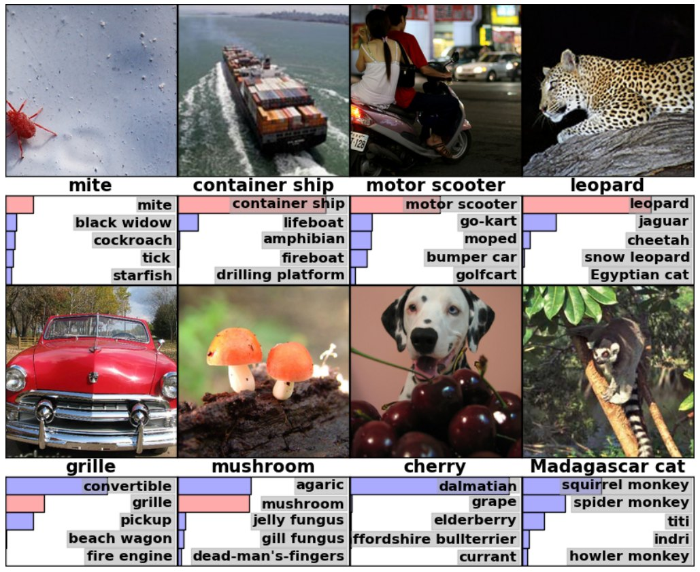
Восемь тестовых изображений ILSVRC-2010 и пять самых вероятных классов, которые выдала для них сеть. Длина полосы — присвоенная вероятность; красным отмечен верный класс, синим — остальные. Для grille и mushroom правильный ответ стоит лишь вторым, но в пятёрку попадает и в top-5 ошибку не засчитывается. Для cherry и Madagascar cat красной полосы нет вовсе — верного класса нет даже в пятёрке, и именно такие случаи формируют top-5 ошибку. 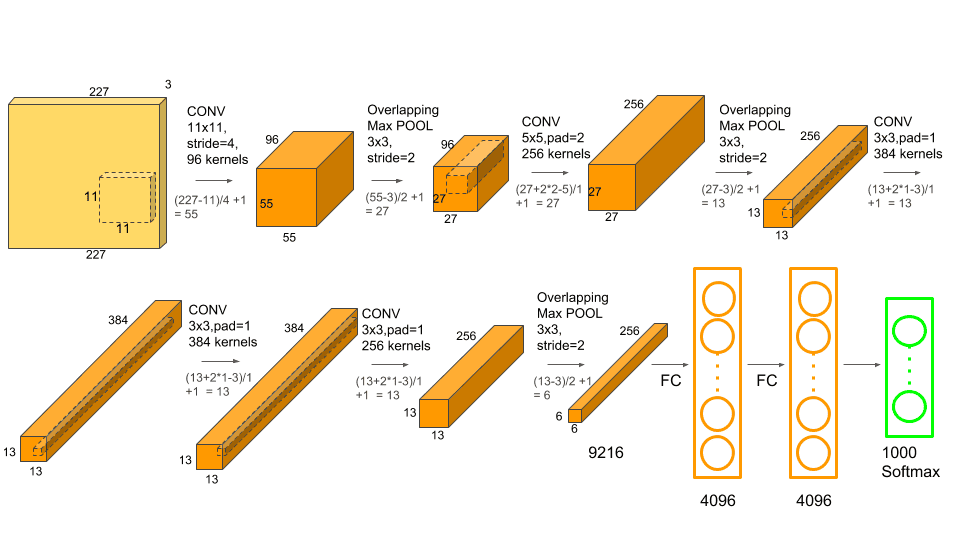
Изображение проходит через 5 свёрточных слоёв с чередующимися пулингами, после чего активации разворачиваются в вектор и подаются в три полносвязных слоя ($4096 \to 4096 \to 1000$). Разделение схемы на две параллельные ветви — не идея архитектуры, а вынужденная мера: модель не помещалась в память одной GPU того времени. - Первый свёрточный слой: фильтры $11 \times 11$ с шагом (stride) 4 — очень крупные, чтобы быстро уменьшить пространственный размер.
- Дальше: слой $5 \times 5$, затем три слоя $3 \times 3$, между ними — max pooling $3 \times 3$ с шагом 2.
- В конце: три полносвязных слоя $4096 \to 4096 \to 1000$ и softmax по 1000 классам ImageNet.
Всего около 60 млн параметров, из которых подавляющее большинство — в полносвязных слоях.
Три приёма, которые сделали обучение возможным
Раньше стандартной активацией был $\tanh$ или сигмоида. Их проблема: на больших по модулю входах функция выходит на «полку», её производная почти нулевая, и градиент, проходя через десяток таких слоёв, затухает до нуля — нижние слои перестают обучаться.
ReLU $f(x) = \max(0, x)$ на положительной части имеет производную ровно 1, поэтому градиент проходит без затухания. Авторы измерили: обучение до одного и того же уровня ошибки шло примерно в 6 раз быстрее. Именно скорость и позволила вообще довести обучение глубокой сети до конца.
В полносвязных слоях AlexNet сосредоточено ~58 из 60 млн параметров — это огромный запас для переобучения на 1.2 млн картинок.
Dropout во время обучения случайно обнуляет половину нейронов слоя на каждом шаге. Сеть не может полагаться на конкретный нейрон (тот в любой момент может «исчезнуть») и вынуждена строить избыточные, распределённые представления. На инференсе dropout выключается, а активации масштабируются.
Эффект можно понимать как усреднение огромного ансамбля подсетей — при стоимости обучения одной сети.
Третий приём против переобучения: искусственное расширение выборки.
- Случайные вырезки $224 \times 224$ из картинки $256 \times 256$ и их горизонтальные отражения — это увеличило эффективный размер датасета в 2048 раз.
- Случайные сдвиги цветовых каналов вдоль главных компонент цветового распределения (PCA color augmentation) — модель перестаёт зависеть от освещения.
Без аугментации, по признанию авторов, сеть переобучалась катастрофически.
Все три приёма — ReLU, dropout, аугментация — по отдельности были известны и раньше. Не хватало двух вещей:
- Данных. ImageNet (1.2 млн размеченных изображений, 1000 классов) появился в 2009-м; на десятках тысяч картинок такая сеть просто переобучилась бы.
- Вычислений. Авторы реализовали свёртки на GPU и обучали модель на двух GTX 580 около недели. На CPU это заняло бы месяцы.
Классический вывод из истории AlexNet: прорыв дал не столько новый алгоритм, сколько сочетание масштаба данных, железа и известных приёмов.
- Transfer learning как стандарт. Веса AlexNet, обученные на ImageNet, стали использовать как инициализацию для детекции, сегментации и других задач с малым количеством размеченных данных. Идея «обучись на большом общем датасете, дообучись на своём маленьком» родилась именно здесь.
- Иерархия признаков. Первые слои выучивают края и цветовые пятна, средние — текстуры и части объектов, последние — целые объекты. Это подтвердил анализ ZFNet годом позже.
- Направление развития. Все следующие архитектуры (VGG, GoogLeNet, ResNet) отвечали на вопросы, которые поставила AlexNet: как идти глубже, как сократить параметры, как сделать обучение стабильным.
- «AlexNet — первая свёрточная сеть». Нет. Свёрточные сети предложил Лекун ещё в 1989-м (LeNet успешно распознавал рукописные цифры в 1998-м). AlexNet — первая, кто выиграл на масштабе реальных изображений.
- Считать фильтры $11 \times 11$ хорошей практикой. Уже через год ZFNet показал, что $7 \times 7$ со stride 2 работает лучше, а VGG свела всё к $3 \times 3$. Большое ядро в первом слое — компромисс ради экономии вычислений, а не оптимальное решение.
- Путать разделение на две ветви с архитектурной идеей. Это следствие того, что модель не влезала в 3 ГБ памяти одной GPU; в современных реализациях AlexNet ветвей нет.
- Использовать AlexNet как backbone сегодня. Она проигрывает по всем параметрам: при 60 млн параметров даёт точность хуже, чем ResNet-18 с 11 млн. Её ценность — историческая и учебная.
Чем AlexNet принципиально изменила компьютерное зрение?
Она показала, что признаки не нужно конструировать вручную: глубокая свёрточная сеть выучивает их сама, если дать достаточно данных и вычислительных ресурсов. Top-5 ошибка на ImageNet упала с ~26% до ~15% за один год, и почти всё поле перешло на глубокое обучение.
Почему ReLU оказалась важнее, чем кажется?
Сигмоида и $\tanh$ насыщаются: на больших входах их производная почти нулевая, и градиент затухает при прохождении через много слоёв. У ReLU производная на положительной части равна 1, поэтому градиент проходит без затухания, и обучение шло примерно в 6 раз быстрее — что и позволило довести обучение глубокой сети до конца.
Зачем в AlexNet нужен dropout и где он применялся?
В полносвязных слоях, где сосредоточено почти всё из 60 млн параметров и высок риск переобучения. Dropout случайно обнуляет часть нейронов при обучении, заставляя сеть строить избыточные представления; эффект эквивалентен усреднению большого ансамбля подсетей.
Какие способы аугментации применялись и зачем?
Случайные вырезки $224\times224$ из $256\times256$ и горизонтальные отражения (расширение выборки примерно в 2048 раз), а также сдвиги цвета вдоль главных компонент цветового распределения. Цель — борьба с переобучением и инвариантность к сдвигу, отражению и освещению.
Что такое top-5 ошибка?
Доля изображений, для которых правильный класс не оказался среди пяти самых вероятных предсказаний модели. Метрика ILSVRC, разумная для датасета с 1000 близких классов, где на изображении часто присутствует несколько объектов.
Почему прорыв случился именно в 2012 году?
Совпали три условия: появился достаточно большой размеченный датасет (ImageNet, 2009), стали доступны GPU с эффективной реализацией свёрток, и были собраны воедино известные приёмы (ReLU, dropout, аугментация). Алгоритмическая новизна была умеренной — решил масштаб.
Что унаследовали от AlexNet последующие архитектуры?
Идею transfer learning (предобучение на ImageNet и дообучение на целевой задаче), понимание иерархичности выученных признаков и саму постановку вопросов о глубине, числе параметров и стабильности обучения, на которые отвечали VGG, GoogLeNet и ResNet.
-
ZFNet (2013)
ZFNet — модель Зайлера и Фергюса, победившая в ILSVRC-2013. Архитектурно это доработанная AlexNet, но главный вклад работы не в архитектуре, а в методе визуализации: авторы придумали, как посмотреть, на что реагируют внутренние фильтры сети, и по результатам этого анализа исправили недостатки AlexNet.
Если совсем простыми словами: AlexNet работала, но никто не понимал почему. ZFNet впервые открыла чёрный ящик — показала картинками, что именно выучивает каждый слой, — и на основе увиденного точечно починила архитектуру. Это первый пример, когда интерпретируемость привела к реальному улучшению модели.
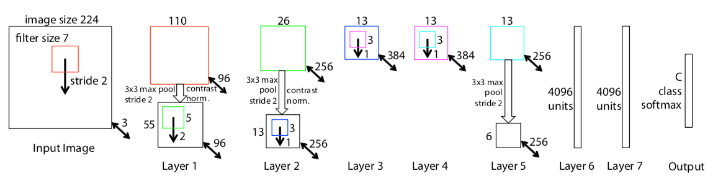
Общий каркас повторяет AlexNet — 5 свёрточных и 3 полносвязных слоя. Изменены параметры первого слоя ($7\times7$ со stride 2 вместо $11\times11$ со stride 4) и увеличено число фильтров в средних слоях. Два точечных изменения относительно AlexNet:
- Первый свёрточный слой: фильтр $7 \times 7$ с шагом 2 вместо $11 \times 11$ с шагом 4.
- Средние слои: увеличено число фильтров (сеть стала шире на слоях 3–5).
Результат: top-5 ошибка снизилась с $\sim 15.4\%$ до $\sim 14.8\%$. Всё остальное — ReLU, dropout, аугментация, схема обучения — осталось от AlexNet.
Шаг (stride) 4 означает, что фильтр прыгает через 4 пикселя: сеть смотрит на изображение «через каждую четвёртую точку» и большую часть входного сигнала просто не видит.
При stride 2 фильтр движется вдвое плотнее, соседние окна перекрываются сильнее, и на выходе получается вдвое более подробная карта признаков. Мелкое ядро $7 \times 7$ при этом лучше локализует детали, чем громоздкое $11 \times 11$, которое усредняет всё внутри большой области.
Ключевая мысль: агрессивное прореживание в самом начале сети необратимо — информация, потерянная на первом слое, дальше не восстанавливается, сколько слоёв ни добавляй.
Деконволюция: как заглянули внутрь сети
Идея авторов: чтобы понять, на что реагирует конкретный нейрон, надо обратить прямой проход. Берём активацию этого нейрона, обнуляем все остальные и прогоняем сигнал назад через сеть — через транспонированные свёртки, обратный ReLU и «размаскированный» пулинг (для этого при прямом проходе запоминают, откуда пришёл максимум).
На выходе получается картинка в пространстве пикселей, показывающая, какой фрагмент входа возбудил этот нейрон. Метод назвали деконволюционной сетью (deconvnet); это предок современных методов вроде Grad-CAM.
Прогнали визуализацию по всем слоям и получили чёткую картину:
- Слои 1–2 — простейшие структуры: границы разной ориентации, градиенты, цветовые пятна. Рецептивное поле маленькое, фрагменты крошечные.
- Слой 3 — текстуры и повторяющиеся узоры: сетки, решётки, мех, буквы.
- Слои 4–5 — части объектов и целые объекты: морды собак, колёса, лица, силуэты.
Это эмпирически подтвердило гипотезу об иерархии представлений в CNN: сеть строит признаки от простого к сложному, каждый слой комбинирует признаки предыдущего.
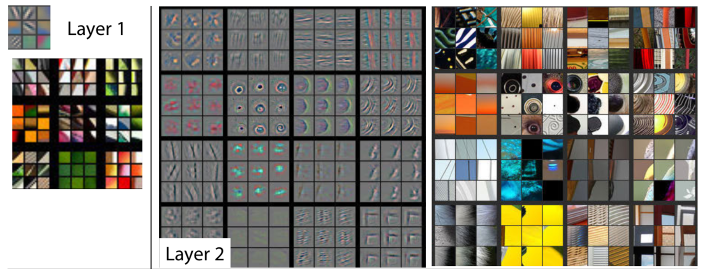
Визуализации для слоёв 1 и 2. Фрагменты изображения очень мелкие для слоя 1 и заметно крупнее для слоя 2 — это прямое следствие роста рецептивного поля: нейрон второго слоя «видит» область, собранную из нескольких окон первого. 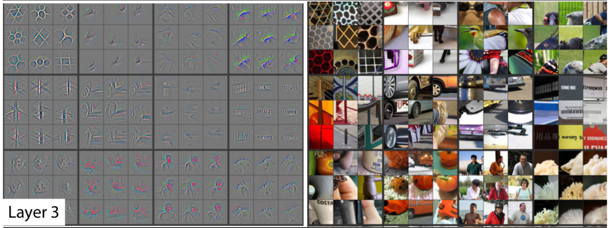
Слой 3: фрагменты крупнее, чем в слоях 1–2, а структуры сложнее — сетки, текст, повторяющиеся текстуры. Это переходный уровень между «краями» и «частями объектов». 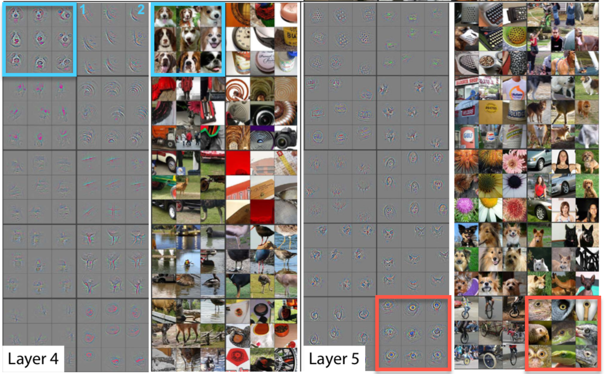
Слои 4 и 5: фрагменты занимают уже значительную часть изображения, а нейроны реагируют на целые объекты и их крупные части — морды животных, колёса, силуэты. Верхние слои оперируют семантикой, а не текстурой. Самое ценное применение метода — не любование фильтрами, а поиск дефектов. Визуализация первого слоя AlexNet показала две болезни:
- «Мёртвые» фильтры — нейроны, у которых визуализация выглядит как шум: они не выучили ничего осмысленного и просто занимают место. У AlexNet таких было много.
- Артефакты наложения (aliasing) — характерные сетчатые узоры во втором слое. Они возникают из-за слишком большого шага: свёртка со stride 4 берёт отсчёты слишком редко, чтобы корректно представить высокие пространственные частоты входа, и те «сворачиваются» в ложные низкочастотные решётки. Это тот же эффект наложения, что и при недостаточной частоте дискретизации сигнала.
После перехода на $7 \times 7$ со stride 2 мёртвых фильтров осталось единицы, а сетчатые артефакты исчезли — то есть визуализация не только объяснила проблему, но и подтвердила, что исправление сработало.
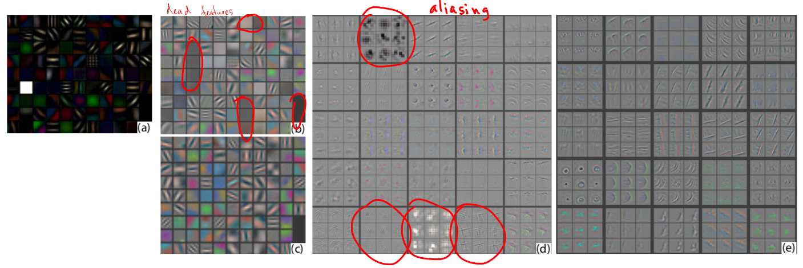
(a) Признаки первого слоя ZFNet без ограничения масштаба. (b) Первый слой AlexNet: множество «мёртвых» фильтров, не выучивших никакой закономерности. (c) Первый слой ZFNet: мёртвых фильтров почти не осталось. (d) Второй слой AlexNet: сетчатые паттерны — артефакты наложения из-за большого шага. (e) Второй слой ZFNet: артефактов нет. Помимо диагностики авторы применили метод к анализу предсказаний:
- Занавешивание (occlusion). Закрываем часть изображения серым квадратом и смотрим, как падает уверенность модели. Если закрыть морду собаки — вероятность класса рушится; если закрыть фон — почти не меняется. Так получают карту важности областей.
- Проверка на «списывание». Этот же приём ловит ситуации, когда модель опирается не на объект, а на сопутствующий контекст: например, определяет класс «лодка» по воде вокруг, а не по самой лодке.
До ZFNet единственным способом улучшить сеть был перебор гиперпараметров вслепую: поменяли, обучили неделю, посмотрели на метрику.
ZFNet предложила другой цикл: посмотреть внутрь $\to$ увидеть конкретный дефект $\to$ починить именно его. Мёртвые фильтры и артефакты наложения — это не абстрактное «качество ниже», а понятная поломка с понятной причиной.
Отсюда выросло целое направление — интерпретируемость нейросетей (saliency maps, Grad-CAM, feature visualization), а сама идея, что архитектурные решения надо обосновывать наблюдениями, стала нормой.
- Путать деконволюцию из ZFNet с транспонированной свёрткой. В ZFNet deconvnet — инструмент анализа, он не обучается и не имеет собственных весов (использует транспонированные веса самой сети). В генеративных моделях и сегментации «deconvolution» означает обучаемый слой апсемплинга — это другое.
- Считать визуализацию точным ответом на вопрос «почему модель так решила». Она показывает, что возбуждает нейрон, но не даёт причинного объяснения предсказания; занавешивание в этом смысле надёжнее.
- Сводить вклад ZFNet к смене размера фильтра. Смена дала 0.6 п.п. точности; метод визуализации оказал влияние несопоставимо большее.
- Думать, что «мёртвые» фильтры — специфическая болезнь AlexNet. Они встречаются и в современных сетях; борются с ними нормализацией, правильной инициализацией и вариантами ReLU (Leaky ReLU, GELU).
Чем ZFNet отличается от AlexNet архитектурно?
Первый свёрточный слой использует фильтр $7\times7$ со stride 2 вместо $11\times11$ со stride 4, и увеличено число фильтров в средних слоях. Top-5 ошибка на ImageNet снизилась с ~15.4% до ~14.8%.
Почему уменьшение размера и шага первого фильтра улучшило качество?
Большой шаг прореживает вход: сеть видит изображение через каждый четвёртый пиксель и безвозвратно теряет детали, которые уже не восстановить на следующих слоях. Шаг 2 даёт вдвое более подробную карту признаков, а меньшее ядро точнее локализует структуры.
Как работает деконволюционная визуализация?
Активацию одного нейрона оставляют, остальные обнуляют и прогоняют сигнал в обратном направлении через транспонированные свёртки, обратный ReLU и пулинг с запомненными позициями максимумов. Результат — картинка в пространстве пикселей, показывающая, какой фрагмент входа возбуждает этот нейрон.
Какую иерархию признаков показала визуализация?
Слои 1–2 реагируют на края, градиенты и цветовые пятна; слой 3 — на текстуры и повторяющиеся узоры; слои 4–5 — на части объектов и целые объекты. Это эмпирически подтвердило, что CNN строит представления от простого к сложному.
Какие дефекты AlexNet были обнаружены с помощью визуализации?
«Мёртвые» фильтры первого слоя, не выучившие никакой осмысленной структуры, и артефакты наложения (сетчатые паттерны) во втором слое, вызванные слишком большим шагом. Оба дефекта исчезли после изменения параметров первого слоя.
Что такое occlusion-анализ и что он даёт?
Метод, при котором часть изображения закрывается серым квадратом, а затем измеряется падение уверенности модели. Так строится карта важности областей и проверяется, опирается ли модель на сам объект или на сопутствующий контекст.
В чём главное значение работы ZFNet?
Она ввела цикл «посмотреть внутрь $\to$ найти конкретный дефект $\to$ исправить его» вместо слепого перебора гиперпараметров и положила начало направлению интерпретируемости нейросетей, из которого выросли saliency maps, Grad-CAM и современные методы feature visualization.
-
VGG (2014)
VGG — серия свёрточных сетей от Visual Geometry Group (Оксфорд), 2014 год. Главная идея: отказаться от подбора размера фильтра для каждого слоя и везде использовать только $3 \times 3$, компенсируя маленькое ядро глубиной. Самая известная модель — VGG-16 (16 слоёв с весами), top-5 ошибка $\sim 7.3\%$ на ImageNet, второе место на ILSVRC-2014.
Если совсем простыми словами: VGG — это архитектура без выдумок. Один и тот же блок повторяется снова и снова: несколько свёрток $3\times3$, потом пулинг вдвое, потом опять. Никаких параллельных ветвей и хитрых модулей — только глубина и однообразие. Именно за предсказуемость её и полюбили.
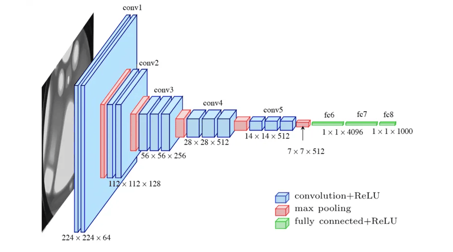
Пять блоков свёрток $3\times3$, разделённых max-pooling $2\times2$: пространственный размер падает $224 \to 112 \to 56 \to 28 \to 14 \to 7$, а число каналов растёт $64 \to 128 \to 256 \to 512 \to 512$. В конце — три полносвязных слоя. Обратите внимание на регулярность: каждый пулинг вдвое уменьшает сторону и вдвое увеличивает глубину. Структура предельно однородна:
- Блок = несколько свёрток $3 \times 3$ со stride 1 и padding 1 (пространственный размер сохраняется), каждая с ReLU.
- После блока — max pooling $2 \times 2$ со stride 2: сторона карты признаков уменьшается вдвое.
- При каждом уменьшении разрешения число каналов удваивается — это компенсирует потерю пространственной информации.
- Финал: два полносвязных слоя по 4096 нейронов и один на 1000 классов.
Ключевая идея: стек $3\times3$ вместо большого ядра
Три последовательные свёртки $3 \times 3$ дают то же рецептивное поле, что одна $7 \times 7$: каждый слой расширяет обзор на 2 пикселя, $3 + 2 + 2 = 7$. Но выигрыш двойной.
Меньше параметров. При $C$ каналах на входе и выходе:
- одна свёртка $7\times7$: $7^2 C^2 = 49C^2$ весов;
- три свёртки $3\times3$: $3 \cdot 3^2 C^2 = 27C^2$ весов.
Экономия ~45% при том же обзоре.
Больше нелинейности. Между свёртками стоят две дополнительные ReLU. Одна большая свёртка — это одно линейное преобразование с одной нелинейностью на выходе; три маленькие — три преобразования с тремя нелинейностями. Функция, которую способен выразить блок, становится существенно богаче.
Пусть на входе блока карта признаков с 256 каналами, на выходе тоже 256.
Вариант Параметров Рецептивное поле Нелинейностей одна $7\times7$ $49 \cdot 256^2 \approx 3.2$ млн $7\times7$ 1 три $3\times3$ $27 \cdot 256^2 \approx 1.8$ млн $7\times7$ 3 При этом второй вариант ещё и точнее на практике. Именно этот расчёт стал стандартным аргументом, после которого крупные ядра почти исчезли из середины сетей — вплоть до возвращения в ConvNeXt в 2022-м, но уже в другом контексте (depthwise-свёртки).
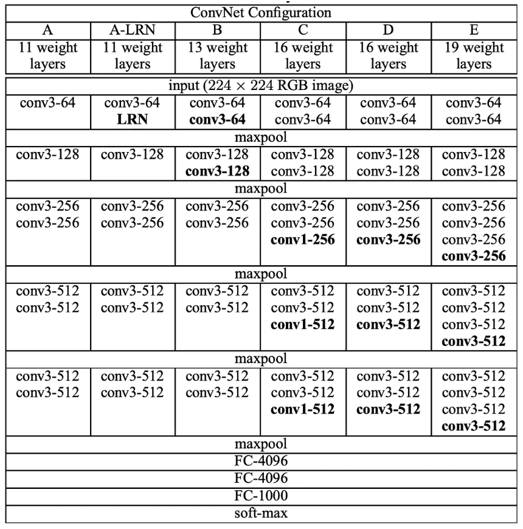
Варианты VGG от A (11 слоёв) до E (19 слоёв): различаются только числом свёрток внутри блоков. Такая сетка конфигураций позволила авторам аккуратно измерить вклад именно глубины — при прочих равных точность росла до 19 слоёв, а дальше переставала. Авторы обучили конфигурации от 11 до 19 слоёв, меняя только число свёрток и ничего больше. Это редкий для того времени чистый эксперимент, который показал: качество монотонно растёт с глубиной — до 19 слоёв.
Дальше рост прекращался: сеть переставала обучаться. Причину объяснили в следующем году — деградация глубоких сетей, решённая residual-связями в ResNet. VGG, таким образом, обозначила потолок для «наивной» глубины.
Главный недостаток VGG-16 — вес. Около 138 млн параметров, из них примерно 123 млн (почти 90%!) — в трёх полносвязных слоях.
Основной виновник — первый полносвязный слой: он получает развёрнутую карту $7 \times 7 \times 512 = 25088$ значений и соединяет её с 4096 нейронами, то есть $25088 \times 4096 \approx 103$ млн весов в одном слое.
Для сравнения: вышедшая одновременно GoogLeNet при лучшей точности имеет около 5 млн параметров — в 27 раз меньше. Именно из-за этого контраста в последующих архитектурах полносвязные слои заменили на global average pooling.
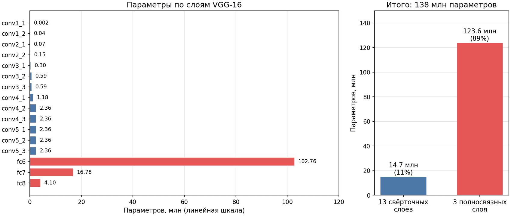
Слева — число весов каждого слоя VGG-16 в линейном масштабе: синие столбики свёрточные, красные полносвязные. Столбик fc6 (102.76 млн) длиннее суммы всех тринадцати свёрточных слоёв вместе взятых, а самая тяжёлая свёртка весит всего 2.36 млн. Справа тот же факт в двух столбиках: свёрточная часть — 14.7 млн параметров (11%), три полносвязных слоя — 123.6 млн (89%). Отсюда и практика брать в качестве backbone только свёрточную часть. Несмотря на вес, VGG на годы стала стандартным backbone — сетью-основой для других задач:
- Детекция: Fast R-CNN и Faster R-CNN изначально строились на VGG-16.
- Сегментация: FCN (fully convolutional networks) переделывала VGG, заменяя полносвязные слои на свёрточные.
- Перенос стиля и перцептивные потери: признаки промежуточных слоёв VGG до сих пор используются как мера «похожести изображений по содержанию» (perceptual loss) — здесь она жива и в 2020-х.
Причина популярности — предсказуемость: однородная структура без ветвлений легко разрезается на части, легко модифицируется и легко переносится на новую задачу.
Сама модель устарела, но два её принципа стали общими:
- Маленькие ядра, собранные в стек. ResNet, DenseNet, ResNeXt — все строятся на $3\times3$; это прямое наследие VGG.
- Повторяющийся блок как единица проектирования. Вместо ручной настройки каждого слоя описывают один блок и правило его повторения. На этом стоят все последующие семейства архитектур, вплоть до трансформеров, где повторяется энкодерный блок.
Плюс правило «уменьшил разрешение вдвое — удвой каналы», которое до сих пор применяется по умолчанию.
- «VGG глубже, значит лучше ResNet». Нет: у VGG-19 всего 19 слоёв, и дальше наивное углубление ломается. ResNet идёт до 152 слоёв именно потому, что решил проблему деградации, а не потому, что «просто добавил слоёв».
- Считать, что параметры сидят в свёртках. В VGG-16 90% весов — в полносвязных слоях. Свёрточная часть весит около 15 млн, и именно её обычно и берут как backbone.
- Путать глубину и рецептивное поле. Стек $3\times3$ выигрывает у большого ядра не рецептивным полем (оно то же самое), а числом параметров и количеством нелинейностей.
- Использовать VGG в проде из-за «простоты». По соотношению точность/вычисления она проигрывает ResNet-50 в разы; сегодня её оправданно берут разве что для perceptual loss.
В чём основная идея архитектуры VGG?
Использовать во всей сети только свёртки $3\times3$ со stride 1, компенсируя малый размер ядра глубиной, и строить сеть из однотипных повторяющихся блоков «несколько свёрток + пулинг», удваивая число каналов при каждом уменьшении разрешения вдвое.
Почему три свёртки $3\times3$ предпочтительнее одной $7\times7$?
При одинаковом рецептивном поле $7\times7$ стек из трёх $3\times3$ требует $27C^2$ параметров против $49C^2$ и содержит три нелинейности вместо одной. Это и дешевле, и выразительнее.
Что такое рецептивное поле и как оно растёт в VGG?
Область входного изображения, влияющая на значение одного нейрона. Каждая свёртка $3\times3$ расширяет его на 2 пикселя, а пулинг удваивает масштаб, поэтому в глубоких блоках нейрон уже «видит» большую часть картинки.
Сколько параметров в VGG-16 и где они сосредоточены?
Около 138 млн, из которых примерно 90% приходится на три полносвязных слоя; только первый из них содержит около 103 млн весов ($7\cdot7\cdot512 \times 4096$). Свёрточная часть весит около 15 млн.
Почему VGG не стали делать глубже 19 слоёв?
Дальше начиналась деградация: более глубокие сети обучались хуже, и ошибка росла даже на обучающей выборке. Проблему решили только residual-связи в ResNet годом позже.
Почему VGG так долго использовали как backbone?
Из-за однородной структуры без ветвлений: её легко резать на части, модифицировать и переносить на детекцию, сегментацию и перенос стиля. Признаки её промежуточных слоёв до сих пор применяются в perceptual loss.
Какие идеи VGG используются в современных архитектурах?
Стек малых ядер $3\times3$ вместо больших, проектирование сети через повторяющийся типовой блок и правило «уменьшил пространственный размер вдвое — удвой число каналов».
-
GoogLeNet / Inception v1 (2014)
GoogLeNet (Inception v1) — сеть команды Google Research, победившая в ILSVRC-2014 с top-5 ошибкой $\sim 6.7\%$. Ключевая новинка — Inception-модуль, который применяет фильтры разных размеров параллельно и позволяет сети самой решать, какой масштаб важнее. Сеть глубже VGG (22 слоя) и при этом содержит всего $\sim 5$ млн параметров против 138 млн у VGG-16.
Если совсем простыми словами: вместо того чтобы выбирать размер фильтра, применяют сразу все и склеивают результаты. Объекты на фотографиях бывают крупными и мелкими; фильтр $3\times3$ хорош для одних, $5\times5$ для других. Inception не заставляет выбирать: он считает и то и другое, а веса дальше сами определят, чему верить.
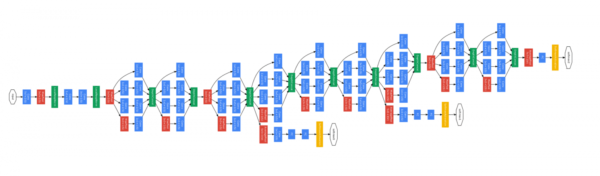
22 слоя, собранные из девяти Inception-модулей с периодическим пулингом между ними. Обратите внимание на две боковые ветви, отходящие от середины сети, — это вспомогательные классификаторы, работающие только при обучении, и на отсутствие громоздких полносвязных слоёв в конце. Inception-модуль
Внутри одного модуля вход одновременно проходит по четырём параллельным путям:
- свёртка $1 \times 1$;
- свёртка $3 \times 3$;
- свёртка $5 \times 5$;
- max pooling $3 \times 3$.
Выходы всех четырёх веток конкатенируются по каналам — то есть просто складываются в один тензор друг за другом. Все ветви сохраняют пространственный размер (padding подобран так), поэтому склейка возможна.
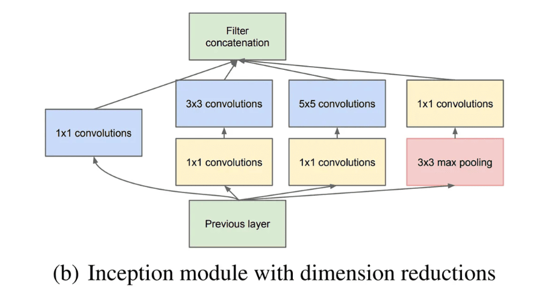
Четыре параллельных пути и конкатенация их выходов по каналам. Свёртки $1\times1$ перед ветками $3\times3$ и $5\times5$ (и после пулинга) — это bottleneck: они сжимают число каналов, без чего модуль был бы вычислительно неподъёмным. Наивный модуль слишком дорог. Свёртка $5 \times 5$ по входу с 256 каналами, выдающая 128 каналов, стоит $5^2 \cdot 256 \cdot 128 \approx 819$ тыс. умножений на каждую позицию. Если складывать такие ветви параллельно да ещё в 9 модулей подряд, сеть не обучить.
Решение: перед дорогой свёрткой поставить свёртку $1 \times 1$, которая сжимает каналы, скажем, с 256 до 32. Свёртка $1\times1$ не смотрит на соседей — она работает с одним пикселем, но по всем каналам, то есть выполняет линейную комбинацию каналов. Это как «пересобрать» 256 признаков в 32 наиболее информативных.
Считаем стоимость после сжатия: $1 \cdot 256 \cdot 32 + 5^2 \cdot 32 \cdot 128 \approx 8.2$ тыс. $+$ 102.4 тыс. $\approx 111$ тыс. — в 7.4 раза дешевле при почти том же качестве. Такой сжимающий слой называют bottleneck, и этот приём с тех пор используется повсеместно.
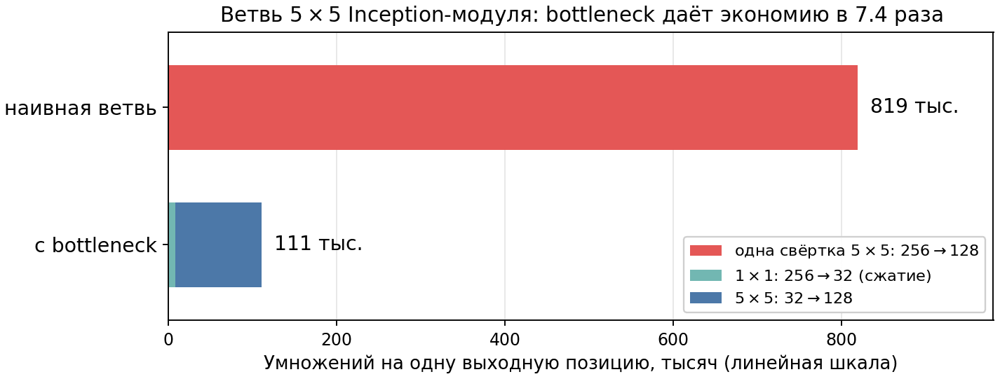
Тот же расчёт в картинке: стоимость ветви $5\times5$ при входе 256 каналов и выходе 128, в умножениях на одну выходную позицию, линейная шкала. Верхний красный столбик — наивный вариант, 819 тысяч. Нижний — тот же результат через bottleneck: узкая бирюзовая полоска слева это сжатие $1\times1$ (8.2 тысячи), синяя часть — сама свёртка $5\times5$, но уже в 32 каналах (102.4 тысячи), итого 111 тысяч. Видно, что почти вся стоимость сидит в дорогой свёртке, и достаточно сузить для неё вход, чтобы ветвь подешевела в 7.4 раза. Возьмём фотографию улицы. На ней есть:
- дорожный знак вдалеке — занимает 15$\times$15 пикселей;
- машина на переднем плане — 200$\times$200 пикселей;
- текстура асфальта — мелкая, повторяющаяся.
Для знака нужен мелкий фильтр (крупный размажет его вместе с фоном), для контура машины — крупный обзор, для текстуры — снова мелкий. Заранее сказать, какой масштаб понадобится на данном слое, невозможно: это зависит от конкретного изображения.
Inception-модуль обрабатывает все три масштаба и передаёт дальше все результаты; следующие слои через веса решают, какие каналы важны в данном случае. Фактически выбор размера фильтра из гиперпараметра превратился в обучаемый параметр.
При глубине 22 слоя градиент от финального softmax до первых слоёв доходил ослабленным. Авторы подключили два вспомогательных классификатора к промежуточным слоям: каждый со своим softmax и своей функцией потерь, добавляемой к общей с весом 0.3.
Смысл: градиент попадает в середину сети напрямую, коротким путём, а не только через все верхние слои. На инференсе эти ветви отбрасывают.
Это был костыль — довольно скоро residual-связи в ResNet решили ту же задачу принципиально лучше, и от вспомогательных классификаторов отказались (в Inception-v3 их вклад признали в основном регуляризирующим).
5 млн параметров против 138 млн у VGG при лучшей точности — за счёт двух решений:
- Bottleneck-свёртки $1\times1$ внутри каждого модуля, срезающие основную часть стоимости.
- Global average pooling вместо полносвязных слоёв. Вместо того чтобы разворачивать финальную карту $7\times7\times1024$ в вектор и вешать слой на 4096 нейронов (что дало бы ~200 млн весов), просто усредняют каждый канал по всей пространственной карте: получается вектор из 1024 чисел, к которому крепится единственный слой на 1000 классов.
Второй приём заодно работает как регуляризация и делает сеть устойчивее к изменению размера входа. Сегодня global average pooling — стандартное завершение любой свёрточной сети.
- Свёртка $1\times1$ как bottleneck — используется в ResNet-50/101/152, MobileNet (там она называется pointwise), ShuffleNet, SENet. Это, пожалуй, самый переиспользуемый приём во всей истории CNN.
- Global average pooling — во всех современных архитектурах.
- Параллельные ветви с конкатенацией — развились в Inception v2–v4, ResNeXt (там ветви одинаковые, а не разные) и в multi-scale модули детекторов.
- «Свёртка $1\times1$ бесполезна — она же не смотрит на соседей». Она смотрит вдоль каналов и выполняет их обучаемую линейную комбинацию с последующей нелинейностью. Это полноценный слой уменьшения/увеличения размерности, аналог полносвязного слоя, применённого к каждому пикселю.
- Считать, что Inception «дешевле, потому что мельче». Он дешевле именно из-за bottleneck-сжатия; наивный вариант с параллельными $3\times3$ и $5\times5$ был бы дороже последовательной сети, а не дешевле.
- Путать конкатенацию с суммированием. Inception склеивает выходы веток по каналам (число каналов растёт), ResNet складывает поэлементно (число каналов сохраняется). Это разные операции с разным смыслом.
- Ждать от GoogLeNet простоты VGG. Ветвлений много, конфигурация каждого модуля подбиралась вручную, и модифицировать такую сеть под свою задачу заметно сложнее — одна из причин, почему backbone'ом чаще выбирали VGG и ResNet.
В чём основная идея Inception-модуля?
Применять фильтры разных размеров ($1\times1$, $3\times3$, $5\times5$) и пулинг параллельно к одному входу и конкатенировать результаты по каналам. Так сеть не обязана заранее выбирать масштаб признаков — она обрабатывает несколько масштабов сразу, а веса следующих слоёв определяют, какие из них важны.
Зачем в Inception-модуле нужны свёртки $1\times1$?
Они сжимают число каналов перед дорогими свёртками $3\times3$ и $5\times5$ (bottleneck), снижая вычислительную стоимость модуля в разы. Без них параллельная схема была бы вычислительно неподъёмной.
Что делает свёртка $1\times1$ с точки зрения смысла?
Выполняет обучаемую линейную комбинацию каналов в каждой пространственной позиции, то есть меняет размерность признакового пространства по глубине, не затрагивая пространственные соседства. По сути это полносвязный слой, применённый независимо к каждому пикселю.
Почему GoogLeNet при большей глубине имеет в 27 раз меньше параметров, чем VGG-16?
Из-за bottleneck-свёрток $1\times1$ внутри модулей и замены громоздких полносвязных слоёв на global average pooling: вместо разворачивания карты признаков в вектор каждый канал усредняется в одно число.
Что такое global average pooling и чем он лучше полносвязного слоя?
Усреднение каждого канала финальной карты признаков по всем пространственным позициям. Он не содержит обучаемых параметров, поэтому убирает основной источник переобучения, работает как регуляризация и делает сеть устойчивой к изменению размера входа.
Зачем нужны вспомогательные классификаторы?
Чтобы при глубине 22 слоя градиент доходил до нижних слоёв: промежуточные softmax-ветви добавляют свою функцию потерь и подают градиент в середину сети напрямую. На инференсе они отключаются. С появлением residual-связей от них отказались.
Чем конкатенация в Inception отличается от суммирования в ResNet?
Inception склеивает выходы параллельных веток по оси каналов, увеличивая их число и сохраняя информацию каждой ветки отдельно. ResNet складывает выход блока со входом поэлементно, сохраняя число каналов и создавая прямой путь для градиента.
-
ResNet (2015)
ResNet — семейство остаточных сетей (Residual Networks) от Microsoft Research, конец 2015 года. Главная идея — skip-connection: выход блока складывается с его же входом, благодаря чему сети из сотен слоёв стали обучаемыми. ResNet выиграла ILSVRC-2015 с top-5 ошибкой $\sim 3.6\%$ (лучше человеческого уровня $\sim 5\%$), а ResNet-152 показала ещё более высокий результат.
Если совсем простыми словами: вместо того чтобы просить слой выдать ответ целиком, его просят выдать только поправку к тому, что уже пришло. Если поправка не нужна — достаточно выдать ноль, и вход пройдёт дальше без изменений. Это звучит как мелочь, но именно это сняло потолок глубины, о который упёрлась VGG.
Проблема, которую решает ResNet
Авторы поставили простой эксперимент: обучили обычную свёрточную сеть из 20 слоёв и такую же из 56 слоёв. Результат: 56-слойная хуже 20-слойной, причём не только на тесте, но и на обучающей выборке.
Это не переобучение — при переобучении ошибка на обучении как раз падает. Это и не только затухание градиентов — batch normalization на тот момент уже применялась, и градиенты доходили.
Логический парадокс: 56-слойная сеть может воспроизвести 20-слойную — достаточно, чтобы 36 лишних слоёв выучили тождественное отображение. Значит, она обязана быть не хуже. Но оптимизация до такого решения не доходит: выучить тождественное отображение стеком свёрток с нелинейностями оказывается неожиданно трудно. Это явление и назвали деградацией.
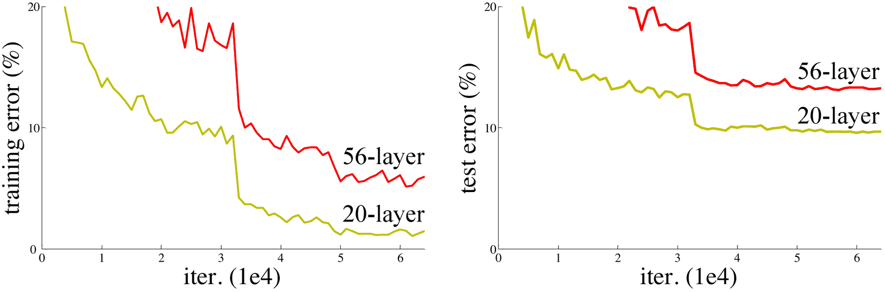
Тот самый эксперимент: обычные сети без skip-connection из 20 (жёлтая линия) и 56 (красная) слоёв на CIFAR-10. Резкий спад обеих кривых около $3.2 \cdot 10^4$ итераций — плановое понижение learning rate. Слева ошибка на обучающей выборке: у 56-слойной она останавливается примерно на 5.5% против 1.5% у 20-слойной, то есть глубокая сеть проигрывает там, где переобучение объяснением быть не может. Справа та же картина на тесте: около 13.3% против 9.7%. ResNet переформулирует задачу слоя. Пусть блок должен реализовать некоторое преобразование $H(x)$. Вместо того чтобы учить $H(x)$ напрямую, блок учит остаток:
$$F(x) = H(x) - x, \qquad \text{выход} = F(x) + x$$
Слагаемое $+x$ реализуется skip-connection — «коротким замыканием» в обход слоёв.
Ключевой выигрыш: чтобы получить тождественное отображение, теперь достаточно обнулить веса блока, а $F(x) = 0$ — это самая простая вещь, которой может научиться слой (веса и так инициализируются около нуля). Задача из «трудной» превратилась в «тривиальную».
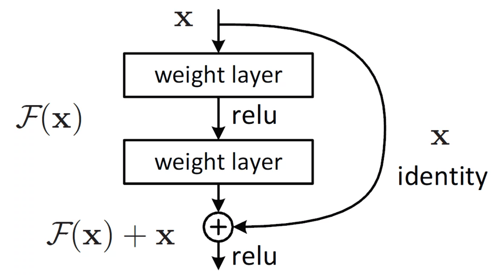
Два свёрточных слоя $3\times3$ и обходная дуга: вход $x$ складывается с выходом $F(x)$ поэлементно, уже после свёрток, но до финальной ReLU. Обходной путь не содержит параметров — это просто копирование тензора. Второе следствие skip-connection видно из производной. Для блока $y = F(x) + x$:
$$\frac{\partial y}{\partial x} = \frac{\partial F(x)}{\partial x} + 1$$
Единица здесь принципиальна. При обратном распространении градиент через $L$ обычных слоёв — это произведение $L$ множителей; если каждый чуть меньше единицы, произведение экспоненциально затухает. В residual-сети каждый множитель имеет вид $(\text{что-то} + 1)$, поэтому у градиента всегда есть прямой путь до любого слоя, по которому он проходит без умножений.
Отсюда популярная формулировка: skip-connection создаёт «магистраль для градиента» сквозь всю сеть.
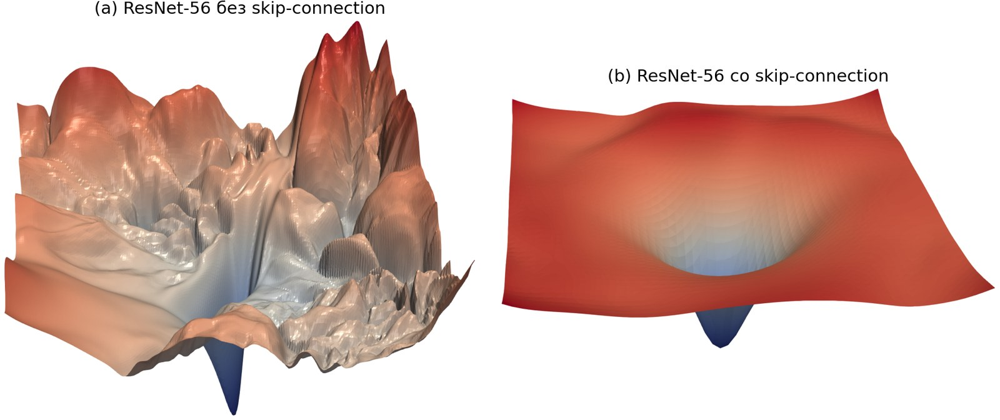
Поверхность функции потерь ResNet-56 вокруг обученного минимума: значение лосса откладывается по вертикали, а две горизонтальные оси — два случайных направления в пространстве весов (с фильтровой нормализацией, чтобы две картинки были сопоставимы по масштабу). Слева та же сеть, но без skip-connection: рельеф изрезан, усеян хребтами и локальными ямами, и спуск из случайной точки застревает в первой попавшейся. Справа — с ними: почти плоское плато и одна гладкая воронка. Skip-connection меняет не только поток градиента, но и саму геометрию задачи оптимизации. Иллюстрация из работы Visualizing the Loss Landscape of Neural Nets. Сравнение обычных сетей и ResNet при одинаковой глубине:
- Обычные сети: 18 слоёв обучаются нормально, 34 слоя — заметно хуже (та самая деградация).
- ResNet: 18 слоёв обучаются как обычная сеть, 34 слоя — лучше, чем 18. Порядок восстановился.
Дальше это масштабируется: ResNet-50, -101, -152 продолжают улучшать результат. На CIFAR авторы для демонстрации обучили сеть из 1202 слоёв — она обучилась (хотя и переобучилась на маленьком датасете).
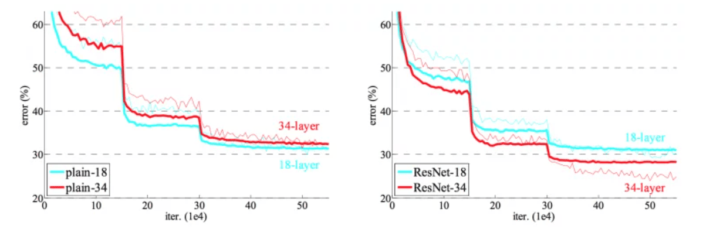
Слева — обычные сети: 34-слойная (жирная линия) идёт выше 18-слойной, то есть работает хуже. Справа — ResNet: порядок обратный, глубокая сеть уверенно лучше мелкой. Единственное отличие между графиками — наличие skip-connection. 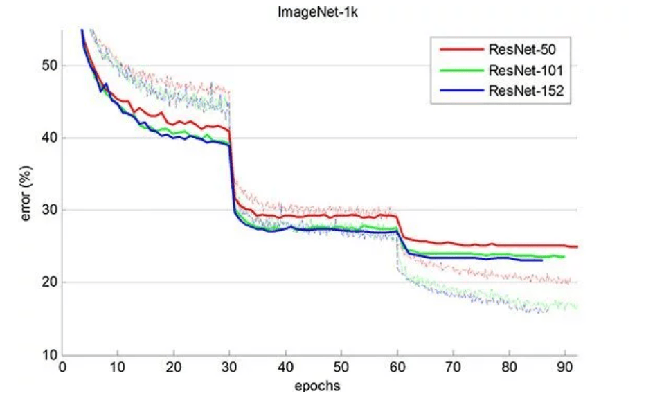
С ростом глубины ResNet качество продолжает расти. Без skip-connection на этих глубинах сеть перестала бы обучаться из-за деградации и затухающих градиентов. Устройство сети
Сеть собрана из четырёх стадий:
- Вход: свёртка $7 \times 7$ со stride 2 и max pooling — быстрое понижение разрешения с $224$ до $56$.
- Четыре стадии residual-блоков с 64, 128, 256 и 512 фильтрами. В начале каждой новой стадии разрешение уменьшается вдвое (stride 2), а число каналов удваивается.
- Выход: global average pooling и один полносвязный слой на 1000 классов.
Полносвязных слоёв-гигантов, как в VGG, здесь нет — отсюда всего $\sim 21$ млн параметров у ResNet-34 против 138 млн у VGG-16.
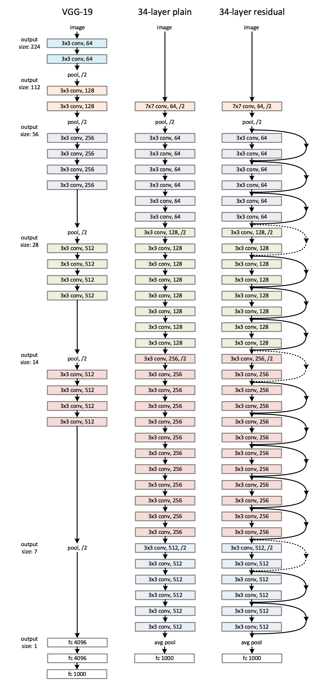
Пунктирные обходные дуги — те, где меняется размерность: там на skip-пути ставится свёртка $1\times1$ со stride 2, чтобы согласовать размер и число каналов. Сплошные дуги — чистое тождественное копирование без параметров. В ResNet-50 и глубже используется другой блок — bottleneck из трёх свёрток вместо двух:
$$1\times1 \;(\text{сжать каналы}) \;\to\; 3\times3 \;(\text{обработать}) \;\to\; 1\times1 \;(\text{разжать обратно})$$
Например, вход 256 каналов сжимается до 64, обрабатывается свёрткой $3\times3$ уже в 64 каналах и разворачивается обратно в 256. Дорогая свёртка $3\times3$ работает на вчетверо более узком тензоре, поэтому блок из трёх слоёв стоит примерно столько же, сколько обычный из двух.
Это тот же приём bottleneck, что и в Inception, — идея свёртки $1\times1$ как средства управления числом каналов оказалась универсальной.
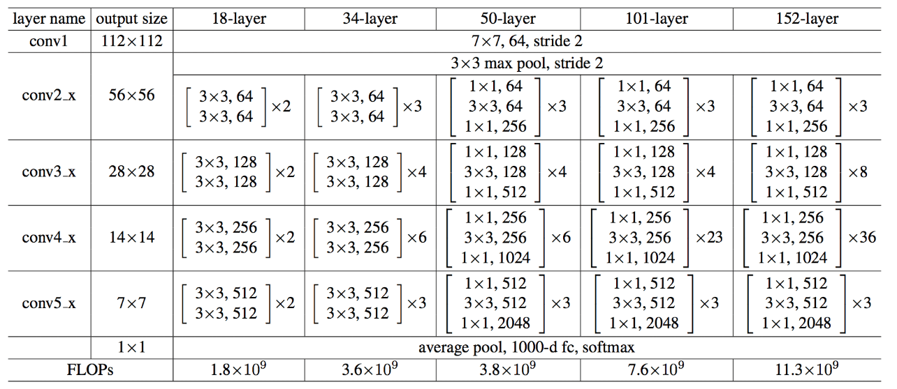
Конфигурации от ResNet-18 до ResNet-152: различаются числом блоков в каждой стадии и типом блока (обычный для 18/34, bottleneck начиная с 50). Каркас из четырёх стадий при этом одинаков — что и делает семейство удобным набором взаимозаменяемых backbone. Есть содержательная интерпретация, полезная на собеседовании: ResNet можно рассматривать как итеративное уточнение представления.
Каждый блок не строит новое представление с нуля, а слегка правит уже имеющееся: $x_{k+1} = x_k + F_k(x_k)$. Это в точности шаг метода Эйлера для дифференциального уравнения $\dot{x} = F(x)$ — наблюдение, из которого выросли Neural ODE.
Другая интерпретация (Veit et al., 2016): ResNet ведёт себя как ансамбль путей разной длины. При $n$ блоках через сеть проходит $2^n$ маршрутов (на каждом блоке сигнал может идти либо через свёртки, либо в обход), и эффективно работают в основном короткие. Это объясняет, почему удаление одного блока из обученной ResNet почти не портит качество, тогда как в VGG это ломает сеть полностью.
После 2015 года остаточные связи стали обязательным элементом почти любой глубокой архитектуры:
- Свёрточные сети: ResNeXt, SENet, EfficientNet, ConvNeXt — все на residual-блоках. ResNet-50 до сих пор стандартный backbone в детекции (Mask R-CNN, RetinaNet) и сегментации.
- Трансформеры: каждый блок трансформера — это
x + Attention(LN(x))иx + MLP(LN(x)). Без skip-connection ни GPT, ни BERT не обучились бы. - Диффузионные модели, U-Net, графовые сети — везде тот же приём.
Это редкий случай, когда одна идея на две строки кода изменила проектирование сетей во всех областях сразу.
- «ResNet решает затухание градиентов». Решает, но это следствие. Заявленная и главная проблема — деградация: глубокая сеть хуже мелкой даже на обучающей выборке, при том что градиенты доходят (BatchNorm уже была). Затухание — часть картины, а не вся.
- Путать сложение с конкатенацией. ResNet складывает выход блока со входом поэлементно, число каналов не меняется. DenseNet конкатенирует, и число каналов растёт. Разные механизмы с разными свойствами по памяти.
- Забывать про согласование размерностей. Когда блок меняет разрешение или число каналов, тождественный shortcut невозможен: на обходном пути ставят свёртку $1\times1$ с нужным stride (вариант B в статье).
- Считать, что skip-connection даёт качество «бесплатно» на мелких сетях. На 10–20 слоях выигрыш небольшой; вся ценность проявляется на глубине, где обычная сеть уже деградирует.
Какую проблему решает ResNet?
Деградацию глубоких сетей: при наивном увеличении числа слоёв качество падает даже на обучающей выборке. Причина не в переобучении, а в том, что оптимизация не находит хорошего решения — в частности, стеку нелинейных слоёв трудно выучить тождественное отображение.
Что такое residual-блок и что он вычисляет?
Блок вычисляет $y = F(x) + x$, где $F$ — несколько свёрточных слоёв, а $+x$ реализуется обходной связью без параметров. То есть блок учит не всё преобразование $H(x)$, а только остаток $F(x) = H(x) - x$ — поправку к входу.
Почему остаточная формулировка облегчает оптимизацию?
Потому что тождественное отображение достигается обнулением весов блока ($F(x)=0$) — самое лёгкое из возможных решений. Сети не нужно «пробиваться» к тождественности через нелинейности: она является отправной точкой, а слои лишь добавляют полезные поправки.
Как skip-connection влияет на градиент?
Производная блока равна $\partial F/\partial x + 1$. Единичное слагаемое даёт градиенту прямой путь к любому слою без цепочки умножений, поэтому он не затухает экспоненциально с глубиной, как в обычной сети.
Что такое bottleneck-блок и зачем он нужен?
Блок из трёх свёрток $1\times1 \to 3\times3 \to 1\times1$: первая сжимает число каналов, вторая обрабатывает узкий тензор, третья восстанавливает размерность. Он позволяет делать блок глубже при той же вычислительной стоимости и используется в ResNet-50 и более глубоких версиях.
Что делать, если размерности входа и выхода блока не совпадают?
На обходном пути ставится свёртка $1\times1$ с нужным шагом, приводящая число каналов и пространственный размер к выходным. Это происходит на границах стадий, где разрешение падает вдвое, а каналы удваиваются.
Чем skip-connection в ResNet отличается от плотных связей в DenseNet?
ResNet складывает вход с выходом поэлементно, сохраняя число каналов и постоянное потребление памяти. DenseNet конкатенирует выходы всех предыдущих слоёв, из-за чего число каналов растёт линейно, а память расходуется значительно интенсивнее.
Где сегодня применяется идея остаточных связей?
Практически везде: во всех современных свёрточных архитектурах, в каждом блоке трансформера (
x + Attention(x),x + MLP(x)), в U-Net, диффузионных и графовых моделях. Без неё обучение сетей из десятков и сотен слоёв нестабильно.
-
Inception v2-v4 (2015–2016)
Inception v2–v4 — развитие GoogLeNet в 2015–2016 годах. Работа «Rethinking the Inception Architecture» (v2/v3) добавила batch normalization, факторизацию свёрток и приёмы регуляризации; в 2016-м вышли Inception-v4 и Inception-ResNet, объединившие Inception-модули с остаточными связями. Top-5 ошибка на ImageNet опустилась до $\sim 3.1\%$.
Если совсем простыми словами: это серия «а давайте разложим дорогую операцию на несколько дешёвых». Каждая версия берёт большую свёртку и заменяет её комбинацией маленьких, дающих тот же обзор, но требующих меньше вычислений. Плюс аккуратно сформулированные правила проектирования, которые до этого никто не записывал явно.
Inception v2: факторизация свёрток
Первый шаг — тот же приём, что в VGG: свёртка $5\times5$ заменяется двумя последовательными $3\times3$.
Рецептивное поле сохраняется ($3 + 2 = 5$), а стоимость падает: $5^2 = 25$ против $2 \cdot 3^2 = 18$ операций на канал — экономия ~28%. Иначе говоря, свёртка $5\times5$ примерно в 2.78 раза дороже одной $3\times3$, так что две дешёвые выгоднее одной дорогой.
Бонусом добавляется лишняя нелинейность между слоями, что делает блок выразительнее.
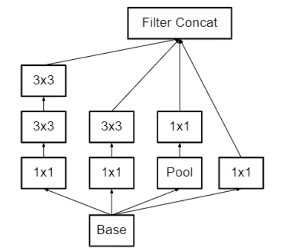
Свёртка $5\times5$ заменяется двумя последовательными $3\times3$: обзор тот же, параметров меньше, нелинейностей больше. Второй шаг радикальнее: свёртку $n \times n$ раскладывают на пару несимметричных — сначала $1 \times n$ (только по горизонтали), затем $n \times 1$ (только по вертикали).
Для $3\times3$: было $9$ операций, стало $3 + 3 = 6$ — на 33% дешевле. Для $7\times7$ выигрыш ещё заметнее: $49$ против $14$, то есть в 3.5 раза.
Интуиция: двумерный фильтр часто можно приблизить произведением двух одномерных (в обработке сигналов такие фильтры называют сепарабельными — гауссово размытие, например, именно такое). Сеть не обязана этому подчиняться, но на практике теряет мало.
Важная оговорка авторов: приём хорошо работает на средних разрешениях (карты $12\times12$–$20\times20$) и плохо на ранних слоях, где пространственная структура ещё сырая.
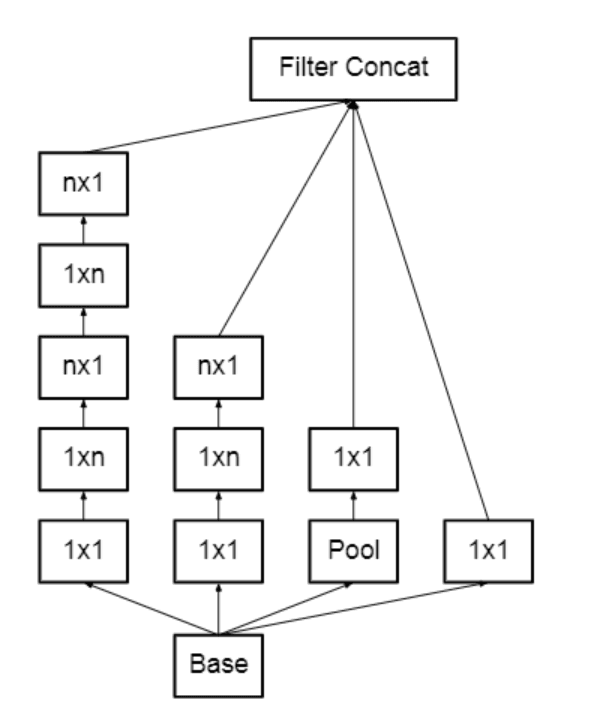
Свёртка $3\times3$ раскладывается на $1\times3$ и $3\times1$ — на 33% дешевле при том же рецептивном поле. Приём применяют на средних разрешениях, где он не вредит качеству. Отдельный урок работы: резко сжимать размерность вредно. Если слой уменьшает число каналов в несколько раз за один шаг, часть информации теряется безвозвратно, и никакая глубина дальше её не восстановит.
Поэтому в v2 блоки, понижающие разрешение, сделали шире, а не глубже: параллельно выполняются свёртка со stride 2 и пулинг, их выходы конкатенируются. Так пространственный размер падает, но суммарная «пропускная способность» слоя сохраняется.
Общее правило, сформулированное авторами: размерность представления должна убывать плавно от входа к выходу, без резких провалов.
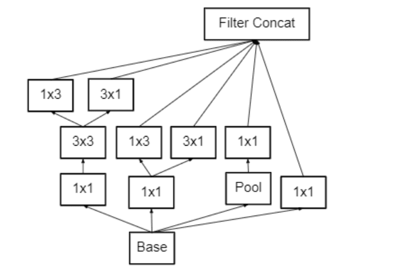
Чтобы избежать узкого места при понижении разрешения, блоки расширяют вместо углубления: ветви работают параллельно, и их выходы конкатенируются. Информация не теряется на переходе между стадиями. В v2 batch normalization ставится после почти каждой свёртки — из-за чего архитектуру иногда называют Inception-BN.
Что это даёт: нормализация активаций по батчу стабилизирует распределения внутри сети, позволяет брать существенно больший learning rate, ослабляет зависимость от инициализации и сама по себе работает как регуляризация. Практически BatchNorm ускорил обучение в разы и стал обязательным элементом всех последующих CNN.
Побочный эффект: с BatchNorm стал не нужен dropout в свёрточной части, а вспомогательные классификаторы из v1 потеряли смысл как средство передачи градиента — авторы признали, что те работали в основном как регуляризатор.
Inception v3
Inception-v3 — это v2 плюс набор приёмов обучения:
- Label smoothing — вместо жёсткой метки «класс 7 с вероятностью 1.0» используют «0.9 для верного класса, остальное размазано по прочим». Это мешает сети становиться патологически уверенной, улучшает калибровку и обобщение.
- RMSProp вместо SGD с моментом.
- Факторизованный $7\times7$ в стволе сети и расширенные модули (больше фильтров).
Результат: $\sim 78.8\%$ top-1 точности на ImageNet при $\sim 24$ млн параметров. Inception-v3 надолго стала рабочей лошадкой индустрии — в частности, именно её признаки используются для расчёта метрик FID и Inception Score у генеративных моделей.
Пусть 1000 классов, верный — №7. Обычная one-hot метка: $y_7 = 1$, остальные 0.
С label smoothing при $\varepsilon = 0.1$: $y_7 = 0.9$, а каждому из остальных 999 классов даётся $0.1/999 \approx 0.0001$.
Что меняется: с жёсткой меткой кросс-энтропия минимизируется только при логите верного класса, стремящемся к $+\infty$, — сеть бесконечно раздувает уверенность и переобучается. Со сглаженной меткой оптимум достигается при конечном разрыве логитов, и модель остаётся откалиброванной: её вероятность 0.9 действительно означает примерно 90% верных ответов.
Inception v4 и Inception-ResNet
Inception-v4 (2016) — очищенная и укрупнённая версия: авторы убрали накопившиеся исторические компромиссы (раньше архитектуру приходилось резать на части ради обучения на нескольких GPU) и единообразно увеличили масштаб модулей.
Inception-ResNet-v1/v2 — гибрид: внутрь Inception-модулей добавлены остаточные связи, а конкатенация ветвей заменяется свёрткой $1\times1$, приводящей число каналов к нужному для сложения со входом.
Обе достигли top-5 ошибки $\sim 3.1\%$. Главный практический вывод авторов: residual-связи не столько повышают итоговую точность, сколько заметно ускоряют сходимость — Inception-ResNet обучается значительно быстрее чистой Inception-v4 при сопоставимом финальном качестве.
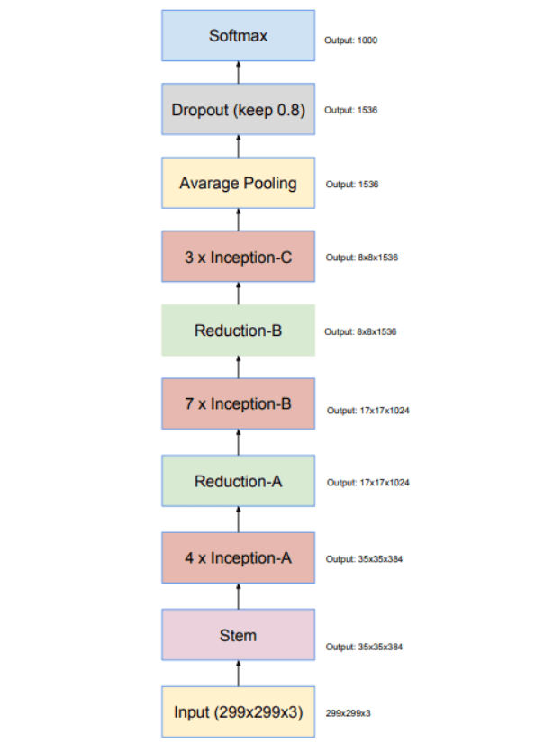
Ствол (stem) с агрессивным понижением разрешения, затем чередование модулей типа A, B, C (для разных разрешений) и понижающих модулей reduction между ними. Модули разных типов рассчитаны на разный масштаб карт признаков. 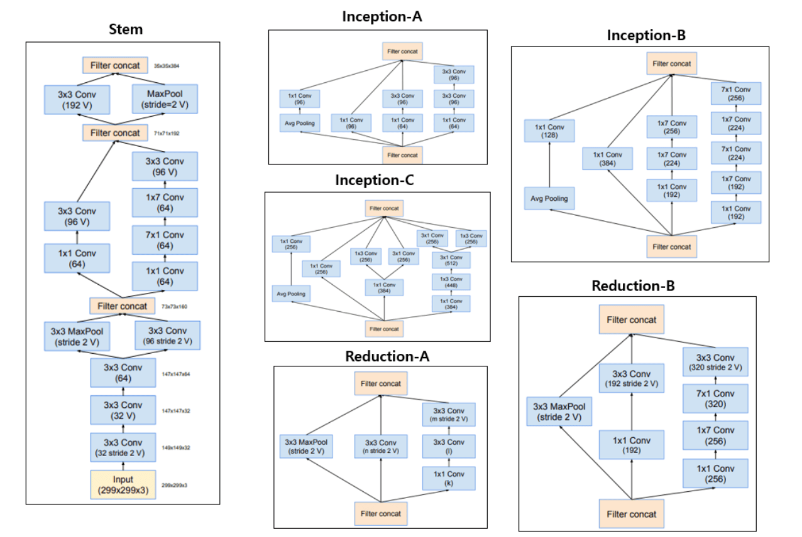
Модули A, B и C: A работает на крупных картах со свёртками $3\times3$, B — на средних с асимметричными $1\times7$ и $7\times1$, C — на мелких с $1\times3$ и $3\times1$. Размер ядра подобран под разрешение, на котором модуль работает. Авторы наткнулись на неприятный эффект: при более чем ~1000 фильтров residual-ветви обучение внезапно «умирало» — активации обращались в нули после нескольких десятков тысяч итераций, и снижение learning rate не помогало.
Лечение оказалось простым: масштабировать выход residual-ветви множителем 0.1–0.3 перед сложением со входом. Это классический пример того, что глубокие архитектуры чувствительны к деталям численной стабильности, которые не выводятся из теории, а находятся экспериментально.
Сами модели вышли из активного употребления — их вытеснили ResNet (проще) и EfficientNet (эффективнее). Но приёмы разошлись повсеместно:
- Факторизация свёрток — прямой предок depthwise separable свёрток в MobileNet и Xception («Extreme Inception»), где идея разложения доведена до предела.
- Label smoothing — стандарт обучения классификаторов, используется в том числе при обучении трансформеров.
- Batch normalization — обязательный элемент CNN.
- Правило плавного сужения размерности — общий принцип проектирования: не создавайте резких узких мест.
- Считать факторизацию бесплатной. Разложение $n\times n$ на $1\times n$ и $n\times 1$ сужает класс представимых фильтров: сепарабельным фильтром можно приблизить не всякий. Поэтому его применяют на средних разрешениях, а не везде подряд.
- «Inception-ResNet точнее Inception-v4». Разница в точности мала; главный выигрыш — скорость сходимости.
- Путать Inception-v2 из этой статьи с Inception-BN. Терминология в литературе смешана: под «v2» иногда понимают только добавление BatchNorm, иногда весь набор улучшений вместе с факторизацией. Уточняйте, о чём речь.
- Забывать про масштабирование residual-ветви. При большом числе фильтров без него Inception-ResNet просто не обучается — это не мелочь реализации, а необходимое условие.
Что такое факторизация свёрток и зачем она нужна?
Замена одной большой свёртки набором меньших с тем же рецептивным полем: $5\times5$ на две $3\times3$, а $n\times n$ на пару асимметричных $1\times n$ и $n\times1$. Это снижает число параметров и вычислений (на 28% и 33% соответственно) и добавляет нелинейности между слоями.
Почему асимметричную факторизацию не применяют на ранних слоях?
Потому что она сужает класс представимых фильтров до приближённо сепарабельных, а на высоких разрешениях, где извлекаются базовые пространственные структуры, это заметно вредит качеству. Авторы рекомендуют применять её на средних картах признаков (примерно $12\times12$–$20\times20$).
Что такое проблема бутылочного горлышка в терминах Inception-v2?
Резкое сжатие размерности представления в одном слое, при котором информация теряется безвозвратно. Решение — понижать разрешение, расширяя блок (параллельные свёртка со stride 2 и пулинг с конкатенацией), а не углубляя его, и в целом сужать размерность плавно.
Что даёт batch normalization и почему она изменила обучение CNN?
Нормализация активаций по батчу стабилизирует распределения внутри сети, позволяет использовать существенно больший learning rate, снижает зависимость от инициализации и работает как регуляризация. Обучение ускоряется в разы, а необходимость в dropout в свёрточной части отпадает.
Что такое label smoothing и как оно работает?
Замена one-hot метки на сглаженную: верному классу присваивается $1-\varepsilon$, остаток равномерно распределяется по остальным. Это не даёт логиту верного класса уходить в бесконечность, улучшает калибровку вероятностей и обобщающую способность.
Чем Inception-ResNet отличается от Inception-v4 и что даёт добавление residual-связей?
В Inception-ResNet внутрь модулей добавлены остаточные связи, а конкатенация заменена свёрткой $1\times1$ для согласования каналов. Итоговая точность у обеих моделей близкая, но Inception-ResNet сходится значительно быстрее.
Какая проблема возникает при обучении Inception-ResNet с большим числом фильтров и как её решают?
При более чем примерно 1000 фильтров в residual-ветви обучение расходится: активации обнуляются после десятков тысяч итераций. Решение — масштабировать выход residual-ветви коэффициентом 0.1–0.3 перед сложением со входом.
Какие идеи семейства Inception используются сегодня?
Факторизация свёрток (развившаяся в depthwise separable свёртки MobileNet и Xception), label smoothing, batch normalization и принцип плавного, без резких узких мест, сужения размерности представления.
-
ResNeXt (2016)
ResNeXt (2016, Facebook AI Research) — модификация ResNet, вводящая третье измерение проектирования сети: кардинальность (cardinality) — число одинаковых параллельных ветвей внутри блока. Вместо одного свёрточного пути блок содержит, например, 32 идентичные по структуре, но более узкие ветви, результаты которых суммируются.
Если совсем простыми словами: вместо одной широкой трубы ставят 32 узких. Суммарная пропускная способность та же, число параметров то же — но качество выше. Идея в том, что 32 независимых специализированных преобразования полезнее одного универсального той же стоимости.
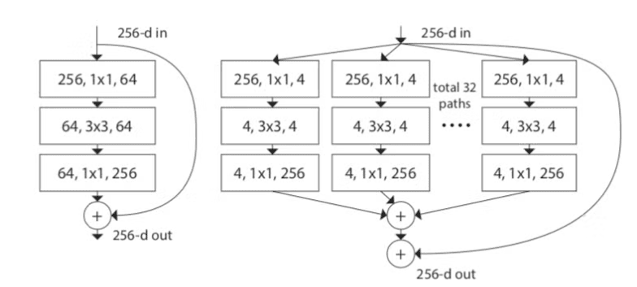
Слева блок ResNet: одна ветвь $1\times1 \to 3\times3 \to 1\times1$ шириной 64 канала в узком месте. Справа ResNeXt: 32 ветви той же структуры, но шириной 4 канала каждая, их выходы суммируются и складываются со входом. Число параметров практически совпадает. До ResNeXt архитектуру наращивали двумя способами:
- Глубина — больше слоёв (VGG-19 $\to$ ResNet-152).
- Ширина — больше каналов в слое (Wide ResNet).
ResNeXt добавила третью ось — кардинальность, число параллельных ветвей. И показала: при фиксированном бюджете вычислений увеличение кардинальности даёт больший прирост точности, чем увеличение глубины или ширины.
Обозначение вида ResNeXt-50 ($32 \times 4d$) читается так: 50 слоёв, 32 ветви, ширина каждой ветви в узком месте — 4 канала.
Общая схема блока:
- Split. Вход (скажем, 256 каналов) подаётся в $C$ ветвей; каждая свёрткой $1\times1$ сжимает его до узкой ширины $d$.
- Transform. Каждая ветвь независимо применяет свёртку $3\times3$ в своих $d$ каналах.
- Merge. Выходы ветвей суммируются (после разворачивания обратно в 256 каналов), и результат складывается со входом по residual-схеме.
Это та же логика, что в Inception-модуле, но с принципиальным отличием: все ветви устроены одинаково. В Inception каждая ветвь имеет свою конфигурацию, подобранную вручную; в ResNeXt ветви — копии друг друга, различающиеся только выученными весами.
Сравним блок ResNet-50 и блок ResNeXt-50 ($32\times4d$) при входе и выходе в 256 каналов.
ResNet, bottleneck 64: $256\cdot64 + 3^2\cdot64\cdot64 + 64\cdot256 \approx 70$ тыс. параметров.
ResNeXt, 32 ветви по 4 канала: $32 \cdot (256\cdot4 + 3^2\cdot4\cdot4 + 4\cdot256) \approx 70$ тыс. параметров.
Числа практически совпадают — и в этом весь смысл эксперимента: сравнение честное, бюджет одинаков. Тем не менее ResNeXt-50 даёт top-1 ошибку примерно на 1 п.п. ниже, чем ResNet-50, а ResNeXt-101 обходит ResNet-101 и приближается к моделям вдвое большей стоимости.
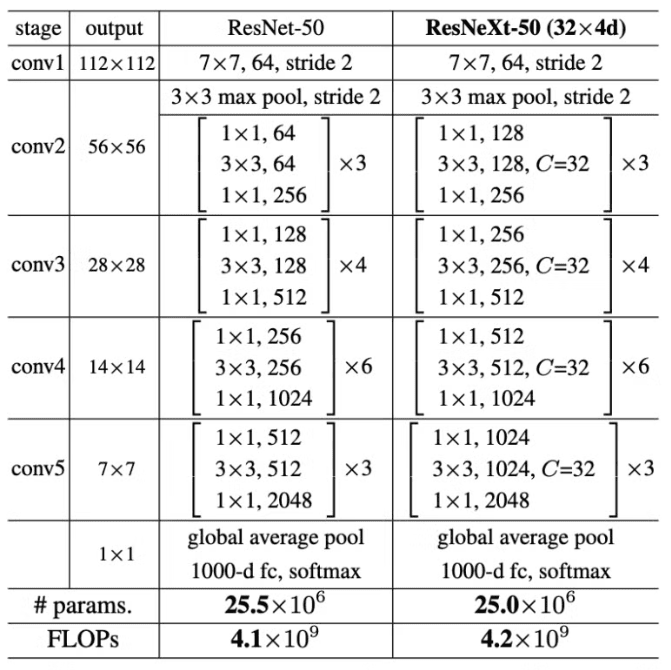
Одна и та же операция в трёх записях: (a) явные параллельные ветви с суммированием, (b) ветви с конкатенацией и общей свёрткой $1\times1$, (c) групповая свёртка. Третья форма — то, как это реально реализуют: одна свёртка с параметром groups=32. Практическая деталь, которая делает ResNeXt дешёвым в реализации: 32 параллельные ветви со свёртками $3\times3$ математически эквивалентны одной групповой свёртке (grouped convolution) с
groups=32.Групповая свёртка делит каналы на $g$ групп и применяет свёртку внутри каждой группы независимо, не смешивая группы между собой. В PyTorch это один аргумент:
nn.Conv2d(128, 128, 3, groups=32).Так что никаких 32 отдельных веток в коде нет — есть один слой. Групповые свёртки, кстати, появились ещё в AlexNet, но там это был вынужденный трюк для распределения модели по двум GPU, а не архитектурное решение.
Строгого доказательства нет, но есть работающая интуиция.
Одна широкая свёртка $3\times3$ на 64 канала имеет полную свободу: любой выходной канал может смешивать все 64 входных. Это очень большой класс функций, и большая его часть в оптимуме не используется — веса оказываются близки к нулю, то есть параметры расходуются впустую.
32 ветви по 4 канала ограничивают смешивание: каналы внутри группы взаимодействуют, между группами — нет. Это структурная регуляризация: мы заранее запрещаем ту часть связей, которая всё равно оказалась бы бесполезной, и высвобожденную ёмкость модель тратит на полезное.
Ту же логику потом довели до предела в MobileNet: там $g$ равно числу каналов (depthwise-свёртка), и каждый канал обрабатывается совершенно независимо.
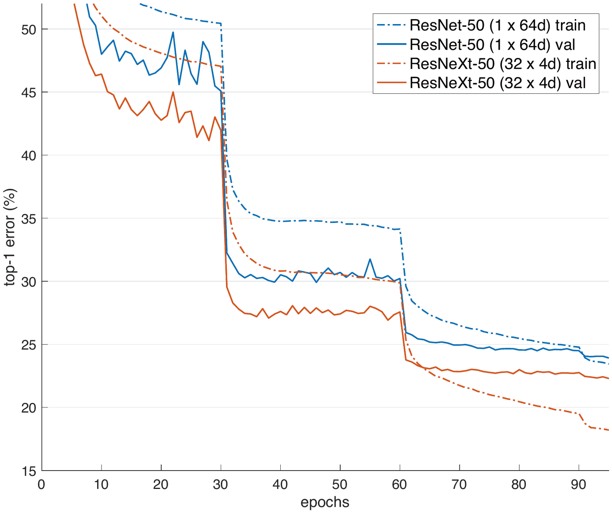
Обучение на ImageNet при одинаковом бюджете (~4.1 млрд FLOPs, ~25 млн параметров): синий — ResNet-50 ($1\times64$d), оранжевый — ResNeXt-50 ($32\times4$d). Сплошные линии — ошибка на валидации, штрих-пунктирные — на обучении; три ступеньки на 30-й, 60-й и 90-й эпохах это плановые понижения learning rate. К концу ResNeXt даёт около 22.2% top-1 ошибки против 23.9% у ResNet, причём оранжевая штрих-пунктирная линия уходит заметно ниже синей — при том же числе весов модель из 32 ветвей просто лучше подгоняется под данные. - Backbone для детекции и сегментации. ResNeXt-101 — популярная замена ResNet-101 в Mask R-CNN и подобных: заметно точнее при той же стоимости.
- Слабо-контролируемое предобучение. Модели ResNeXt-101 32$\times$8d, предобученные Facebook на миллиарде фотографий с хештегами Instagram, долго были одним из лучших готовых backbone для transfer learning.
- Идея кардинальности вошла в последующие архитектуры: групповые свёртки применяются в RegNet, ConvNeXt (там в предельной, depthwise-форме) и почти во всех мобильных сетях.
- Путать ResNeXt с Inception. У Inception ветви разные (фильтры разных размеров, подобранные вручную), у ResNeXt — одинаковые, различающиеся только весами. Второе гораздо проще масштабировать: чтобы увеличить сеть, достаточно поменять одно число.
- Считать, что 32 ветви означают 32-кратную стоимость. Ветви узкие: суммарная стоимость блока подобрана равной ResNet. Кардинальность обменивается на ширину, а не добавляется к ней.
- Ожидать ускорения от групповых свёрток. По FLOPs они дешевле, но на GPU часто работают медленнее плотных свёрток из-за плохой утилизации памяти и вычислительных блоков. Меньше FLOPs ≠ меньше времени.
- Наращивать кардинальность бесконечно. При очень большом $C$ ширина ветви падает до 1–2 каналов, и качество начинает деградировать: смешивать становится нечего. Оптимум в статье — 32 ветви.
Что такое кардинальность в ResNeXt?
Число одинаковых параллельных ветвей внутри блока. Это третья ось проектирования сети наряду с глубиной и шириной; в обозначении ResNeXt-50 ($32\times4d$) кардинальность равна 32, а ширина каждой ветви — 4 канала.
Почему увеличение кардинальности эффективнее увеличения глубины или ширины?
При фиксированном бюджете параметров разбиение на много узких ветвей работает как структурная регуляризация: запрещается смешивание между группами каналов, которое всё равно оказывалось бы малополезным, и ёмкость модели тратится продуктивнее. Эмпирически это даёт больший прирост точности, чем те же ресурсы, вложенные в глубину или ширину.
Что такое схема split–transform–merge?
Вход разделяется на несколько путей, каждый путь независимо преобразуется одинаковым по структуре набором слоёв, а результаты агрегируются суммированием. В ResNeXt поверх этого действует обычная residual-связь.
Чем ResNeXt отличается от Inception?
В Inception параллельные ветви разные — с фильтрами разных размеров, подобранными вручную для каждого модуля. В ResNeXt все ветви идентичны по структуре, поэтому архитектура задаётся одним числом и легко масштабируется.
Как ResNeXt реализуется на практике?
Через групповую свёртку: 32 параллельные ветви со свёртками $3\times3$ эквивалентны одной свёртке с параметром
groups=32. Отдельных веток в коде нет.Что делает групповая свёртка?
Делит входные каналы на $g$ групп и применяет свёртку внутри каждой группы независимо, не смешивая каналы между группами. Это сокращает число параметров и FLOPs в $g$ раз по сравнению с обычной свёрткой.
Почему меньшее число FLOPs у групповых свёрток не всегда означает более быстрый инференс?
Потому что групповые свёртки хуже утилизируют вычислительные блоки и память GPU: много мелких независимых операций вместо одной крупной плотной. Реальная скорость может оказаться ниже, чем у обычной свёртки с большим числом FLOPs.
-
DenseNet (2016)
DenseNet (Densely Connected Convolutional Network, Гао Хуан и соавторы, 2016) — архитектура, в которой каждый слой получает на вход выходы всех предыдущих слоёв блока, а свой выход передаёт всем последующим. Формально:
$$x_i = H_i([x_0, x_1, \ldots, x_{i-1}])$$
где квадратные скобки означают конкатенацию по каналам, а $H_i$ — операция слоя (BatchNorm $\to$ ReLU $\to$ свёртка $3\times3$).
Если совсем простыми словами: в ResNet слой видит только то, что ему передал предыдущий; в DenseNet — всё, что было выучено до него. Признаки не переписываются на каждом шаге, а накапливаются в общем «пуле», из которого каждый следующий слой берёт что нужно и докладывает своё.
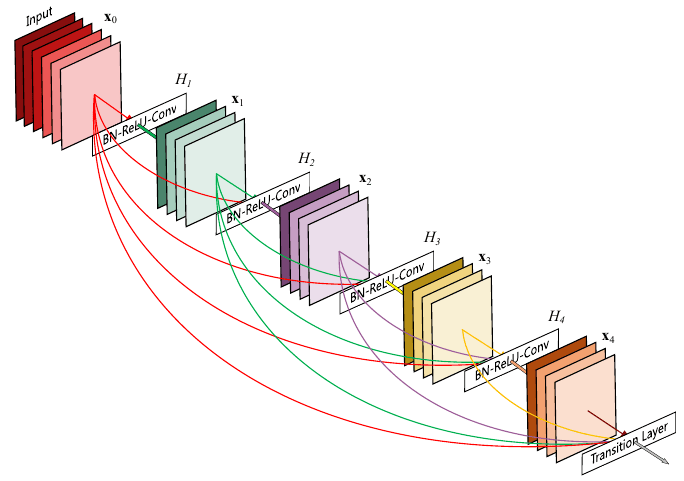
Внутри dense-блока каждый слой соединён со всеми последующими. При $L$ слоях получается $L(L+1)/2$ связей вместо $L$ — отсюда «плотная» связность. Это главное, что путают. ResNet складывает: $x_{i} = x_{i-1} + F(x_{i-1})$ — число каналов не меняется, а информация о том, что было раньше, смешивается с новой.
DenseNet конкатенирует: $x_i = H_i([x_0, \ldots, x_{i-1}])$ — число каналов растёт, а каждый выученный признак остаётся доступен в исходном виде до конца блока.
Последствия принципиальны: у ResNet потребление памяти постоянно, у DenseNet растёт линейно с глубиной блока. Зато DenseNet не тратит параметры на повторное извлечение того, что уже было выучено раньше.
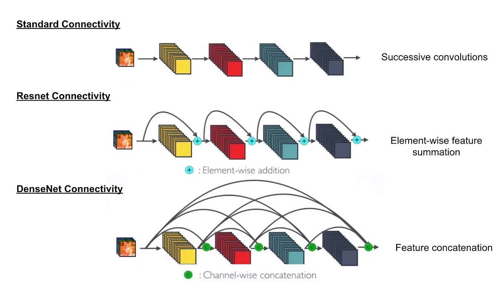
Слева обычная CNN — цепочка; в центре ResNet — обходные дуги со сложением; справа DenseNet — конкатенация всех предыдущих выходов. Источник сравнения. Раз каналы накапливаются, каждый слой должен добавлять их немного. Число новых каналов, которые производит один слой, называют коэффициентом прироста (growth rate) $k$; типичное значение $k = 32$.
Если на входе блока $k_0$ каналов, то на вход $i$-го слоя приходит $k_0 + k(i-1)$ каналов, а выдаёт он ровно $k$. То есть слой «читает» всё накопленное знание, но дописывает в общий пул лишь небольшую порцию нового.
Отсюда важная интуиция: $k$ — это не ширина слоя, а скорость прироста коллективного состояния сети.
Пусть на вход блока пришло 64 канала, $k = 32$, слоёв в блоке 6.
Слой Каналов на входе Добавляет 1 64 32 2 96 32 3 128 32 4 160 32 5 192 32 6 224 32 На выходе блока: $64 + 6\cdot32 = 256$ каналов. Видно, откуда берётся и сила, и слабость архитектуры: шестой слой имеет доступ ко всему, что выучили предыдущие пять, но обязан прочитать 224 канала — и чем длиннее блок, тем дороже вход каждого следующего слоя.
Чтобы вход не разрастался неконтролируемо, каждый слой на самом деле состоит из двух свёрток:
$$\text{BN} \to \text{ReLU} \to 1\times1 \;(\text{до } 4k \text{ каналов}) \to \text{BN} \to \text{ReLU} \to 3\times3 \;(\text{до } k)$$
Свёртка $1\times1$ сжимает, скажем, 224 входных канала до $4k = 128$, и только потом работает дорогая $3\times3$. Такую версию обозначают DenseNet-B — и именно она используется на практике.
Внутри dense-блока пространственный размер постоянен — иначе конкатенация была бы невозможна. Понижение разрешения вынесено в transition layer между блоками:
$$\text{BN} \to 1\times1 \;\text{свёртка} \to \text{average pooling } 2\times2$$
Свёртка $1\times1$ дополнительно сокращает число каналов в $\theta$ раз (обычно $\theta = 0.5$, версия DenseNet-C), average pooling уменьшает сторону вдвое. Так накопленные каналы периодически «подрезаются», и рост не выходит из-под контроля.
Конфигурация: 4 dense-блока с 6, 12, 24 и 16 слоями, $k = 32$.
- Свёрточных слоёв в блоках: $(6 + 12 + 24 + 16) \cdot 2 = 116$ (каждый слой из двух свёрток — bottleneck $1\times1$ и $3\times3$).
- Переходных слоёв: 3 (по одной свёртке $1\times1$).
- Начальная свёртка $7\times7$: 1.
- Финальный полносвязный слой: 1.
Итого $116 + 3 + 1 + 1 = 121$. Модель даёт $\sim 76.5\%$ top-1 на ImageNet при $\sim 8$ млн параметров — против $\sim 25$ млн у ResNet-50 при сопоставимой точности.
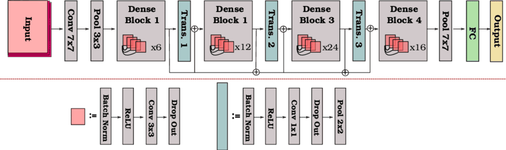
Четыре dense-блока, разделённые переходными слоями. Внутри блока разрешение постоянно (конкатенация требует одинакового пространственного размера), понижение происходит только в переходах. Обычная сеть на каждом слое должна заново вычислить всё, что нужно дальше: если слой 10 хочет использовать признак, найденный слоем 3, этот признак должен быть пронесён через слои 4–9, а каждый из них тратит на это свои веса.
В DenseNet слой 3 просто остаётся доступным слою 10 напрямую. Поэтому каждому слою достаточно добавить $k = 32$ действительно новых канала, а не воспроизводить старые. Отсюда и малое $k$, и общая экономия параметров.
Авторы назвали это feature reuse — переиспользование признаков — и подтвердили анализом: веса, соединяющие слой с далёкими предшественниками, действительно ненулевые, то есть связи реально используются, а не декоративны.
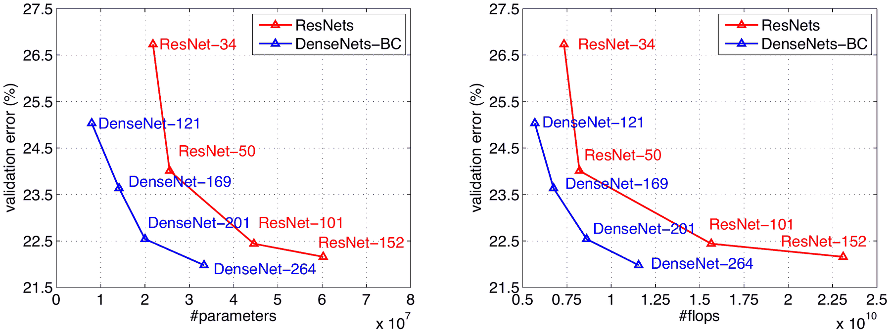
Ошибка на валидации ImageNet (single-crop) как функция числа параметров (слева) и числа операций на инференсе (справа); все шкалы линейные, по горизонтали множители $10^7$ и $10^{10}$. Синяя кривая DenseNet-BC на всём диапазоне лежит левее и ниже красной кривой ResNet. Показательная пара: DenseNet-201 при ~20 млн параметров даёт примерно ту же ошибку ~22.6%, что ResNet-101 при ~44 млн. Это и есть количественное выражение feature reuse. Второй эффект — тот же, что у ResNet, но выраженный сильнее. Каждый слой имеет прямое соединение и с функцией потерь (через все последующие слои), и с входом.
Из-за этого градиент доходит до ранних слоёв по коротким путям, минуя длинные цепочки умножений. Авторы называют это неявным глубоким надзором (implicit deep supervision): эффект похож на вспомогательные классификаторы GoogLeNet, но достигается самой структурой связей.
Побочный бонус: плотная связность работает как регуляризация, поэтому DenseNet заметно устойчивее к переобучению на малых датасетах (CIFAR, медицинские выборки).
Главное практическое ограничение DenseNet — потребление памяти при обучении.
FLOPs у DenseNet умеренные, но при наивной реализации каждая конкатенация создаёт новый тензор, и все промежуточные активации приходится хранить для обратного прохода. Расход растёт квадратично с длиной блока и на глубоких моделях становится неподъёмным.
Решения: memory-efficient реализация с пересчётом конкатенаций на обратном проходе (gradient checkpointing) — экономит память в разы ценой ~15–20% времени. Это надо учитывать: DenseNet-201 может не поместиться в память там, где спокойно обучается ResNet-101 с большим числом параметров.
- Задачи с ограниченным числом параметров — DenseNet даёт высокую точность при малом весе модели.
- Медицинская сегментация — плотные связи хорошо сохраняют мелкие детали, необходимые для точных масок; отсюда популярность в U-Net-подобных архитектурах для КТ и МРТ.
- Малые датасеты — встроенный регуляризирующий эффект помогает там, где данных мало.
- Идейное влияние — плотные связи встречаются в детекторах (feature pyramid), в HRNet и в блоках современных сегментационных моделей.
- «DenseNet — это ResNet с бо́льшим числом skip-связей». Механизм другой: сложение против конкатенации. Из этого следуют разные свойства по памяти, по числу каналов и по тому, сохраняются ли признаки в исходном виде.
- Считать, что мало параметров = быстрый инференс. У DenseNet-121 втрое меньше параметров, чем у ResNet-50, но по времени работы он часто медленнее из-за многочисленных конкатенаций и плохой утилизации памяти.
- Ставить большой growth rate. $k$ — не «ширина сети», а прирост на слой; при $k = 128$ каналы разрастаются взрывообразно, и модель становится неподъёмной без всякой пользы.
- Забывать про transition layer. Без сжатия каналов между блоками ($\theta = 0.5$) архитектура теряет главное преимущество — компактность.
Как устроена связность в DenseNet?
Внутри dense-блока каждый слой получает на вход конкатенацию выходов всех предыдущих слоёв блока и передаёт свой выход всем последующим: $x_i = H_i([x_0, \ldots, x_{i-1}])$. При $L$ слоях это даёт $L(L+1)/2$ связей.
Чем плотные связи принципиально отличаются от residual-связей?
ResNet складывает выход блока со входом поэлементно, сохраняя число каналов и смешивая старую информацию с новой. DenseNet конкатенирует, поэтому число каналов растёт, а каждый ранее выученный признак остаётся доступным в неизменённом виде до конца блока.
Что такое growth rate?
Число новых каналов $k$, которые добавляет каждый слой в общий пул признаков (типично 32). Это не ширина слоя, а скорость прироста коллективного представления: слой читает все накопленные каналы, но дописывает лишь $k$ новых.
Зачем нужен transition layer?
Внутри dense-блока пространственный размер обязан быть постоянным, иначе конкатенация невозможна. Переходный слой между блоками (BN $\to$ свёртка $1\times1$ $\to$ average pooling $2\times2$) понижает разрешение вдвое и сокращает число накопленных каналов, обычно вдвое.
Почему DenseNet требует меньше параметров при той же точности?
Из-за переиспользования признаков: слою не нужно заново вычислять то, что уже выучено ранее, — старые признаки доступны напрямую. Поэтому каждый слой добавляет лишь небольшое число действительно новых каналов, а не воспроизводит существующие.
Как плотные связи влияют на распространение градиента?
Каждый слой напрямую соединён и со входом, и (через последующие слои) с функцией потерь, поэтому градиент доходит до ранних слоёв по коротким путям. Авторы называют это неявным глубоким надзором; побочный эффект — регуляризация и устойчивость к переобучению.
В чём главный практический недостаток DenseNet?
Высокое потребление памяти при обучении: конкатенации порождают множество промежуточных тензоров, которые нужно хранить для обратного прохода, и расход растёт квадратично с длиной блока. Лечится memory-efficient реализацией с пересчётом (gradient checkpointing).
Почему меньшее число параметров у DenseNet не означает более быстрый инференс?
Потому что скорость определяется не только числом весов: многочисленные конкатенации плохо ложатся на архитектуру GPU, порождают лишние копирования памяти и низкую утилизацию. На практике DenseNet-121 нередко медленнее ResNet-50, имея втрое меньше параметров.
-
SENet (2017)
SENet (Squeeze-and-Excitation Network, 2017) — не самостоятельная архитектура, а вставной блок, который добавляется в любую свёрточную сеть и адаптивно перевзвешивает её каналы. SE-ResNet-152 выиграла ILSVRC-2017 с рекордной top-5 ошибкой 2.25%.
Если совсем простыми словами: сеть учится решать, какие каналы важны именно для этой картинки. Обычная свёртка обрабатывает все каналы одинаково, независимо от содержимого. SE-блок сначала смотрит на изображение целиком, потом присваивает каждому каналу коэффициент от 0 до 1 и умножает канал на него — важные усиливаются, ненужные приглушаются.
Возьмём канал, детектирующий вертикальные полосы.
- На фотографии зебры этот канал критически важен: полосы — главный отличительный признак.
- На фотографии озера тот же канал ловит рябь на воде и скорее мешает — он даёт ложные срабатывания.
Обычная свёртка не может это учесть: её веса фиксированы после обучения и одинаковы для всех входов. Она обрабатывает канал «полосы» с одинаковым весом и для зебры, и для озера.
SE-блок делает вес зависящим от входа. Это и есть механизм внимания: не «какой канал важен вообще», а «какой канал важен для того, что я вижу сейчас».
Как устроен SE-блок
Сначала карта признаков сжимается в вектор. Для каждого канала берётся среднее по всем пространственным позициям (global average pooling):
$$z_c = \frac{1}{HW}\sum_{i,j} x_{c}(i,j)$$
где $x_c$ — карта $c$-го канала, $H$ и $W$ — её высота и ширина.
Тензор $C \times H \times W$ превращается в вектор длины $C$: по одному числу на канал. Смысл числа — «насколько сильно этот признак присутствует на изображении в целом».
Зачем усреднять? Чтобы получить глобальный контекст. Свёртка $3\times3$ видит только окрестность пикселя; чтобы понять, что на картинке зебра, а не озеро, нужен обзор всего изображения. Усреднение даёт его одной операцией.
Полученный вектор проходит через маленькую двухслойную сеть:
$$s = \sigma\big(W_2 \,\delta(W_1 z)\big)$$
где $\delta$ — ReLU, $\sigma$ — сигмоида, $W_1$ сжимает вектор с $C$ до $C/r$ элементов, $W_2$ разворачивает обратно до $C$. Коэффициент $r$ (обычно 16) называют reduction ratio.
На выходе — $C$ чисел из диапазона $[0, 1]$, по одному на канал. Это и есть веса внимания.
Зачем bottleneck из двух слоёв, а не один? Во-первых, экономия: два слоя с сжатием требуют $2C^2/r$ параметров вместо $C^2$. Во-вторых, нелинейность посередине позволяет моделировать сложные зависимости между каналами — например, «если активен канал полос, то канал травы, скорее всего, тоже релевантен».
Каждый канал умножается на свой коэффициент:
$$\tilde{x}_c = s_c \cdot x_c$$
Канал с $s_c = 0.9$ проходит почти без изменений, канал с $s_c = 0.05$ практически гасится.
Обратите внимание на важное свойство: пространственная структура не меняется, меняются только относительные амплитуды каналов. Отсюда название — recalibration, перекалибровка признаков.
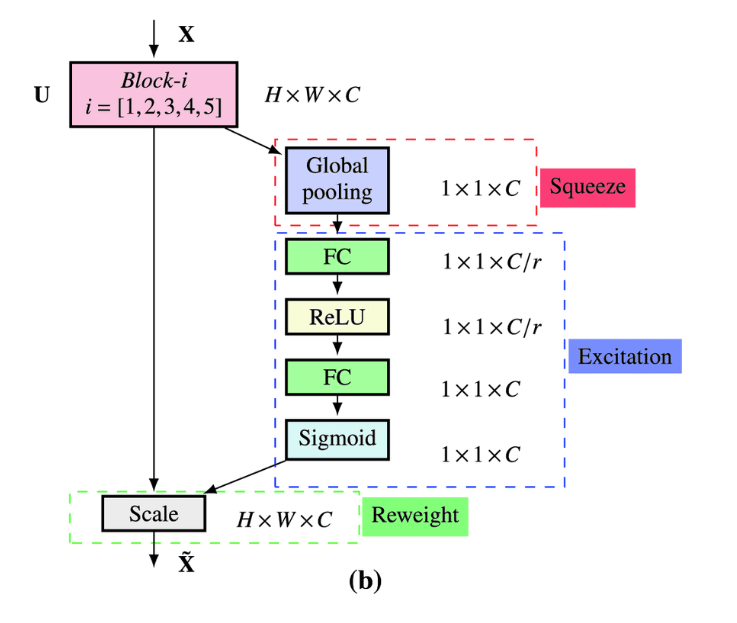
Три шага: global average pooling сжимает карту $C\times H \times W$ в вектор длины $C$; двухслойный MLP с сжатием в $r$ раз и сигмоидой выдаёт веса; веса поканально умножаются на исходный тензор. Форма тензора на выходе та же, что на входе, — поэтому блок вставляется куда угодно. Пусть после свёрток в блоке получилось 256 каналов размера $14 \times 14$, $r = 16$.
- Squeeze: усредняем каждую карту $14\times14$ (196 чисел) в одно число $\to$ вектор из 256 чисел.
- Excitation: $256 \to 16$ (ReLU) $\to 256$ (сигмоида) $\to$ 256 коэффициентов в $[0,1]$.
- Scale: канал 1 умножаем на $s_1$, канал 2 на $s_2$, и так далее.
Стоимость. Параметров: $2 \cdot 256 \cdot 16 = 8192$ на блок; по всей сети SE добавляет к ResNet-50 около 2.5 млн параметров (+10%). Вычислений: доли процента — все операции идут над векторами длины 256, а не над картами $14\times14\times256$.
Выигрыш. Top-1 ошибка ResNet-50 падает с 23.3% до 22.3%, то есть SE-ResNet-50 приближается к ResNet-101 при вдвое меньшей стоимости.
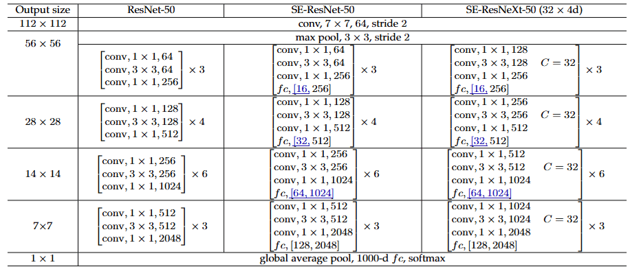
Слева обычный residual-блок, в центре SE-ResNet, справа SE-ResNeXt. SE вставляется в конце блока — после свёрток, но до сложения со skip-connection. Основная архитектура при этом не меняется вообще. Стандартное место — в конце residual-блока, перед сложением со skip-connection. Это важно: если перекалибровать уже сложенный результат, SE будет гасить и обходной путь, что мешает распространению градиента.
Авторы проверили и другие варианты: SE-PRE (перед свёртками блока), SE-Identity (на обходном пути) и SE-POST (после сложения). Первые два дают качество, близкое к стандартному размещению, а вот SE-POST заметно хуже — по названной причине: перекалибровка уже сложенного результата гасит и обходной путь.
Практически SE добавляли в ResNet, ResNeXt, Inception и DenseNet — везде стабильный прирост 1–2 п.п. без изменения остальной архитектуры.
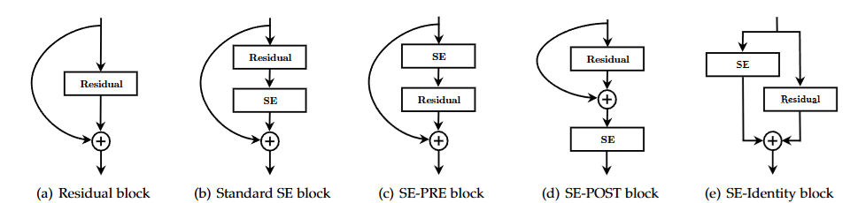
Разные схемы интеграции SE в блок: стандартная (в конце свёрточной ветви), SE-PRE, SE-Identity и SE-POST. Первые три работают сопоставимо, то есть архитектура нечувствительна к точному месту вставки; выпадает лишь SE-POST, где перекалибровка применяется уже после сложения со skip-connection. SE-блок можно описать как self-attention по каналам: сеть смотрит сама на себя и решает, чему уделить внимание.
Отличие от attention в трансформерах: там веса вычисляются для пар позиций (кто с кем связан), здесь — по одному весу на канал, без пространственной размерности. Это гораздо дешевле и потому применимо в свёрточных сетях без заметного роста стоимости.
Есть и другая полезная интерпретация: SE — способ добавить глобальный контекст в сеть, где каждый нейрон видит только локальную окрестность. Свёртка принципиально локальна, а global average pooling мгновенно даёт обзор всего изображения. Именно нехватку глобального контекста позже решали радикально — заменой свёрток на attention в ViT.
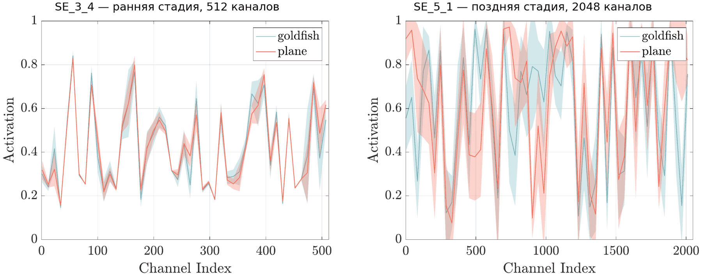
Что excitation выучивает на самом деле: веса SE-блоков обученной SE-ResNet-50 для двух классов ImageNet — goldfish (бирюзовый) и plane (красный). По горизонтали индекс канала, по вертикали вес из $[0,1]$, полупрозрачная лента — разброс по изображениям класса. На ранней стадии SE_3_4 кривые почти сливаются: там перекалибровка от класса практически не зависит. На поздней SE_5_1 они расходятся по всей шкале и ленты разброса широкие — сеть подбирает свой набор усиленных каналов под каждый класс. Чем ближе к выходу, тем более классово-специфичным становится внимание по каналам. - CBAM (2018) добавил к канальному вниманию пространственное: не только «какие каналы важны», но и «какие области важны».
- EfficientNet включает SE-блок в каждый MBConv-блок — это часть его базовой архитектуры, а не опция.
- MobileNetV3, RegNet, MnasNet — все используют SE или его облегчённые варианты.
- ECA-Net заменил MLP на одномерную свёртку, сократив параметры почти до нуля при том же качестве.
Сегодня канальное внимание — стандартный компонент, который добавляют по умолчанию.
- Считать SE отдельной архитектурой. SENet — это модуль. Правильно говорить «SE-ResNet-50», а не «SENet-50»: SE всегда встраивается во что-то.
- Ставить слишком маленький $r$. При $r = 2$ параметров становится много, а прироста качества нет; при $r = 32$ и выше bottleneck слишком узок для моделирования зависимостей. Стандарт $r = 16$ подтверждён экспериментами.
- Оценивать стоимость по числу параметров. SE добавляет ~10% параметров, но менее 1% вычислений: MLP работает над вектором длины $C$, а не над картой признаков. Это разные вещи, и для мобильных устройств важна именно вторая.
- Ждать заметного ускорения на GPU. Global average pooling — операция редукции с плохой параллелизуемостью; на практике SE может добавить к времени инференса больше, чем к FLOPs.
Что делает SE-блок?
Адаптивно перевзвешивает каналы карты признаков: вычисляет по одному коэффициенту из $[0,1]$ на канал в зависимости от входного изображения и поканально умножает на них исходный тензор. Важные для данного изображения каналы усиливаются, нерелевантные подавляются.
Из каких трёх шагов состоит SE-блок?
Squeeze — global average pooling, сжимающий каждую карту канала в одно число; excitation — двухслойный MLP со сжатием в $r$ раз, ReLU и сигмоидой, выдающий веса; scale — поканальное умножение исходного тензора на эти веса.
Зачем нужно глобальное усреднение на этапе squeeze?
Чтобы получить глобальный контекст: свёртка видит только локальную окрестность, а решение о важности канала зависит от содержимого всего изображения. Усреднение по пространству даёт этот обзор одной дешёвой операцией.
Зачем в excitation два слоя с сжатием, а не один?
Сжатие в $r$ раз сокращает число параметров с $C^2$ до $2C^2/r$, а нелинейность между слоями позволяет моделировать нетривиальные зависимости между каналами, а не только их независимое масштабирование.
Что такое reduction ratio и какое значение берут?
Коэффициент $r$, во сколько раз сжимается вектор каналов внутри excitation. Стандартное значение — 16: меньшие значения увеличивают число параметров без прироста качества, большие делают bottleneck слишком узким.
Куда SE-блок вставляется в residual-блоке и почему?
В конец свёрточной ветви, до сложения со skip-connection. Если применить перекалибровку после сложения, блок будет ослаблять и обходной путь, что ухудшает распространение градиента.
Какова стоимость SE-блока?
Около +10% параметров и менее 1% дополнительных вычислений (для ResNet-50 — примерно 2.5 млн параметров), поскольку MLP работает над вектором длины $C$, а не над полной картой признаков. Прирост точности — 1–2 п.п.
Как SE связан с механизмом внимания в трансформерах?
Это форма self-attention, но по каналам, а не по пространственным позициям: сеть на основе собственного глобального состояния решает, какие каналы усилить. Пространственных попарных взаимодействий, как в трансформерах, здесь нет — отсюда несопоставимо меньшая стоимость.
-
MobileNet (2017)
MobileNet v1 (2017, Google) — архитектура, спроектированная для телефонов и встраиваемых устройств. Главная идея — depthwise separable convolution: обычная свёртка разбивается на две дешёвые операции, что сокращает вычисления примерно в 9 раз при потере точности всего в 1 п.п.
Если совсем простыми словами: обычная свёртка делает два дела сразу — смотрит на соседние пиксели и смешивает каналы. MobileNet разделяет эти дела. Сначала отдельно обрабатывается пространство (в каждом канале независимо), потом отдельно смешиваются каналы. Два простых шага вместо одного сложного оказываются на порядок дешевле.
Разберём операцию по косточкам, потому что вся дальнейшая логика опирается на это.
Обычная свёртка $3\times3$ на входе с $M$ каналами, выдающая $N$ каналов, устроена так: каждый из $N$ фильтров имеет размер $3\times3\times M$ — то есть охватывает и окрестность пикселя, и все входные каналы сразу. На каждой позиции он перемножает $3\cdot3\cdot M$ чисел и складывает их в один выходной скаляр.
Итого свёртка одновременно решает две разные задачи:
- пространственную — как связаны соседние пиксели;
- межканальную — как связаны разные признаки в одной точке.
Вопрос MobileNet: а обязательно ли делать это одной операцией?
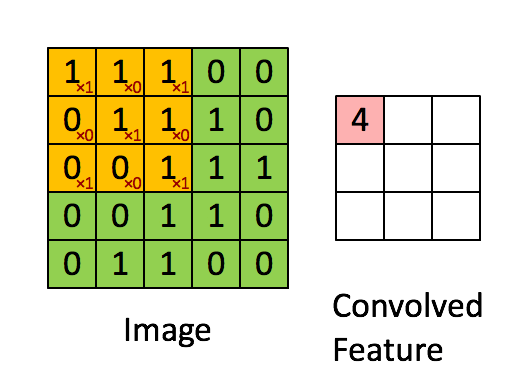
Фильтр размера $3\times3\times M$ проходит по всем позициям и на каждой сворачивается сразу и по пространству, и по всем каналам, давая один выходной канал. Чтобы получить $N$ выходных каналов, нужно $N$ таких фильтров. Разделяемая по глубине свёртка заменяет одну свёртку двумя последовательными:
- Depthwise-свёртка — своё ядро $3\times3$ для каждого входного канала, применяемое только внутри этого канала. Каналы не смешиваются: было $M$ каналов — осталось $M$. Отвечает только за пространство.
- Pointwise-свёртка $1\times1$ — обычная свёртка с ядром размера 1, то есть линейная комбинация всех $M$ каналов в каждой точке, дающая $N$ выходных каналов. Отвечает только за смешивание каналов.
Каждая операция делает ровно одну работу вместо двух сразу.
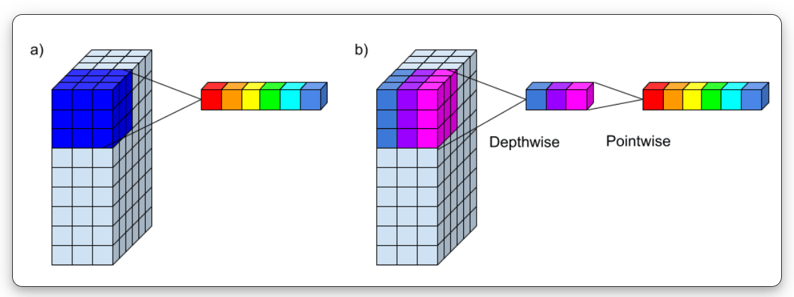
Первый этап — поканальная обработка пространства, второй — межканальное смешивание свёрткой $1\times1$. Пунктиром показано, что depthwise-этап не меняет число каналов, а pointwise-этап не смотрит на соседей. Посчитаем стоимость на одну выходную позицию для ядра $K\times K$, входа $M$ каналов, выхода $N$ каналов.
Обычная свёртка: $K^2 \cdot M \cdot N$ умножений.
Разделяемая:
- depthwise: $K^2 \cdot M$ (по одному ядру на канал);
- pointwise: $M \cdot N$;
- итого $K^2 M + MN$.
Отношение стоимостей:
$$\frac{K^2 M + MN}{K^2 M N} = \frac{1}{N} + \frac{1}{K^2}$$
При $K = 3$ и типичном $N \geqslant 64$ первое слагаемое пренебрежимо, и остаётся $\approx 1/9$. То есть экономия почти ровно в $K^2$ раз — в 9 раз для $3\times3$.
Вход $128\times128\times16$, хотим на выходе 32 канала, ядро $3\times3$.
- Обычная свёртка: 32 фильтра размера $3\times3\times16$ $\to$ $32 \cdot 144 = 4608$ параметров, а операций $128^2 \cdot 4608 \approx 75.5$ млн.
- Depthwise: 16 ядер $3\times3$ $\to$ 144 параметра, выход $128\times128\times16$.
- Pointwise: 32 фильтра $1\times1\times16$ $\to$ 512 параметров, выход $128\times128\times32$.
- Итого разделяемая: 656 параметров, $\approx 10.7$ млн операций.
Экономия в 7 раз по параметрам и по операциям — при том же размере выхода. На реальной сети MobileNet это превращается в 4.2 млн параметров и $\sim 70\%$ top-1 на ImageNet: сопоставимо с VGG-16 при $32\times$ меньшем весе.
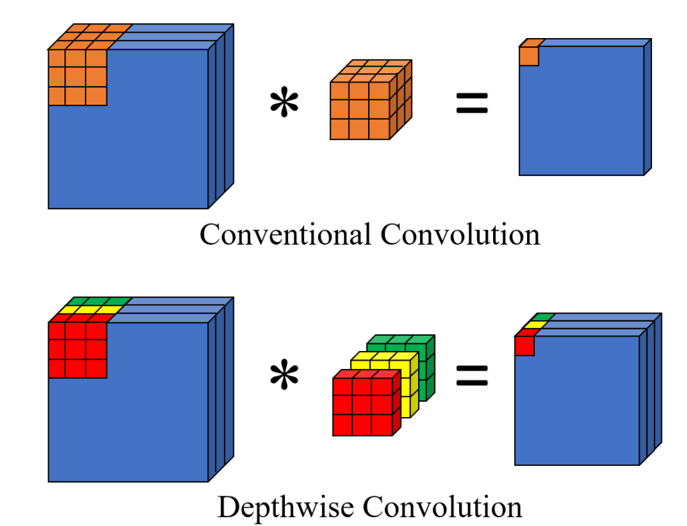
Сверху обычная свёртка: фильтр захватывает все каналы и выдаёт один канал. Снизу depthwise: каждый канал обрабатывается своим ядром и остаётся отдельным каналом — смешивания нет. 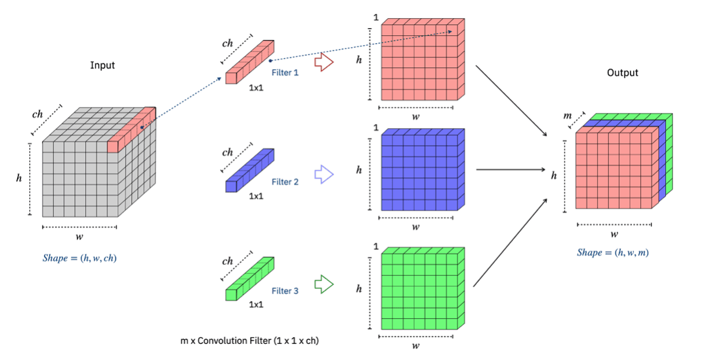
Свёртка $1\times1$ работает с одной пространственной позицией, но со всеми каналами: это обучаемая линейная комбинация признаков в точке. Именно она восстанавливает межканальное смешивание, которого не делает depthwise-этап. Для точности запишем все четыре операции. Пусть $y$ — вход, $W$ — веса, $(i,j)$ — пространственная позиция, $m$ — индекс канала.
$$\mathrm{C}(W,y)_{(i,j)} = \sum_{k,l,m} W_{(k,l,m)} \, y_{(i+k,\, j+l,\, m)} \quad \text{— обычная свёртка}$$ $$\mathrm{PC}(W,y)_{(i,j)} = \sum_{m} W_{m}\; y_{(i,\, j,\, m)} \quad \text{— pointwise}$$ $$\mathrm{DWC}(W,y)_{(i,j,m)} = \sum_{k,l} W_{(k,l,m)} \; y_{(i+k,\, j+l,\, m)} \quad \text{— depthwise}$$ $$\mathrm{SC}(W_p, W_d, y)_{(i,j)} = \mathrm{PC}\!\left(W_p,\; \mathrm{DWC}(W_d, y)\right)_{(i,j)} \quad \text{— разделяемая}$$
Обратите внимание на индексы суммирования: у обычной свёртки сумма идёт по $k, l, m$ (и пространство, и каналы), у pointwise — только по $m$, у depthwise — только по $k, l$, причём результат остаётся расписанным по каналам $m$.
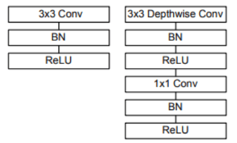
Слева обычный свёрточный блок, справа блок MobileNet: depthwise $3\times3$ и pointwise $1\times1$, каждая со своей BatchNorm и ReLU. Нелинейность ставится после обеих операций, а не только в конце. Помимо самой свёртки MobileNet ввела два множителя, позволяющих без переобучения архитектуры подобрать модель под конкретное железо:
- Width multiplier $\alpha$ — умножает число каналов во всех слоях. При $\alpha = 0.75$ каналов на четверть меньше; вычисления падают примерно как $\alpha^2$.
- Resolution multiplier $\rho$ — уменьшает разрешение входа (224 $\to$ 192 $\to$ 160 $\to$ 128). Вычисления падают тоже примерно как $\rho^2$.
Комбинация $\alpha$ и $\rho$ даёт целое семейство моделей: от 569 млн операций у полной MobileNet-224 (70.6% top-1) до 41 млн у 0.25 MobileNet-224 (50.6% top-1), а при одновременном понижении разрешения — и до ~21 млн у 0.25 MobileNet-128 (41.5% top-1). Инженер выбирает точку по бюджету устройства.
Эта идея «одна архитектура — семейство размеров» позже была доведена до ума в EfficientNet, где множители подбираются не вручную, а согласованно.
Интуиция: обычная свёртка допускает произвольное совместное преобразование «пространство $\times$ каналы», но в реальных данных эти два вида зависимостей почти независимы.
Край под углом 45° выглядит как край под 45° в любом канале; то, какие признаки полезно комбинировать, слабо зависит от того, где именно на картинке мы находимся. Поэтому полная свобода совместного преобразования избыточна: подавляющая часть её ёмкости не используется.
Разделяемая свёртка убирает именно избыточную часть — это структурная регуляризация того же типа, что групповые свёртки в ResNeXt, только доведённая до предела ($g$ равно числу каналов). Отсюда и малое падение точности при девятикратной экономии.
Важнейшая практическая оговорка. Depthwise-свёртка выполняет мало арифметики на каждый прочитанный байт памяти, то есть она memory-bound: время работы определяется не вычислениями, а чтением и записью тензоров.
Последствия:
- На GPU MobileNet может показывать скорость, далёкую от обещанной девятикратной: железо простаивает в ожидании памяти. Плотная свёртка с в 9 раз большим числом FLOPs иногда работает не медленнее.
- На мобильных CPU и специализированных ускорителях (NPU, DSP) выигрыш реален и близок к теоретическому — под них архитектура и создавалась.
Вывод: всегда меряйте время на целевом устройстве, а не число операций.
- На устройстве, в реальном времени: классификация с камеры телефона, дополненная реальность, робототехника, дроны — там, где нет связи с сервером или недопустима задержка.
- Лёгкий backbone для детекции: SSD-Lite (MobileNet + SSD) стала стандартным решением для детекции объектов на мобильных.
- Основа для дальнейшего развития: depthwise separable свёртка легла в основу MobileNetV2/V3, EfficientNet, Xception, а в 2022-м вернулась в ConvNeXt уже как элемент «большой» архитектуры.
- «Depthwise-свёртка — то же, что обычная, только дешевле». Нет: она вообще не смешивает каналы. Без следующей за ней pointwise-свёртки сеть не сможет комбинировать признаки, и качество рухнет. Эти две операции работают только в паре.
- Путать depthwise с групповой свёрткой. Depthwise — предельный случай групповой, где число групп равно числу каналов. Групповая с $g=32$ ещё смешивает каналы внутри группы, depthwise — не смешивает вообще.
- Оценивать скорость по FLOPs. См. предыдущий блок: depthwise ограничена пропускной способностью памяти, а не арифметикой.
- Уменьшать $\alpha$ слишком сильно. При $\alpha \leqslant 0.25$ каналов остаётся так мало, что точность падает обвально (41% top-1). Обычно разумный коридор — $\alpha \in [0.5, 1.0]$.
Что такое depthwise separable convolution?
Разложение обычной свёртки на две операции: depthwise-свёртку, применяющую отдельное ядро $K\times K$ к каждому каналу независимо (только пространственные зависимости), и pointwise-свёртку $1\times1$, смешивающую каналы в каждой позиции (только межканальные зависимости).
Во сколько раз она дешевле обычной свёртки и почему?
Отношение стоимостей равно $1/N + 1/K^2$, где $N$ — число выходных каналов, $K$ — размер ядра. При $K=3$ и достаточно большом $N$ это примерно $1/9$, то есть экономия близка к $K^2$ раз.
Что делает свёртка $1\times1$ и почему без неё нельзя обойтись?
Она выполняет обучаемую линейную комбинацию всех каналов в каждой пространственной позиции. Depthwise-этап каналы не смешивает вовсе, поэтому без pointwise-свёртки сеть не могла бы комбинировать признаки разных каналов.
Почему разделение почти не ухудшает качество?
Потому что пространственные и межканальные зависимости в реальных изображениях почти независимы, и полная свобода их совместного моделирования избыточна. Разделение убирает эту избыточность, работая как структурная регуляризация.
Что такое width multiplier и resolution multiplier?
Два гиперпараметра масштабирования: $\alpha$ пропорционально уменьшает число каналов во всех слоях, $\rho$ — разрешение входного изображения. Вычислительная стоимость падает примерно как $\alpha^2$ и $\rho^2$, что позволяет получить семейство моделей под разные бюджеты устройств.
Почему сокращение FLOPs в 9 раз не даёт девятикратного ускорения?
Depthwise-свёртка выполняет мало арифметики на единицу прочитанной памяти, то есть ограничена пропускной способностью памяти, а не вычислениями. На GPU это приводит к простою вычислительных блоков; реальный выигрыш заметен на мобильных CPU и специализированных ускорителях.
Как depthwise-свёртка связана с групповой свёрткой?
Она является предельным случаем групповой свёртки, где число групп равно числу каналов: каждая «группа» состоит из одного канала, и смешивания между каналами не происходит совсем.
-
ShuffleNet (2017)
ShuffleNet (2017, Megvii) — архитектура для мобильных и встраиваемых устройств, доводящая экономию вычислений до предела. Она заменяет дорогие свёртки $1\times1$ на групповые, а возникающую при этом изоляцию групп чинит новой операцией — channel shuffle (перемешиванием каналов).
Если совсем простыми словами: групповая свёртка делит каналы на несколько независимых «отсеков» и работает внутри каждого — это дёшево, но отсеки перестают общаться. ShuffleNet после каждой такой свёртки перетасовывает каналы, чтобы в следующий раз в каждом отсеке оказались представители всех предыдущих. Перетасовка ничего не стоит: это просто перестановка чисел, без единого умножения.
MobileNet удешевила пространственную часть свёртки (depthwise), но межканальную оставила плотной. И оказалось, что после этого основная стоимость сети переехала именно в свёртки $1\times1$.
Считаем для блока MobileNet с $M$ каналами на входе и выходе, ядром $3\times3$:
- depthwise: $9M$ операций;
- pointwise: $M^2$ операций.
При $M = 256$: $2304$ против $65536$ — свёртка $1\times1$ дороже в 28 раз и съедает ~95% вычислений блока. Значит, следующий шаг оптимизации должен быть направлен именно на неё.
Естественное решение — применить к свёртке $1\times1$ тот же приём группировки, что ResNeXt применил к $3\times3$.
Групповая свёртка делит $M$ входных каналов на $g$ групп по $M/g$ каналов и выполняет свёртку внутри каждой группы независимо. Стоимость падает ровно в $g$ раз: $M^2 \to M^2/g$.
При $g = 8$ свёртка $1\times1$ становится дешевле в 8 раз, и стоимость блока сокращается примерно во столько же.
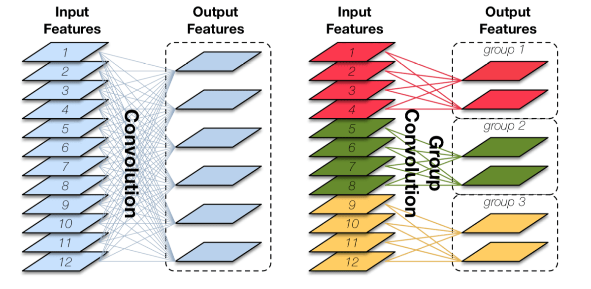
Слева обычная свёртка: каждый выходной канал зависит от всех входных. Справа групповая: каналы разбиты на группы, и связи существуют только внутри группы — отсюда экономия в $g$ раз и одновременно потеря межгрупповых связей. Если поставить две групповые свёртки подряд с одинаковым разбиением, получится неприятная вещь: выход группы 1 попадает только на вход группы 1, выход группы 2 — только группе 2, и так далее.
Сеть распадается на $g$ независимых узких сетей, которые никогда не обмениваются информацией. Признак, найденный в первой группе, никогда не встретится с признаком из третьей — и никакая глубина этого не исправит.
Это принципиальное ограничение: без обмена между группами качество быстро упирается в потолок.
Решение ShuffleNet предельно простое. После групповой свёртки каналы перетасовываются так, чтобы в каждую группу следующего слоя попали каналы из всех групп предыдущего.
Реализация: если каналов $g \cdot n$, представляем их как матрицу $g \times n$, транспонируем и снова разворачиваем в вектор. Всё — операция состоит из reshape, transpose, reshape.
Ключевые свойства:
- Нулевая вычислительная стоимость — ни одного умножения, только переупорядочивание.
- Дифференцируемость — это перестановка, градиент проходит через неё тривиально.
- Обучаемых параметров нет — порядок фиксирован, а не выучивается.
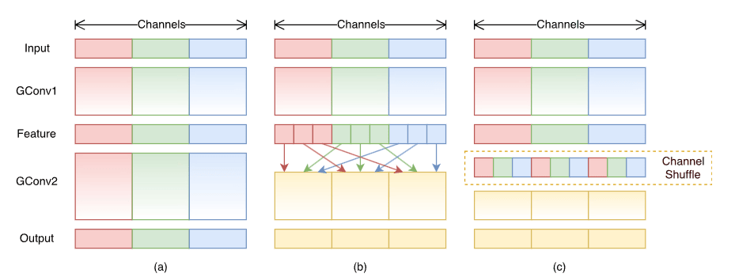
(a) Две групповые свёртки подряд без перемешивания: каждая группа изолирована, признаки не смешиваются между ветвями. (b) После перемешивания вход второй свёртки в каждой группе собран из всех групп первой — связи становятся полными. (c) Эквивалентная эффективная реализация через reshape–transpose–reshape. Пусть 12 каналов, $g = 3$ группы по 4.
После первой групповой свёртки каналы упорядочены так: группа A даёт каналы 1–4, группа B — 5–8, группа C — 9–12.
Выкладываем в матрицу $3 \times 4$:
$$\begin{pmatrix} 1 & 2 & 3 & 4 \\ 5 & 6 & 7 & 8 \\ 9 & 10 & 11 & 12 \end{pmatrix} \;\xrightarrow{\;\text{транспонирование}\;}\; \begin{pmatrix} 1 & 5 & 9 \\ 2 & 6 & 10 \\ 3 & 7 & 11 \\ 4 & 8 & 12 \end{pmatrix}$$
Разворачиваем обратно: $1, 5, 9, 2, 6, 10, 3, 7, 11, 4, 8, 12$. Теперь первая группа следующей свёртки получает каналы $1, 5, 9, 2$ — по представителю из каждой исходной группы. Информация начинает перетекать.
Итоговая единица архитектуры:
$$\text{GConv}(1\times1) \;\to\; \text{ChannelShuffle} \;\to\; \text{DWConv}(3\times3) \;\to\; \text{GConv}(1\times1)$$
плюс residual-связь, если размеры входа и выхода совпадают.
Читается как bottleneck-блок ResNet, у которого обе свёртки $1\times1$ сделаны групповыми, свёртка $3\times3$ — depthwise, а между ними вставлено перемешивание. Каждый элемент блока — самая дешёвая из доступных версий соответствующей операции.
При понижении разрешения вместо сложения используется конкатенация с параллельной ветвью average pooling — так число каналов удваивается без дополнительных вычислений.
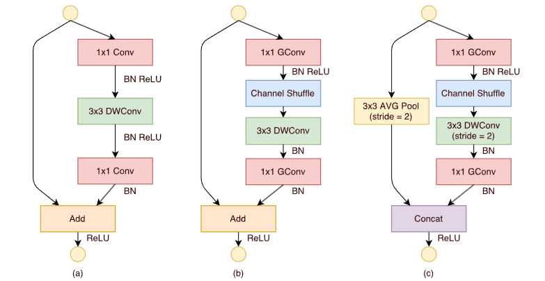
Слева базовый блок с residual-связью, справа — вариант со stride 2, где обходной путь идёт через average pooling, а результаты конкатенируются, а не складываются. Перемешивание стоит сразу после первой групповой свёртки. При бюджете $\sim 140$ млн FLOPs ShuffleNet даёт около 67% top-1 на ImageNet.
Для сравнения при том же бюджете: MobileNet v1 показывает примерно на 3–7 п.п. меньше в зависимости от конфигурации. То есть на сверхмалых бюджетах ($\leqslant 150$ MFLOPs) ShuffleNet заметно выигрывает — и именно этот режим был целевым.
Важная оговорка: с ростом бюджета преимущество сокращается. ShuffleNet оптимизирована под жёсткие ограничения, а не под универсальность.
Год спустя те же авторы выпустили ShuffleNetV2 (2018) — и её главный вклад скорее методологический.
Они измерили реальное время работы на устройствах и обнаружили, что оптимизация по FLOPs систематически вводит в заблуждение. Сформулировали четыре практических правила:
- Равное число входных и выходных каналов минимизирует обращения к памяти.
- Чрезмерная группировка увеличивает стоимость доступа к памяти (то есть $g$ нельзя наращивать бесконечно).
- Фрагментация сети на много мелких ветвей снижает степень параллелизма.
- Поэлементные операции (ReLU, сложение) не бесплатны — на лёгких сетях они занимают заметную долю времени.
ShuffleNetV2 построена по этим правилам и при тех же FLOPs работает быстрее V1. Отсюда общий урок: целевая метрика — время на конкретном устройстве, а не число операций.
- Мобильные и встраиваемые системы — классификация и детекция на телефонах, в дронах, в камерах видеонаблюдения.
- Робототехника и SLAM — там, где важны низкая задержка и энергопотребление.
- Идейное влияние — channel shuffle как приём применяется в других лёгких архитектурах; правила из ShuffleNetV2 повлияли на проектирование RegNet и мобильных версий современных сетей.
- Считать, что channel shuffle что-то выучивает. Это фиксированная перестановка без параметров. Её единственная задача — восстановить связность между группами, а не преобразовать признаки.
- Наращивать число групп бесконечно. При большом $g$ каналов в группе остаётся 1–2, качество падает, а обращения к памяти растут. В статье оптимум — $g = 3$ или $g = 8$ в зависимости от размера модели.
- Путать channel shuffle с random shuffle. Перестановка детерминированная и одинаковая на обучении и инференсе; случайное перемешивание сломало бы модель.
- Переносить выводы на большие бюджеты. ShuffleNet проектировалась под 40–300 MFLOPs. При бюджете уровня ResNet-50 её преимущество исчезает.
Какую проблему решает ShuffleNet?
Свёртки $1\times1$ после введения depthwise-свёрток стали доминирующей статьёй расходов лёгкой сети (до 95% вычислений блока). ShuffleNet делает их групповыми, сокращая стоимость в $g$ раз, и компенсирует возникающую изоляцию групп перемешиванием каналов.
Что такое групповая свёртка и в чём её недостаток?
Свёртка, где каналы разбиты на $g$ групп и операция выполняется внутри каждой группы независимо; стоимость падает в $g$ раз. Недостаток — при нескольких групповых свёртках подряд группы полностью изолированы, и сеть распадается на $g$ независимых подсетей.
Как работает channel shuffle?
Каналы, упорядоченные по группам, представляются матрицей $g \times n$, транспонируются и снова разворачиваются в вектор. В результате в каждую группу следующего слоя попадают каналы из всех групп предыдущего. Операция состоит только из reshape и transpose.
Сколько стоит операция channel shuffle?
Ничего в арифметике: умножений нет, обучаемых параметров нет, только переупорядочивание элементов. При этом она дифференцируема, поскольку является перестановкой.
Как устроен блок ShuffleNet?
Групповая свёртка $1\times1$ $\to$ channel shuffle $\to$ depthwise-свёртка $3\times3$ $\to$ групповая свёртка $1\times1$, плюс residual-связь при совпадении размеров. При понижении разрешения обходной путь идёт через average pooling, а выходы конкатенируются.
Какие результаты показывает ShuffleNet и в каком режиме?
Около 67% top-1 на ImageNet при ~140 MFLOPs — заметно выше MobileNet при том же бюджете. Преимущество выражено именно на сверхмалых бюджетах (до ~150 MFLOPs) и сокращается с ростом модели.
Какой главный урок принесла ShuffleNetV2?
Что оптимизация по FLOPs вводит в заблуждение и мерить надо реальное время на устройстве. Отсюда четыре правила: держать равным число входных и выходных каналов, не злоупотреблять группировкой, избегать фрагментации на мелкие ветви и учитывать стоимость поэлементных операций.
-
NASNet (2018)
NASNet (Neural Architecture Search Network, Google, 2018) — первая архитектура, спроектированная не человеком, а алгоритмом. Вместо того чтобы придумывать блок вручную, авторы обучили контроллер, который сам генерирует варианты архитектур, проверяет их и постепенно учится выдавать всё более удачные.
Если совсем простыми словами: вместо инженера, который перебирает идеи, поставили модель, которая перебирает идеи. Контроллер предлагает архитектуру, её обучают, замеряют точность, и эта точность становится сигналом обучения для самого контроллера. Через тысячи итераций он выдаёт блоки лучше тех, что придумали люди.
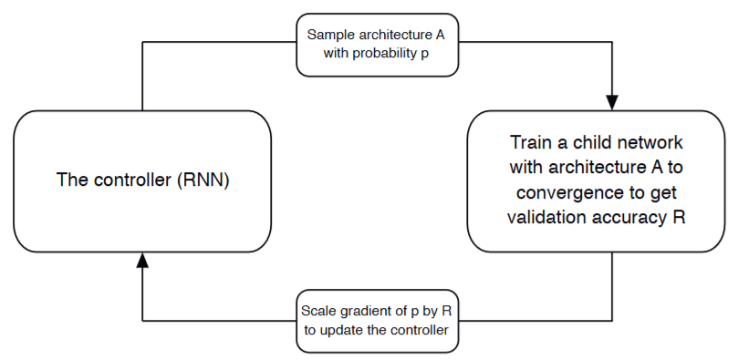
Цикл поиска: RNN-контроллер порождает описание архитектуры $A$ с вероятностью $p(A)$, дочерняя сеть с этой архитектурой обучается до сходимости и даёт точность $R$, после чего градиенты $\nabla \log p(A)$ масштабируются на $R$ и обновляют контроллер. Хорошие архитектуры становятся вероятнее, плохие — реже. Главная проблема: комбинаторный взрыв
Прямолинейный подход — искать всю архитектуру слой за слоем — не работает.
Пусть сеть из 20 слоёв, на каждом выбираем из 10 типов операций. Вариантов: $10^{20}$. Даже если бы каждая проверка занимала секунду, перебор занял бы больше времени, чем существует Вселенная. А реальная проверка — это обучение сети, то есть часы GPU.
Вторая проблема: архитектура, найденная для CIFAR-10 ($32\times32$, 10 классов), никак не переносится на ImageNet ($224\times224$, 1000 классов) — глубина и разрешение слишком разные.
Ключевая идея NASNet — заимствовать у ResNet и Inception принцип повторяющегося блока. Ищем не всю сеть, а маленький модуль, который потом повторяется нужное число раз.
Ищутся два типа ячеек:
- Normal cell — сохраняет размер карты признаков (аналог обычного residual-блока).
- Reduction cell — уменьшает пространственный размер вдвое и удваивает каналы (аналог блока со stride 2).
Это сокращает пространство поиска на много порядков и решает проблему переноса: найденную на CIFAR-10 ячейку масштабируют под ImageNet, просто повторяя её больше раз и увеличивая число фильтров.
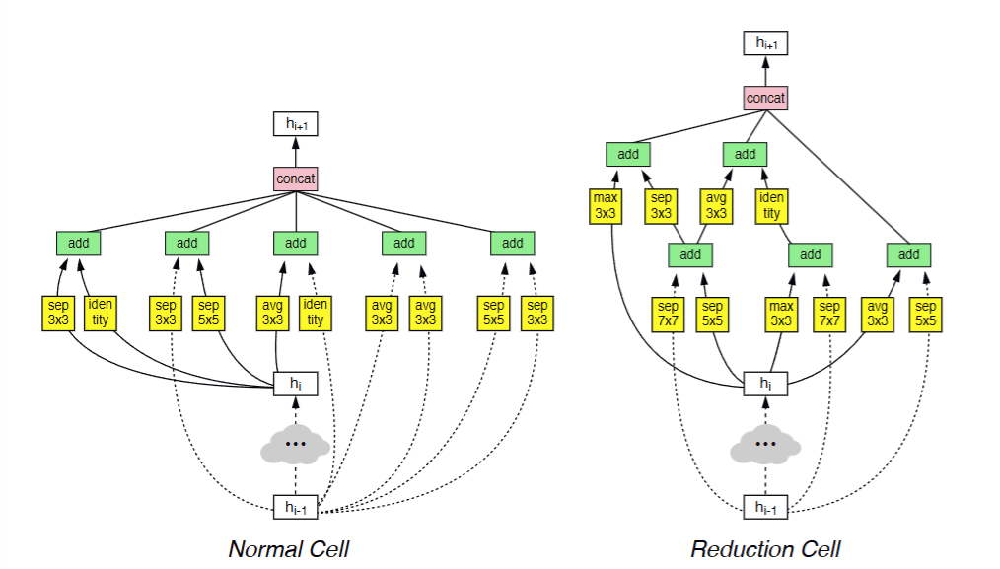
Найденные ячейки NASNet-A при $B = 5$ блоках. Белые узлы — входы (скрытые состояния из предыдущих ячеек), жёлтые — примитивные операции, зелёные — операции объединения, розовый — конкатенация всех незанятых выходов. Заметьте разнообразие: сепарабельные свёртки $3\times3$, $5\times5$, $7\times7$, пулинги и прямые связи — комбинация, которую человек вряд ли собрал бы вручную. Как работает поиск
Контроллер — рекуррентная сеть, генерирующая описание ячейки как последовательность дискретных решений. Каждая ячейка состоит из $B$ блоков (в статье $B = 5$), и на каждый блок контроллер делает 5 выборов:
- какое скрытое состояние взять первым входом;
- какое — вторым;
- какую операцию применить к первому;
- какую операцию применить ко второму;
- как объединить результаты (сложение или конкатенация).
Каждый выбор — отдельный softmax-слой, итого $5B = 25$ softmax на ячейку.
Обучение идёт методом REINFORCE (policy gradient): сгенерированная сеть обучается, её точность $R$ на валидации служит наградой, и градиент $R \cdot \nabla \log p(A)$ обновляет контроллер. Награда недифференцируема по архитектуре — отсюда и обучение с подкреплением, а не градиентный спуск.
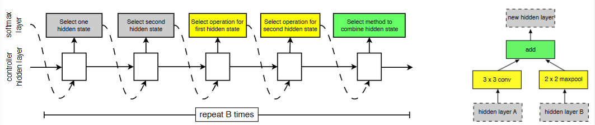
Контроллер рекуррентно строит один блок ячейки, предсказывая пять дискретных параметров через пять softmax-слоёв; для ячейки из $B$ блоков контроллер содержит $5B$ таких слоёв. В экспериментах $B = 5$. Контроллер выбирает из заранее заданного набора примитивов, среди которых:
- сепарабельные свёртки $3\times3$, $5\times5$, $7\times7$;
- обычные свёртки $1\times1$, $3\times3$;
- асимметричные $1\times7$ и $7\times1$;
- max pooling и average pooling $3\times3$;
- тождественная связь (identity);
- дилатированная свёртка $3\times3$.
Интересный результат: в найденной ячейке доминируют сепарабельные свёртки и skip-связи — то есть алгоритм независимо переоткрыл ключевые приёмы MobileNet и ResNet. Но собрал он их в конфигурацию нерегулярную и асимметричную, какую человек по эстетическим соображениям строить бы не стал.
NASNet-A (large) на ImageNet:
- top-1: 82.7%, top-5: 96.2%;
- параметров: ~88 млн.
На тот момент это был лучший результат на ImageNet, обошедший все архитектуры ручного дизайна.
NASNet-Mobile (та же ячейка, повторённая меньше раз, с меньшим числом фильтров): 74% top-1 при 5.3 млн параметров — точнее MobileNet v1 при сопоставимом размере. Это и есть подтверждение главного тезиса: найденная ячейка масштабируется в обе стороны.
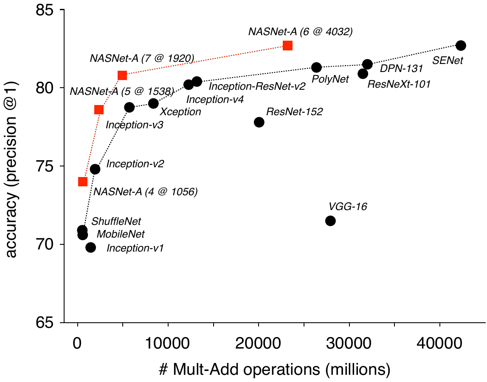
Точность на ImageNet против числа операций умножения-сложения на одно изображение; обе шкалы линейные. Чёрные кружки — опубликованные архитектуры ручного дизайна, красные квадраты — семейство NASNet-A разных размеров. Красная ломаная идёт выше и левее чёрной на всём диапазоне: в мобильном режиме (~600 млн операций) NASNet-A даёт около 74% против ~70–71% у MobileNet и ShuffleNet, а NASNet-A (6 @ 4032) достигает тех же 82.7%, что SENet, примерно в 1.8 раза дешевле по операциям (около 23 млрд против 42 млрд). Именно этот график и был главным аргументом за автоматический поиск. Главная проблема NASNet, о которой обычно умалчивают: поиск потребовал около 2000 GPU-дней — примерно 500 GPU, работавших четверо суток.
Такой эксперимент могут себе позволить единицы организаций. Поэтому основным направлением следующих лет стало не улучшение качества, а удешевление поиска:
- PNASNet (2018) — прогрессивный поиск от простых ячеек к сложным, в 5–8 раз дешевле.
- ENAS (2018) — переиспользование весов между кандидатами (weight sharing), сокращение до ~1 GPU-дня.
- DARTS (2019) — релаксация дискретного выбора в непрерывный, что позволяет искать градиентным спуском вместо RL; часы вместо дней.
- EfficientNet (2019) — поиск базовой сети плюс аналитическое правило масштабирования, что убирает необходимость искать заново для каждого размера.
Три вывода, вышедшие за пределы конкретной модели:
- Автоматический поиск может обойти человеческий дизайн. До 2018 года это было спорным утверждением; NASNet сделала его фактом.
- Прокси-задача работает. Искать на маленьком датасете (CIFAR-10) и переносить результат на большой (ImageNet) — рабочая стратегия, ставшая стандартом в NAS.
- Найденные архитектуры «некрасивы». Ячейка NASNet асимметрична и нерегулярна; человек такое не спроектировал бы. Это показало, что наши эстетические предпочтения в дизайне сетей — ограничение, а не преимущество.
Отсюда выросло целое направление AutoML, а сам NAS стал стандартным этапом при проектировании мобильных моделей (MnasNet, MobileNetV3, EfficientNet).
- Считать, что NAS «изобретает» операции. Нет: контроллер выбирает из заранее заданного человеком набора примитивов и правил соединения. Качество результата напрямую зависит от того, насколько удачно спроектировано пространство поиска — а это делает человек.
- Игнорировать стоимость поиска. Точность NASNet впечатляет, но 2000 GPU-дней — это часть результата, а не сноска. Сравнивать NAS-модели с ручными надо с учётом этой цены.
- Забывать, что NASNet медленнее, чем следует из FLOPs. Нерегулярная структура с множеством мелких параллельных ветвей плохо ложится на GPU: реальная скорость ниже, чем у более простых сетей с тем же числом операций.
- Путать NAS с гиперпараметрической оптимизацией. NAS ищет структуру сети (какие операции и как соединены), а не learning rate и размер батча — это разные задачи с разными методами.
Что такое Neural Architecture Search?
Автоматический поиск структуры нейросети алгоритмом вместо ручного проектирования. Контроллер порождает архитектуры-кандидаты, каждая обучается и оценивается, а полученная точность используется как сигнал для улучшения контроллера.
Почему NASNet ищет ячейку, а не всю сеть целиком?
Пространство всех архитектур комбинаторно необъятно (порядка $10^{20}$ вариантов для 20 слоёв), а результат не переносился бы между датасетами разного масштаба. Поиск маленькой повторяющейся ячейки сокращает пространство на порядки и позволяет масштабировать найденное решение, меняя число повторений и фильтров.
Какие два типа ячеек ищутся и чем они отличаются?
Normal cell сохраняет пространственный размер карты признаков, reduction cell уменьшает его вдвое, удваивая число каналов. Сеть строится их чередованием, как ResNet строится из обычных блоков и блоков со stride 2.
Как обучается контроллер?
Методом REINFORCE (policy gradient): контроллер порождает архитектуру $A$ с вероятностью $p(A)$, дочерняя сеть обучается и даёт точность $R$, после чего градиент $R\,\nabla\log p(A)$ обновляет параметры контроллера. Обучение с подкреплением применяется потому, что награда недифференцируема по дискретному выбору архитектуры.
Сколько решений принимает контроллер на один блок ячейки?
Пять: два входных скрытых состояния, две операции над ними и способ их объединения. Для ячейки из $B$ блоков контроллер содержит $5B$ softmax-слоёв; в статье $B = 5$.
Какие результаты показала NASNet?
NASNet-A large — 82.7% top-1 на ImageNet при ~88 млн параметров, лучший результат на тот момент. NASNet-Mobile — 74% top-1 при 5.3 млн параметров, точнее MobileNet при сопоставимом размере.
В чём главный недостаток исходного метода и как его преодолевали?
Стоимость поиска — около 2000 GPU-дней. Последующие методы её резко снизили: PNASNet (прогрессивный поиск), ENAS (разделение весов между кандидатами), DARTS (непрерывная релаксация и градиентный поиск), EfficientNet (поиск базовой модели плюс аналитическое масштабирование).
Что NASNet изменила в подходе к проектированию сетей?
Показала, что автоматический поиск способен превзойти ручной дизайн, что прокси-задача на малом датасете переносится на большой, и что оптимальные архитектуры бывают нерегулярными и «неэстетичными» — то есть человеческие представления о красивой структуре ограничивают качество.
-
MobileNetV2 (2019)
MobileNetV2 (2018, Google) — развитие MobileNetV1, поднимающее точность при сохранении вычислительной эффективности. Две ключевые идеи: инвертированный residual-блок (inverted residual) и линейное бутылочное горлышко (linear bottleneck).
Если совсем простыми словами: V2 обнаружила, что ReLU уничтожает информацию в узких слоях. Обычный residual-блок сжимает каналы внутри и держит широкими края; V2 переворачивает эту схему — узкие края, широкая середина — и убирает ReLU там, где представление узкое. Обе идеи вытекают из одного наблюдения о геометрии активаций.
Инвертированный residual-блок
Блок MobileNetV2 (его называют MBConv) состоит из трёх шагов:
- Expansion — свёртка $1\times1$, увеличивающая число каналов, обычно в 6 раз.
- Depthwise $3\times3$ — поканальная пространственная обработка уже в расширенном пространстве.
- Projection — свёртка $1\times1$, сжимающая каналы обратно, с линейной активацией (без ReLU).
Если размеры входа и выхода совпадают, добавляется skip-connection.
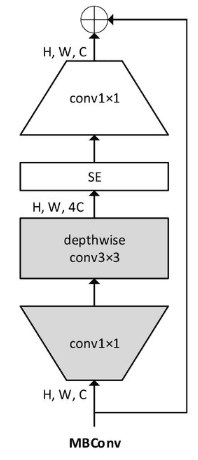
Расширение свёрткой $1\times1$, поканальная обработка $3\times3$ в широком пространстве, сжатие обратно свёрткой $1\times1$ без активации. Обходная связь идёт между узкими концами блока. Сравним с bottleneck-блоком ResNet:
- ResNet: широкий вход $\to$ сжатие $1\times1$ $\to$ обработка $3\times3$ в узком $\to$ расширение обратно. Skip-connection соединяет широкие слои, узко в середине.
- MobileNetV2: узкий вход $\to$ расширение $1\times1$ $\to$ depthwise $3\times3$ в широком $\to$ сжатие обратно. Skip-connection соединяет узкие слои, широко в середине.
Отсюда и название: схема перевёрнута. И это не эстетическое решение, а прямое следствие того, что depthwise-свёртка дёшева.
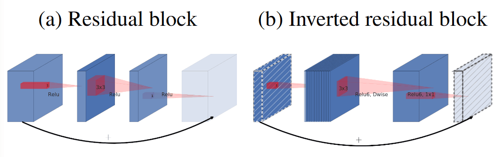
Сверху классический residual-блок: обходная связь соединяет широкие слои, внутри — узкое место. Снизу инвертированный: обходная связь между узкими слоями, внутри — расширение. Штриховкой отмечены слои без нелинейности. def residual_block(x, squeeze=16, expand=64): m = Conv2D(squeeze, (1,1), activation='relu')(x) m = Conv2D(squeeze, (3,3), activation='relu')(m) m = Conv2D(expand, (1,1), activation='relu')(m) return Add()([m, x])def inverted_residual_block(x, expand=64, squeeze=16): m = Conv2D(expand, (1,1), activation='relu')(x) m = DepthwiseConv2D((3,3), padding='same', activation='relu')(m) m = Conv2D(squeeze, (1,1))(m) # linear bottleneck: активации нет return Add()([m, x])Логика ResNet: свёртка $3\times3$ дорогая, её стоимость растёт как $M^2$ по числу каналов, поэтому перед ней каналы надо сжать.
Логика MobileNetV2: свёртка depthwise дешёвая, её стоимость растёт линейно по числу каналов ($9M$ вместо $9M^2$). Значит, работать в широком пространстве не страшно — можно себе позволить расширение в 6 раз.
А вот skip-connection выгоднее вести по узким тензорам: обходная связь требует хранить активации до конца блока, и хранить узкий тензор в 6 раз дешевле по памяти. Для мобильного устройства, где память — главное ограничение, это решающий аргумент.
Линейное бутылочное горлышко
ReLU обнуляет всё отрицательное. Если канал целиком ушёл в отрицательную область, он схлопывается в ноль — и восстановить его уже нечем.
В широком слое это терпимо: информация продублирована в других каналах, потеря одного не критична. В узком слое дублирования нет, и каждый обнулённый канал — безвозвратно потерянная часть представления.
Именно поэтому в MobileNetV2 после сжимающей свёртки $1\times1$ не ставится активация — этот слой линейный. Авторы измерили: добавление нелинейности в bottleneck ухудшает точность на несколько процентов.
Авторы формулируют это через многообразия. Полезная информация о признаках лежит на низкоразмерном многообразии, вложенном в пространство активаций.
Из этого следуют два утверждения:
- Если многообразие после ReLU сохраняет ненулевой объём, то на этой области ReLU действует как линейное преобразование — то есть нелинейности там фактически нет.
- ReLU сохраняет всю информацию о входном многообразии только если оно лежит в достаточно низкоразмерном подпространстве относительно размерности пространства активаций.
Практический вывод: нелинейность полезна, когда пространство широкое (есть запас размерности), и вредна, когда узкое (запаса нет). Отсюда рецепт — ReLU в расширенной части блока, линейность в сжатой.
Двумерная спираль вкладывается случайной матрицей $T$ в $n$-мерное пространство, к результату применяется ReLU, затем всё проецируется обратно через $T^{-1}$. При $n = 2, 3$ спираль рвётся и схлопывается — информация потеряна. При $n \in [15, 30]$ она сохраняется целиком, приобретая при этом сложную нелинейную форму. Это и есть иллюстрация тезиса: ReLU безопасна только при достаточном запасе размерности. Блок с 24 входными каналами и коэффициентом расширения 6:
- вход: 24 канала (узко) — активации нет;
- после expansion: 144 канала (широко) — ReLU6 есть;
- после depthwise: 144 канала (широко) — ReLU6 есть;
- после projection: 24 канала (узко) — активации нет.
Правило простое и легко запоминается: нелинейность живёт там, где широко. Узкие места блока — чисто линейные проекции, служащие только для передачи информации между блоками.
Вместо обычной ReLU в MobileNetV2 используется её ограниченная версия:
$$\text{ReLU6}(x) = \min(\max(0, x), 6)$$
то есть выход зажат в диапазоне $[0, 6]$.
Причина сугубо практическая — квантизация. На мобильных устройствах модель часто переводят в 8-битные целые числа для ускорения. Если активации не ограничены сверху, редкие большие выбросы растягивают диапазон квантования и убивают точность представления обычных значений. Жёсткий потолок 6 гарантирует известный заранее диапазон, и квантизация проходит почти без потерь.
ReLU растёт неограниченно, ReLU6 выходит на плато при $x = 6$. Ограничение сверху делает диапазон активаций предсказуемым, что критично для 8-битной квантизации на мобильных устройствах. def bottleneck_block(x, expand=64, squeeze=16): m = Conv2D(expand, (1,1))(x) m = BatchNormalization()(m) m = Activation('relu6')(m) m = DepthwiseConv2D((3,3))(m) m = BatchNormalization()(m) m = Activation('relu6')(m) m = Conv2D(squeeze, (1,1))(m) m = BatchNormalization()(m) return Add()([m, x])Expansion ratio $t$ — отношение внутренней ширины блока к ширине его входа. В MobileNetV2 по умолчанию $t = 6$, в первом блоке $t = 1$.
Это ещё одна ручка компромисса: больший $t$ даёт более выразительный блок ценой вычислений в широком пространстве; меньший — экономию за счёт выразительности. Разумный диапазон, найденный экспериментально, — от 5 до 10.
MobileNetV2 даёт $\sim 72\%$ top-1 на ImageNet при 3.4 млн параметров — точнее MobileNetV1 (70%) при меньшем весе (4.2 млн) и вдвое меньшем числе операций.
Блок MBConv оказался настолько удачным, что стал стандартным строительным элементом:
- EfficientNet целиком построен на MBConv (с добавлением SE-блоков).
- MobileNetV3 развивает его, добавляя SE и активацию h-swish, а часть архитектуры подбирает нейроархитектурным поиском.
- MixNet, MnasNet и большинство современных мобильных сетей — тоже на MBConv.
- Мобильные приложения: распознавание лиц, классификация в реальном времени, дополненная реальность.
- Лёгкий backbone: SSD-Lite для детекции, DeepLabv3+ с MobileNetV2 для сегментации на устройстве.
- Основа для NAS-архитектур: пространство поиска MnasNet и EfficientNet состоит именно из MBConv-блоков с разными $t$, размерами ядра и наличием SE.
- Ставить ReLU после projection-свёртки. Это ровно та ошибка, против которой построена архитектура: нелинейность в узком месте уничтожает информацию и стоит несколько процентов точности.
- Считать ReLU6 способом улучшить качество. Она нужна для устойчивой квантизации, а не для точности; в float-обучении разница с обычной ReLU минимальна.
- Путать направление инверсии. У ResNet узко в середине, у MobileNetV2 — широко в середине. Инверсия возможна именно потому, что depthwise-свёртка стоит линейно по числу каналов.
- Ждать ускорения на GPU. Как и V1, MobileNetV2 ограничена пропускной способностью памяти; её преимущество проявляется на мобильных CPU и NPU, а не на серверных ускорителях.
Как устроен инвертированный residual-блок?
Свёртка $1\times1$ расширяет число каналов (обычно в 6 раз), затем depthwise-свёртка $3\times3$ обрабатывает пространство в расширенном представлении, затем свёртка $1\times1$ сжимает каналы обратно с линейной активацией. Skip-connection соединяет узкие концы блока.
Почему схема названа инвертированной?
Потому что в bottleneck-блоке ResNet узкое место находится внутри, а обходная связь соединяет широкие слои; здесь наоборот — широко внутри, а обходная связь идёт между узкими слоями.
Почему инверсия оправдана в мобильной сети?
Стоимость depthwise-свёртки растёт линейно по числу каналов, а не квадратично, поэтому работа в широком пространстве недорога. Одновременно skip-connection по узким тензорам экономит память, которая на мобильном устройстве является главным ограничением.
Что такое linear bottleneck и зачем он нужен?
Сжимающая свёртка $1\times1$ без функции активации. В узком слое нет избыточности каналов, поэтому обнуление канала функцией ReLU безвозвратно уничтожает информацию; линейность на этом шаге сохраняет представление.
Какое геометрическое обоснование даётся линейному bottleneck?
Полезная информация лежит на низкоразмерном многообразии в пространстве активаций. ReLU сохраняет его целиком только при достаточном запасе размерности; если многообразие занимает почти всё пространство, ReLU либо теряет часть точек, либо действует как линейное преобразование. Отсюда правило: нелинейность в широких слоях, линейность в узких.
Что такое ReLU6 и зачем она нужна?
Ограниченная сверху версия ReLU: $\min(\max(0,x), 6)$. Ограничение делает диапазон активаций известным заранее, что позволяет проводить 8-битную квантизацию модели почти без потери точности.
Что такое expansion ratio?
Отношение внутренней ширины блока к ширине входа, в MobileNetV2 обычно равное 6. Это гиперпараметр компромисса между выразительностью блока и его вычислительной стоимостью; практический диапазон — примерно от 5 до 10.
Где блок MBConv используется помимо MobileNetV2?
Он лежит в основе EfficientNet (с добавлением SE-блоков), MobileNetV3, MnasNet и MixNet, а также образует пространство поиска в задачах нейроархитектурного поиска для мобильных моделей.
-
EfficientNet (2019)
EfficientNet (2019, Google) — семейство моделей B0–B7, построенное на двух идеях: базовая сеть найдена нейроархитектурным поиском, а все её увеличенные версии получены по единому правилу compound scaling — согласованному масштабированию глубины, ширины и разрешения одним параметром.
Если совсем простыми словами: раньше сеть увеличивали наугад — то добавляли слоёв, то каналов, то поднимали разрешение. EfficientNet показала, что эти три ручки надо крутить вместе и в фиксированной пропорции. Простое правило дало EfficientNet-B7 с точностью выше, чем у лучших моделей того времени, при в 8.4 раза меньшем числе параметров.
Проблема: как правильно увеличивать сеть
Есть три очевидных способа сделать сеть мощнее, и у каждого свой предел насыщения:
- Глубина $d$ — больше слоёв. Даёт более сложные признаки, но упирается в трудности оптимизации: ResNet-1000 работает не лучше ResNet-152.
- Ширина $w$ — больше каналов в слое. Хорошо ловит мелкие детали и легко обучается, но широкие мелкие сети плохо выучивают высокоуровневые признаки.
- Разрешение $r$ — картинка большего размера. Даёт больше деталей, но выигрыш быстро падает: переход $300 \to 600$ пикселей почти ничего не добавляет.
Общая закономерность: каждая ось насыщается по отдельности. Наращивание только одной из них быстро перестаёт окупаться.
(a) базовая сеть; (b) увеличение ширины; (c) увеличение глубины; (d) увеличение разрешения; (e) compound scaling — все три оси одновременно и согласованно. Именно последний вариант даёт наилучшее соотношение точности и вычислений. Между тремя осями существует естественная связь.
Подняли разрешение вдвое — карты признаков стали больше, а рецептивное поле сети осталось прежним. Чтобы «охватить» объект целиком, нужно больше слоёв: глубина должна вырасти.
Одновременно на большей картинке больше мелких деталей и, значит, больше разных паттернов, которые надо различать. Чтобы их вместить, нужно больше каналов: ширина тоже должна вырасти.
Отсюда вывод авторов: увеличивать одну ось без остальных — значит создать узкое место. Высокое разрешение при узких слоях не даёт извлечь богатые признаки; глубокая, но узкая сеть «задыхается». Ресурсы надо распределять сбалансированно.
Замеры авторов: базовую сеть увеличивают ровно по одной оси — по ширине $w$ (слева), глубине $d$ (в центре) и разрешению $r$ (справа). По горизонтали FLOPs в миллиардах, по вертикали top-1 на ImageNet; все шкалы линейные, вертикальная везде одна и та же, 75–81%. Каждая кривая круто идёт вверх на первых шагах и выполаживается, подойдя к 80%: например $d = 6.0$ и $d = 8.0$ дают одинаковые 80.0% при заметно разной стоимости, а масштабирование разрешения до 80% так и не дотягивает. Это и есть насыщение отдельной оси, ради обхода которого понадобилось compound scaling. Compound scaling
Все три коэффициента задаются одним параметром $\phi$ («сколько ресурсов у нас есть»):
$$d = \alpha^{\phi}, \qquad w = \beta^{\phi}, \qquad r = \gamma^{\phi}$$
при ограничении
$$\alpha \cdot \beta^{2} \cdot \gamma^{2} \approx 2, \qquad \alpha, \beta, \gamma \geqslant 1$$
Ограничение выведено из того, как растёт стоимость сети: FLOPs пропорциональны глубине в первой степени, но ширине и разрешению в квадрате (удвоение каналов учетверяет стоимость свёртки; удвоение стороны картинки учетверяет число позиций).
Значит, при выполнении $\alpha\beta^2\gamma^2 \approx 2$ каждое увеличение $\phi$ на единицу удваивает вычислительную стоимость. Удобно: $\phi$ — это буквально «сколько раз удвоить бюджет».
Процедура из двух шагов:
- Малый поиск при $\phi = 1$. Перебором по сетке при удвоенном бюджете нашли $\alpha = 1.2$, $\beta = 1.1$, $\gamma = 1.15$. Проверка: $1.2 \cdot 1.1^2 \cdot 1.15^2 = 1.2 \cdot 1.21 \cdot 1.3225 \approx 1.92 \approx 2$. ✓
- Фиксируем их и меняем только $\phi$. B0 соответствует $\phi = 0$, B1 — $\phi = 1$, и так до B7.
Что получается для B7 ($\phi \approx 6$): глубина $\times 1.2^6 \approx 3.0$, ширина $\times 1.1^6 \approx 1.8$, разрешение $\times 1.15^6 \approx 2.3$, то есть примерно с $224$ до $515$ пикселей. В опубликованной таблице для B7 указано $600$: разрешения по стадиям авторы дополнительно округляли, поэтому формула задаёт ориентир, а не точное значение.
Главная экономия здесь методологическая: дорогой поиск выполняется один раз на маленькой модели, а всё семейство получается арифметикой.
Формально решается задача оптимизации:
$$\begin{align*} \max_{d, w, r} \quad & Accuracy(\mathcal{N}(d, w, r)) \\ \text{s.t.} \quad & \mathcal{N}(d, w, r) = \bigodot_{i=1}^{s} \hat{F}_i^{d\cdot \hat{L}_i} \left( X_{(r \cdot \hat{H}_i,\; r \cdot \hat{W}_i,\; w \cdot \hat{C}_i)} \right) \\ & \text{Memory}(\mathcal{N}) \leqslant \text{target\_memory} \\ & \text{FLOPS}(\mathcal{N}) \leqslant \text{target\_flops} \end{align*}$$
Расшифровка: $\hat{F}_i$ — тип блока $i$-й стадии базовой сети, $\hat{L}_i$ — сколько раз он повторяется, $\hat{H}_i, \hat{W}_i, \hat{C}_i$ — исходные высота, ширина и число каналов. Коэффициенты $d, w, r$ умножают соответственно число повторений блока, разрешение и число каналов.
Иначе говоря: структура блоков фиксирована, ищем только три множителя при ограничениях на память и вычисления.
Базовая сеть B0
EfficientNet-B0 найдена нейроархитектурным поиском (в духе MnasNet, но с целевой функцией, учитывающей и точность, и FLOPs). Её строительный элемент — MBConv из MobileNetV2 с двумя добавлениями:
- SE-блок внутри каждого MBConv — канальное внимание из SENet.
- Swish/SiLU вместо ReLU: $\text{swish}(x) = x \cdot \sigma(x)$ — гладкая функция, не обнуляющая полностью отрицательную часть, что улучшает поток градиента и даёт ~0.6 п.п. точности.
Сеть содержит блоки MBConv с разными коэффициентами расширения (1 и 6) и размерами ядра ($3\times3$ и $5\times5$), подобранными поиском.
Слева обычный MBConv: расширяющая свёртка $1\times1$, depthwise $3\times3$, сжимающая $1\times1$. Справа Fused-MBConv, где первые две операции заменены одной обычной свёрткой $3\times3$ — он появится в EfficientNetV2. Семь стадий MBConv-блоков с разными коэффициентами расширения и размерами ядра, найденные нейроархитектурным поиском. Именно эту таблицу и масштабирует compound scaling: число повторений блоков умножается на $d$, каналы на $w$, разрешение входа на $r$. Модель Top-1 Параметры FLOPs EfficientNet-B0 77.1% 5.3 млн 0.39 млрд EfficientNet-B4 82.9% 19 млн 4.2 млрд EfficientNet-B7 84.3% 66 млн 37 млрд ResNet-50 (для сравнения) 76.0% 26 млн 4.1 млрд GPipe (лучшая на 2018) 84.3% 557 млн — Два показательных сравнения: B0 точнее ResNet-50 при в 5 раз меньшем весе и в 10 раз меньших вычислениях; B7 достигает точности GPipe при в 8.4 раза меньшем числе параметров.
Кривая точность/размер модели: семейство EfficientNet лежит заметно выше и левее всех архитектур ручного дизайна. Именно этот график и стал главным аргументом статьи. - Обучение требует аккуратности. EfficientNet чувствительна к рецепту: RMSProp с определённым затуханием, экспоненциальное усреднение весов, stochastic depth, сильные аугментации (AutoAugment), dropout, растущий от B0 к B7. При наивном обучении заявленные числа не воспроизводятся.
- Высокие B-версии требуют много памяти. B7 работает с разрешением $600\times600$; активации занимают столько, что batch size приходится делать очень маленьким.
- FLOPs снова обманывают. B0 в 10 раз дешевле ResNet-50 по операциям, но на GPU быстрее лишь в 2–3 раза — depthwise-свёртки и SE-блоки плохо утилизируют железо. Это станет главной темой EfficientNetV2.
- Правило compound scaling применяется далеко за пределами свёрточных сетей: подобная логика согласованного масштабирования используется при выборе размеров языковых моделей.
- Идея «найди базовую модель один раз, масштабируй арифметикой» сняла необходимость запускать дорогой NAS для каждого размера модели.
- EfficientNet-B0/B4 до сих пор популярны как backbone в задачах с ограниченным бюджетом, особенно в медицинских и промышленных приложениях.
- Считать, что compound scaling — универсальные константы. $\alpha, \beta, \gamma$ найдены для конкретной базовой сети; для другой архитектуры их надо искать заново, хотя сам принцип согласованности переносится.
- Масштабировать одну ось «потому что так проще». Именно от этого статья и предостерегает: изолированное масштабирование быстро упирается в насыщение.
- Считать EfficientNet быстрой моделью. Она эффективна по FLOPs и параметрам, но не по времени на GPU. Если критична латентность, смотрите на замеры, а не на таблицу FLOPs.
- Брать B7 без нужды. Прирост B4 $\to$ B7 составляет ~1.4 п.п. при девятикратном росте стоимости. В большинстве прикладных задач B0–B3 — разумный выбор.
Что такое compound scaling?
Правило согласованного масштабирования сети по трём осям одним параметром: $d = \alpha^\phi$, $w = \beta^\phi$, $r = \gamma^\phi$ при ограничении $\alpha\beta^2\gamma^2 \approx 2$. Увеличение $\phi$ на единицу примерно удваивает вычислительный бюджет модели.
Почему в ограничении ширина и разрешение стоят в квадрате, а глубина — в первой степени?
Потому что FLOPs свёрточной сети растут линейно по числу слоёв, но квадратично по числу каналов (свёртка связывает вход с выходом) и квадратично по стороне изображения (растёт число пространственных позиций).
Почему изолированное масштабирование одной оси неэффективно?
Каждая ось быстро насыщается: очень глубокая сеть трудно оптимизируется, широкая мелкая не выучивает высокоуровневые признаки, высокое разрешение без роста глубины и ширины не окупается, потому что рецептивное поле и ёмкость остаются прежними. Оси взаимозависимы и должны расти вместе.
Как находили коэффициенты $\alpha$, $\beta$, $\gamma$?
Небольшим поиском по сетке на базовой модели при $\phi = 1$ (удвоенный бюджет): получились $\alpha = 1.2$, $\beta = 1.1$, $\gamma = 1.15$. Дальше они фиксируются, и всё семейство B0–B7 получается изменением только $\phi$.
Из чего состоит базовая сеть EfficientNet-B0?
Из MBConv-блоков MobileNetV2 (инвертированный residual с depthwise-свёрткой и линейным bottleneck), дополненных SE-блоком канального внимания и активацией Swish/SiLU. Конфигурация блоков найдена нейроархитектурным поиском.
Какие результаты показывает семейство?
B0 — 77.1% top-1 при 5.3 млн параметров, что точнее ResNet-50 при впятеро меньшем весе; B7 — 84.3% при 66 млн параметров, что соответствует лучшей на тот момент модели GPipe при в 8.4 раза меньшем числе параметров.
Почему EfficientNet быстрее по FLOPs, но не так быстра на GPU?
Depthwise-свёртки и SE-блоки ограничены пропускной способностью памяти и плохо утилизируют вычислительные блоки. Десятикратное сокращение операций даёт лишь двух-трёхкратное ускорение в реальном времени — проблема, которую адресует EfficientNetV2.
В чём методологическая ценность подхода?
Дорогой нейроархитектурный поиск выполняется один раз для маленькой базовой модели, а всё семейство разных размеров получается простым арифметическим правилом. Это снимает необходимость искать архитектуру заново под каждый вычислительный бюджет.
-
EfficientNetV2 (2021)
EfficientNetV2 (2021, Google) — переработка EfficientNet с новой целевой функцией: оптимизируется не число операций, а реальная скорость обучения. Три изменения: гибридный набор блоков (Fused-MBConv в начале сети), поиск с учётом времени обучения и прогрессивное обучение с растущим разрешением.
Если совсем простыми словами: V1 была эффективна на бумаге, но обучалась медленно. Оказалось, что depthwise-свёртки, дающие красивые цифры FLOPs, на реальном железе тормозят, а высокое разрешение раздувает память. V2 чинит именно это: обучается в 5–11 раз быстрее при той же или большей точности.
Три проблемы, обнаруженные в V1
Depthwise-свёртка сокращает FLOPs, но выполняет мало арифметики на каждый прочитанный байт памяти — она memory-bound.
На ранних слоях сети это особенно болезненно: карты признаков там большие ($112\times112$), а каналов мало (24–48). Читать огромный тензор ради нескольких операций на элемент — худший из возможных режимов для GPU: вычислительные блоки простаивают.
Иначе говоря, экономия FLOPs здесь не конвертируется во время. Современные ускорители устроены так, что плотная свёртка с большим числом операций может отработать быстрее.
Решение: на ранних стадиях заменить пару «расширяющая свёртка $1\times1$ + depthwise $3\times3$» на одну обычную свёртку $3\times3$ с тем же числом выходных каналов.
FLOPs при этом растут, но операция плотная, хорошо параллелится и полностью загружает ускоритель — по времени получается быстрее.
Правило размещения гибридное:
- Ранние стадии (крупные карты, мало каналов) — Fused-MBConv: плотная свёртка дешева в абсолютных числах и быстра.
- Поздние стадии (мелкие карты, много каналов) — обычный MBConv: там каналов сотни, и плотная свёртка $3\times3$ была бы уже действительно дорогой.
Где именно проходит граница, определил нейроархитектурный поиск.
Слева обычный MBConv: расширение $1\times1$ $\to$ depthwise $3\times3$ $\to$ сжатие $1\times1$. Справа Fused-MBConv: первые две операции слиты в одну обычную свёртку $3\times3$. Больше FLOPs, но плотная операция лучше утилизирует железо — на ранних стадиях это выигрыш по времени. EfficientNet-B7 обучается на изображениях $600\times600$. Активации при таком разрешении занимают столько памяти, что batch size приходится резать до единиц — а маленький батч означает и медленное обучение, и нестабильную работу batch normalization.
Решение V2 двоякое: ограничить максимальное разрешение при обучении (не выше ~480) и применять прогрессивное обучение (см. ниже).
V1 масштабировала все стадии одинаково: коэффициент $d$ умножал число повторений каждого блока.
V2 использует неравномерное правило: слои добавляются преимущественно в поздние стадии, где карты признаков мелкие и дополнительный слой почти ничего не стоит по времени. Ранние стадии с их большими картами по возможности не удлиняются.
Плюс введено ограничение сверху на разрешение — чтобы масштабирование не упиралось в память.
Прогрессивное обучение
Ключевая находка V2: разрешение и сила аугментаций растут по ходу обучения.
Начинают, скажем, с $128\times128$ и слабой регуляризацией, к концу доходят до $300\times300$ с сильными аугментациями (RandAugment, Mixup, dropout).
Ранние эпохи на мелких картинках проходят в разы быстрее, а поздние на крупных доводят точность до нужного уровня. Суммарное время обучения падает кратно.
Наивная версия этой идеи была известна и раньше, но давала потерю точности. V2 объяснила причину.
Сила регуляризации должна соответствовать сложности задачи. Маленькая картинка — задача проще, ёмкости модели с запасом, сильная аугментация только мешает: она добавляет шум там, где переобучения ещё нет. Большая картинка — задача сложнее, и та же самая аугментация уже необходима, иначе модель переобучается.
Если оставить регуляризацию фиксированной, то либо она слишком сильна в начале (модель недоучивается), либо слишком слаба в конце (переобучение). Поэтому в V2 разрешение и регуляризация повышаются синхронно — это и есть содержательная часть приёма.
Одна и та же обучающая картинка так, как её видит модель на разных этапах. На первой эпохе она мелкая и почти не искажена. К сотой — заметно крупнее и сильнее повёрнута (серые поля по краям как раз от поворота). К трёхсотой — максимального размера, обрезана и вдобавок смешана со вторым изображением приёмом mixup. Растёт не только разрешение: сила аугментаций поднимается вместе с ним, и именно синхронность делает приём рабочим. Обучение EfficientNetV2-S на 350 эпох разбивается на 4 стадии:
Стадия Разрешение Dropout RandAugment Mixup 1 128 0.1 5 0 2 160 0.2 8 0 3 192 0.3 12 0.2 4 224$\to$300 0.4 15 0.4 Первые эпохи на $128\times128$ идут примерно в 5 раз быстрее, чем на $300\times300$ (площадь меньше в 5.5 раза). При этом финальная точность не только не падает, но и оказывается выше, чем при фиксированном режиме.
- EfficientNetV2-S: 83.9% top-1 на ImageNet, 22 млн параметров, обучение примерно в 5–11 раз быстрее V1 при сопоставимой или лучшей точности.
- EfficientNetV2-L с предобучением на ImageNet-21k: 87.3% top-1 — на уровне лучших визуальных трансформеров того времени, но обучается заметно быстрее.
Важно, что заявленный выигрыш здесь — по времени обучения на реальном железе, а не по FLOPs. Это осознанная смена метрики.
Точность как функция времени обучения (а не FLOPs): семейство V2 достигает того же уровня точности за существенно меньшее время. Смена оси абсцисс с операций на реальные часы — главный методологический сдвиг этой работы. EfficientNetV2 — хороший пример того, как ошибочно выбранная метрика оптимизации уводит в сторону.
V1 оптимизировала FLOPs и параметры и достигла в этом выдающихся результатов — которые лишь частично конвертировались в практическую пользу, потому что реальное время определяется ещё и обращениями к памяти, степенью параллелизма и утилизацией ускорителя.
Тот же вывод независимо сделали авторы ShuffleNetV2 и RegNet. Общее правило проектирования: оптимизируйте ту величину, которая вам действительно важна, и измеряйте её на целевом железе.
- Ставить Fused-MBConv по всей сети. В поздних стадиях, где каналов сотни, плотная свёртка $3\times3$ становится по-настоящему дорогой и проигрывает depthwise-версии. Выигрыш даёт именно гибридное размещение.
- Менять разрешение, не меняя регуляризацию. Это и есть та наивная версия прогрессивного обучения, которая теряет точность. Синхронный рост аугментаций — необходимая часть рецепта.
- Сравнивать V1 и V2 по FLOPs. V2 сознательно жертвует числом операций ради скорости. По FLOPs она может выглядеть хуже, а по времени — существенно лучше.
- Использовать прогрессивное обучение на инференсе. Это приём обучения; на инференсе разрешение фиксировано и должно соответствовать финальной стадии обучения (иначе возникает train-test resolution discrepancy).
Какую проблему EfficientNet V1 решает V2?
Медленное обучение. V1 оптимизировала FLOPs и параметры, но depthwise-свёртки на ранних слоях ограничены пропускной способностью памяти, а высокое разрешение раздувает потребление памяти под активации. V2 оптимизирует реальное время обучения и достигает ускорения в 5–11 раз.
Что такое Fused-MBConv и где он применяется?
Блок, в котором расширяющая свёртка $1\times1$ и depthwise-свёртка $3\times3$ заменены одной обычной свёрткой $3\times3$. Он ставится на ранних стадиях сети, где карты признаков велики, а каналов мало: плотная операция там лучше утилизирует ускоритель, несмотря на большее число FLOPs.
Почему Fused-MBConv не используют по всей сети?
В поздних стадиях число каналов измеряется сотнями, и плотная свёртка $3\times3$ становится квадратично дорогой по каналам. Там выгоднее обычный MBConv с depthwise-свёрткой. Граница между режимами определена нейроархитектурным поиском.
Что такое прогрессивное обучение?
Схема, при которой по ходу обучения одновременно растут разрешение входных изображений и сила регуляризации: от малых картинок со слабыми аугментациями к крупным с сильными. Ранние эпохи проходят в разы быстрее, а итоговая точность не страдает.
Почему при росте разрешения нужно усиливать регуляризацию?
Потому что сила регуляризации должна соответствовать сложности задачи. На маленьких изображениях задача проще, и сильная аугментация мешает обучению; на больших она необходима, иначе модель переобучается. Фиксированный уровень регуляризации плох в обоих концах.
Чем неравномерное масштабирование стадий в V2 отличается от подхода V1?
V1 умножала число повторений блока во всех стадиях одинаково. V2 добавляет слои преимущественно в поздние стадии, где карты признаков мелкие и дополнительный слой почти ничего не стоит по времени, а также ограничивает максимальное разрешение при обучении.
Какой общий методологический вывод даёт EfficientNetV2?
Что оптимизируемая метрика должна совпадать с той, которая действительно важна на практике. FLOPs и число параметров лишь частично предсказывают реальное время работы, определяемое также обращениями к памяти и утилизацией ускорителя, — поэтому измерять надо на целевом железе.
-
CBAM (2018)
CBAM (Convolutional Block Attention Module, Woo et al., ECCV 2018) — вставной модуль внимания, расширяющий идею SENet. SE отвечает на вопрос «что важно» (какие каналы), CBAM добавляет второй вопрос — «где важно» (какие области изображения).
Если совсем простыми словами: SE-блок умеет приглушить бесполезные каналы, но не умеет сказать «смотри в левый верхний угол». CBAM делает и то и другое: сначала перевзвешивает каналы, потом строит карту важности по пространству и гасит фон. Оба шага дешёвые и встраиваются в любую CNN.
CBAM состоит из двух последовательных блоков внимания:
- Channel Attention Module (CAM) — какие каналы наиболее информативны. Выход — вектор $C \times 1 \times 1$.
- Spatial Attention Module (SAM) — какие пространственные позиции наиболее информативны. Выход — карта $1 \times H \times W$.
Порядок важен: сначала канальное, потом пространственное. Авторы проверили обратный порядок и параллельное применение — последовательный вариант «каналы $\to$ пространство» работает лучше всего.
Тензор признаков последовательно проходит через модуль канального внимания и модуль пространственного внимания, каждый раз умножаясь на соответствующую карту весов. Форма тензора на входе и выходе одинакова, поэтому модуль вставляется в любой блок сети. Канальное внимание
Пусть вход $F \in \mathbb{R}^{C \times H \times W}$. В отличие от SE, который использует только усреднение, CBAM берёт две пространственные сводки:
$$F_{avg} = \text{AvgPool}(F), \qquad F_{max} = \text{MaxPool}(F)$$
Обе — векторы длины $C$. Каждый пропускается через один и тот же MLP (общие веса), результаты складываются и проходят через сигмоиду:
$$M_c(F) = \sigma\big(\text{MLP}(F_{avg}) + \text{MLP}(F_{max})\big)$$
Полученный вектор $C \times 1 \times 1$ поканально умножается на $F$.
Ключевое отличие от SE — и оно содержательно.
Усреднение отвечает на вопрос «насколько признак присутствует в среднем по картинке». Оно хорошо ловит протяжённые, распределённые структуры — фон, текстуру, крупный объект.
Максимум отвечает на вопрос «есть ли где-нибудь сильное срабатывание». Он ловит локальные, но яркие признаки.
Разница критична для мелких объектов. Птица занимает 3% кадра: соответствующий канал даёт сильный отклик в маленькой области, но при усреднении по всей картинке этот отклик размывается почти в ноль — SE такой канал приглушит. Max-pooling его сохранит.
Авторы проверили это абляцией: только avg и только max по отдельности работают примерно одинаково, а их комбинация оказывается лучше каждой из них. Сводки не дублируют, а дополняют друг друга.
Пространственное внимание
После применения канального внимания строится пространственная карта. На этот раз усреднение и максимум берутся вдоль каналов, а не вдоль пространства:
$$F'_{avg} = \text{AvgPool}_{\text{channel}}(F), \qquad F'_{max} = \text{MaxPool}_{\text{channel}}(F)$$
Каждая — карта размера $1 \times H \times W$: в позиции $(i,j)$ стоит среднее (или максимум) по всем $C$ каналам в этой точке. Две карты склеиваются в тензор $2 \times H \times W$ и проходят через одну свёртку $7 \times 7$:
$$M_s(F) = \sigma\big(\text{Conv}_{7\times7}([F'_{avg}; F'_{max}])\big)$$
Результат — карта $1 \times H \times W$, которая умножается на все каналы одинаково.
Здесь свёртка решает необычную задачу: определить, где на изображении находится важное. Для этого нужен широкий обзор — сравнить активность в данной точке с активностью в окрестности приличного размера.
Ядро $3\times3$ видит только ближайших соседей, чего для суждения о «важности области» мало. В абляции авторов вариант с $7\times7$ стабильно обходит вариант с $3\times3$ — более широкое ядро выигрывает.
При этом стоимость мизерна: свёртка идёт по тензору всего из 2 каналов, то есть содержит $7 \cdot 7 \cdot 2 = 98$ параметров на весь модуль.
Сверху канальный подмодуль: avg- и max-pooling по пространству, общий MLP, сложение, сигмоида. Снизу пространственный: avg- и max-pooling вдоль каналов, конкатенация в два канала, свёртка $7\times7$, сигмоида. Обратите внимание на симметрию схем при разных осях агрегации. Итоговая последовательность операций:
$$F' = M_c(F) \odot F$$ $$F'' = M_s(F') \odot F'$$
где $\odot$ — поэлементное умножение с broadcast: вектор $C\times1\times1$ размножается по пространству, карта $1\times H\times W$ — по каналам.
Модуль обучается end-to-end вместе с сетью, отдельной процедуры обучения не требует. Форма тензора не меняется, поэтому CBAM можно вставить в любую точку любой архитектуры.
CBAM применяется к выходу свёрточной ветви residual-блока — до сложения со skip-connection, ровно как SE-блок. Это сохраняет обходной путь неискажённым. - Классификация: ResNet-50 + CBAM даёт прирост около 1.9 п.п. top-1 на ImageNet против ~1.4 п.п. у SE на той же базовой модели — то есть примерно полпроцентного пункта сверх канального внимания.
- Детекция: улучшает распознавание мелких объектов (например, в YOLOv3) — именно там, где помогает max-pooling и пространственная карта.
- Стоимость: канальный MLP такого же размера, что у SE (он общий для avg- и max-ветвей), плюс 98 весов свёртки пространственного модуля. То есть параметров чуть больше, чем у SE, а вычислений по-прежнему доли процента.
Модуль встраивали в MobileNetV2, ResNeXt, EfficientNet и множество прикладных моделей.
Визуализация Grad-CAM для последнего свёрточного слоя: базовая ResNet-50, версия с SE и версия с CBAM. Сверху каждого изображения указана истинная метка, $P$ — softmax-вероятность правильного класса. Видно, что CBAM концентрирует активацию на самом объекте, тогда как базовая модель размазывает внимание по фону — и уверенность в правильном классе соответственно выше. Свёрточная сеть обрабатывает все позиции одинаково: у неё нет способа сказать «этот угол — фон, не трать на него ёмкость».
Из-за этого возникает известная проблема: модель может выучить контекстную корреляцию вместо объекта — определять «лодку» по воде вокруг, «корову» по траве. На обучающей выборке это работает, а на нетипичном фоне рушится.
Пространственное внимание даёт сети механизм явно подавить фон. Grad-CAM-визуализации это и подтверждают: с CBAM тепловая карта плотно совпадает с объектом, без него — растекается по окружению.
- BAM (тех же авторов) — параллельная версия: каналы и пространство считаются одновременно и складываются, а не применяются последовательно.
- Coordinate Attention (2021) — сохраняет информацию о позиции, агрегируя отдельно по горизонтали и вертикали; лучше подходит для мобильных сетей.
- ECA-Net — упрощение канальной части: MLP заменён одномерной свёрткой, параметров почти нет.
Общее направление — сделать внимание дешевле и точнее, сохранив принцип «что важно + где важно».
- Ставить пространственное внимание перед канальным. Порядок проверен экспериментально: «каналы $\to$ пространство» работает лучше. Интуиция — сначала отобрать полезные признаки, потом решать, где они значимы.
- Считать CBAM просто «SE плюс ещё что-то». Канальная часть тоже изменена: добавлен max-pooling, дающий самостоятельный прирост независимо от пространственного модуля.
- Брать ядро $3\times3$ в пространственном модуле. Оно даёт слишком узкий обзор для суждения о важности области; $7\times7$ стоит почти столько же (тензор всего из 2 каналов) и работает заметно лучше.
- Ожидать, что карта внимания — объяснение решения модели. Она показывает, что сеть усилила, но не является причинным объяснением предсказания; для интерпретации используют Grad-CAM и occlusion-анализ.
Чем CBAM отличается от SE-блока?
SE выполняет только канальное внимание. CBAM добавляет второй, пространственный модуль, определяющий важность позиций изображения, и усиливает сам канальный модуль, добавляя к усреднению ещё и max-pooling.
Как устроен модуль канального внимания в CBAM?
По пространству берутся две сводки — среднее и максимум, обе длины $C$. Каждая проходит через общий MLP, результаты складываются и пропускаются через сигмоиду. Полученный вектор поканально умножается на входной тензор.
Зачем в канальном модуле нужен max-pooling наряду с усреднением?
Усреднение размывает сильные, но локальные отклики: признак мелкого объекта, занимающего несколько процентов кадра, при усреднении почти исчезает. Максимум фиксирует наличие сильного срабатывания где угодно, поэтому две сводки дополняют друг друга.
Как устроен модуль пространственного внимания?
Вдоль оси каналов берутся среднее и максимум, дающие две карты $1\times H\times W$. Они конкатенируются в тензор из двух каналов, проходят через свёртку $7\times7$ и сигмоиду, а результирующая карта умножается на все каналы одинаково.
Почему в пространственном модуле используется ядро $7\times7$?
Задача модуля — оценить важность области, а для этого нужен широкий контекст; ядро $3\times3$ видит слишком мало. При этом свёртка идёт по тензору всего из двух каналов, поэтому её стоимость составляет 98 параметров.
В каком порядке применяются модули и почему?
Сначала канальное внимание, затем пространственное. Такой порядок проверен экспериментально и работает лучше обратного и параллельного: логично сперва отобрать информативные признаки, а затем определять, где они существенны.
Какой прирост даёт CBAM и какой ценой?
Около 1.2 п.п. top-1 на ImageNet для ResNet-50 при добавлении менее процента вычислений и небольшого числа параметров (общий MLP и 98 весов свёртки). Особенно заметен выигрыш в детекции мелких объектов.
Что показывают Grad-CAM-визуализации моделей с CBAM?
Что активация концентрируется на самом объекте, а не растекается по фону, как у базовой модели. Это косвенно подтверждает, что пространственное внимание подавляет контекстные корреляции, на которые сеть иначе склонна опираться.
-
ViT (2020)
Vision Transformer (ViT) — модель, впервые применившая архитектуру Transformer к изображениям напрямую, без свёрток. Изображение режется на квадратные патчи фиксированного размера (обычно $16 \times 16$), каждый патч трактуется как токен — ровно как слово в языковой модели.
Если совсем простыми словами: картинку превращают в текст. Разрезали фотографию на 196 квадратиков, выстроили их в последовательность и скормили тому же трансформеру, что переводит предложения. Никаких свёрток, никакой встроенной идеи «соседние пиксели связаны» — модель должна выучить это сама. Оказалось, что при достаточном объёме данных она справляется лучше, чем свёрточные сети.
Изображение режется на патчи $16\times16$, каждый разворачивается в вектор и линейно проецируется в размерность $D$. К последовательности добавляются позиционные эмбеддинги и обучаемый токен [CLS], затем всё проходит через $L$ блоков encoder-only трансформера. Классификатор читает только выход токена[CLS].Как изображение превращается в последовательность
- Разрезание на патчи. Картинка $224\times224$ делится на непересекающиеся квадраты $16\times16$: получается $(224/16)^2 = 196$ патчей.
- Разворачивание. Каждый патч $16\times16\times3$ вытягивается в вектор длины $768$.
- Линейная проекция. Вектор умножается на обучаемую матрицу $E$ и превращается в эмбеддинг размерности $D$ — это полный аналог токен-эмбеддинга в NLP.
- Позиционные эмбеддинги. К каждому добавляется обучаемый вектор позиции. Без них модель не знает, какой патч где находился: attention симметричен относительно перестановок.
- Токен
[CLS]. В начало добавляется обучаемый вектор, не соответствующий никакому патчу. Его задача — собрать в себя информацию со всей картинки; именно его выход подаётся в классификатор.
Пусть $x \in \mathbb{R}^{H \times W \times C}$ — изображение, разбитое на $N$ патчей размера $P \times P$. Начальная последовательность:
$$z_0 = [x_{cls};\; x_p^1E;\; x_p^2E;\; \dots;\; x_p^N E] + E_{pos}$$
где $E$ — обучаемая матрица проекции патча, $E_{pos}$ — позиционные эмбеддинги, $x_{cls}$ — обучаемый токен классификации.
Далее последовательность проходит через $L$ одинаковых блоков:
$$z_l' = \text{MHSA}(\text{LN}(z_{l-1})) + z_{l-1}, \qquad z_l = \text{MLP}(\text{LN}(z_l')) + z_l'$$
MHSA — многоголовое самовнимание, LN — layer normalization, MLP — двухслойный перцептрон. Обратите внимание на два слагаемых $+z$: это те же residual-связи из ResNet, без которых блок не обучался бы.
Патчи последовательно проходят через блоки внимания; на каждом слое каждый патч «смотрит» на все остальные и обновляет своё представление. Обратите внимание, что связи возникают между произвольно удалёнными патчами уже на первом слое — свёрточной сети для этого потребовались бы десятки слоёв. Это главное содержательное различие, и его стоит понимать чётко.
В свёрточной сети нейрон первого слоя видит окрестность $3\times3$. Чтобы связать левый верхний угол картинки с правым нижним, нужно накопить рецептивное поле через десятки слоёв. Дальние зависимости в CNN возникают только на глубине.
В трансформере первый же слой self-attention связывает каждый патч со всеми остальными. Модель может сопоставить голову собаки в одном углу с хвостом в другом сразу, на первом слое.
Цена — квадратичная сложность: attention считает $N^2$ попарных взаимодействий. Для 196 патчей это приемлемо, для 196 тысяч пикселей — нет. Именно поэтому ViT работает с патчами, а не с отдельными пикселями: разрезание на патчи — способ сократить длину последовательности до вычислимой.
У свёрточной сети есть встроенные допущения о структуре изображений — inductive bias:
- Локальность — соседние пиксели связаны сильнее далёких.
- Трансляционная эквивариантность — кошка остаётся кошкой при сдвиге.
- Иерархичность — сложные признаки собираются из простых.
Всё это заложено в саму операцию свёртки, то есть даётся модели бесплатно.
У ViT ничего этого нет. Он может связать любой патч с любым, и что соседние патчи как-то особенно связаны — ему предстоит выучить из данных.
Отсюда наблюдение статьи: на ImageNet-1k (1.3 млн изображений) ViT проигрывает ResNet сопоставимого размера. На ImageNet-21k (14 млн) — сравнивается. На JFT-300M (300 млн) — уверенно обходит. Порог, за которым отказ от inductive bias начинает окупаться, — примерно десятки миллионов изображений.
Точность на ImageNet после дообучения, в зависимости от того, на чём модель предобучали; горизонтальная ось не числовая, а перечисляет три датасета по возрастанию размера. Серая полоса — диапазон результатов свёрточных BiT ResNet, кружки — модели ViT, диаметр кружка отвечает размеру модели. При предобучении на одном ImageNet все ViT лежат ниже верхней границы серой полосы; на ImageNet-21k подтягиваются к ней; на JFT-300M оранжевый ViT-H/14 выходит выше всей полосы. Обратите внимание и на смену порядка: на маленьком датасете крупные ViT-L хуже более мелких ViT-B, на большом — наоборот. - ViT-H/14 после предобучения на JFT-300M и дообучения на ImageNet: 88.55% top-1 — превосходит ResNet-152 и EfficientNet-B7. У ViT-L/16 в тех же условиях — 87.76%.
- Тот же ViT-L/16, обученный только на ImageNet-1k: заметно хуже ResNet-50.
Обозначение читается так: L — large (24 слоя, $D = 1024$), /16 — размер патча. Уменьшение патча до /14 увеличивает длину последовательности и точность, но и вычисления — квадратично.
Отдельный практический вывод: ViT почти никогда не обучают с нуля. Стандартный сценарий — взять предобученные веса и дообучить на своей задаче.
Слева фильтры первого слоя AlexNet — классические детекторы краёв и цветовых пятен. Справа главные компоненты проекции патчей в ViT: несмотря на отсутствие свёрток, модель самостоятельно выучивает похожие базисные функции — краевые и частотные паттерны. То есть локальность не встроена в архитектуру, но восстанавливается из данных. Те самые «классические детекторы краёв и цветовых пятен» — это буквально фильтры, которые до нейросетей задавали руками: Собель для границ и фильтры Габора для краевых и частотных паттернов. И CNN, и ViT приходят к ним самостоятельно, из данных.
Исследования обученного ViT дали содержательные наблюдения:
- Нижние слои ведут себя частично как свёртки: часть голов внимания концентрируется на близких патчах, то есть модель переоткрывает локальность самостоятельно. Другие головы уже на первом слое смотрят глобально — то, чего CNN не может в принципе.
- С глубиной внимание становится всё более глобальным и семантическим: верхние слои связывают части одного объекта.
- Позиционные эмбеддинги выучивают двумерную структуру: после обучения близкие по эмбеддингу позиции оказываются близкими и на плоскости, хотя никакой информации о двумерности модели не давали.
Числовое подтверждение сказанного выше. Каждая точка — одна из 16 голов внимания на одном слое обученной ViT-L/16: по горизонтали номер слоя от 0 до 23, по вертикали средняя дистанция в пикселях, на которую эта голова смотрит; цвет кодирует номер головы и сам по себе смысла не несёт. На первых слоях точки размазаны от примерно 10 до 120 пикселей — часть голов работает почти как свёртка с маленьким ядром, другая уже сразу охватывает всю картинку. Примерно после двенадцатого слоя разброс схлопывается: почти все точки собираются в узкую полосу около 105–120 пикселей, то есть внимание становится глобальным у всех голов сразу. Плюсы:
- глобальное рецептивное поле с первого слоя;
- отличная масштабируемость: качество продолжает расти с ростом модели и данных там, где CNN насыщаются;
- единая архитектура для текста, изображений и звука — что открыло дорогу мультимодальным моделям (CLIP).
Минусы:
- требовательность к объёму данных;
- квадратичная сложность по числу патчей, из-за чего высокое разрешение и плотные задачи (сегментация, детекция) даются тяжело;
- нет встроенной иерархии масштабов, важной для детекции объектов разного размера.
- DeiT (2021) — обучение ViT на одном лишь ImageNet-1k за счёт дистилляции и аккуратных аугментаций: сняло требование гигантского датасета.
- Swin Transformer (2021) — вернул локальность и иерархию через окна, сделав трансформеры пригодными для детекции и сегментации.
- MAE, BEiT, DINOv2 — self-supervised предобучение: маскируем часть патчей и учим восстанавливать, разметка не нужна вовсе.
- CLIP — совместное обучение изображений и текста в общем пространстве, основа современных мультимодальных систем.
- ConvNeXt (2022) — ответная реакция: свёрточная сеть, переписанная по рецептам трансформеров, догнала Swin.
- «ViT всегда лучше CNN». Только при достаточном объёме данных или предобучении. На небольшом собственном датасете, обучаясь с нуля, ViT почти наверняка проиграет ResNet-50.
- Забывать про позиционные эмбеддинги. Self-attention инвариантен к перестановке токенов: без них ViT видит набор патчей без всякого порядка, и картинка для него неотличима от своей перетасовки.
- Считать патчинг деталью реализации. Это принципиальное решение: оно сокращает длину последовательности с $H\cdot W$ до $HW/P^2$, делая квадратичный attention вычислимым. Уменьшение патча резко повышает стоимость.
- Брать ViT для плотных задач без модификаций. Для сегментации и детекции нужна иерархия масштабов, которой у ViT нет — там применяют Swin или специальные адаптеры.
Как ViT превращает изображение в последовательность токенов?
Изображение режется на непересекающиеся патчи фиксированного размера (обычно $16\times16$), каждый патч разворачивается в вектор и линейно проецируется в размерность $D$. К последовательности добавляются позиционные эмбеддинги и обучаемый токен
[CLS].Зачем нужен токен
[CLS]?Он не соответствует никакому патчу и служит агрегатором: через слои внимания он собирает информацию со всего изображения, и именно его выходное представление подаётся в классификатор.
Зачем нужны позиционные эмбеддинги?
Self-attention инвариантен относительно перестановки токенов, поэтому без них модель не различала бы, какой патч где находился, и любая перетасовка картинки выглядела бы одинаково. В ViT позиционные эмбеддинги обучаемые.
Чем рецептивное поле ViT отличается от рецептивного поля CNN?
В ViT каждый патч уже на первом слое взаимодействует со всеми остальными, то есть рецептивное поле глобально с самого начала. В CNN оно растёт постепенно с глубиной, и дальние зависимости доступны только в верхних слоях.
Что такое inductive bias и почему его отсутствие требует больше данных?
Это встроенные в архитектуру допущения о структуре данных: у свёртки — локальность, трансляционная эквивариантность, иерархичность. ViT их не имеет и должен выучить из данных, поэтому на малых выборках проигрывает CNN, а преимущество проявляется на десятках миллионов изображений.
Как объём обучающих данных влияет на качество ViT?
На ImageNet-1k (1.3 млн изображений) ViT уступает сопоставимой ResNet; на ImageNet-21k (14 млн) сравнивается с ней; на JFT-300M (300 млн) уверенно превосходит, достигая 88.55% top-1 у ViT-H/14 после дообучения.
Почему изображение делят на патчи, а не подают пиксели?
Из-за квадратичной сложности внимания по длине последовательности: для $224\times224$ пикселей это было бы порядка $50000^2$ попарных взаимодействий. Патчи $16\times16$ сокращают последовательность до 196 токенов, делая вычисления возможными.
Какие главные ограничения ViT и как их преодолевали?
Требовательность к данным (решена дистилляцией в DeiT и self-supervised предобучением в MAE/DINO), квадратичная сложность и отсутствие иерархии масштабов (решены оконным вниманием и многомасштабной структурой в Swin Transformer).
-
DeiT (2021)
DeiT (Data-efficient Image Transformer, Facebook AI, 2021) — рецепт обучения Vision Transformer только на ImageNet-1k, без гигантских внешних датасетов. Главное новшество — дистилляция знаний от свёрточной сети-учителя через специальный distillation token.
Если совсем простыми словами: ViT требовал 300 млн картинок, и это делало его недоступным почти для всех. DeiT показала, что достаточно 1.2 млн — если правильно подобрать аугментации и попросить готовую CNN «подсказывать» трансформеру во время обучения. Модель уровня ViT-B обучается за 3 дня на одном сервере с 8 GPU вместо недель на кластере.
Напомним причину: у трансформера нет inductive bias свёрточных сетей — встроенных допущений о локальности и трансляционной эквивариантности. Всё это ViT должен выучить из данных, и на маленькой выборке он вместо этого переобучается.
Идея DeiT: раз у CNN эти знания уже есть, передадим их напрямую. Обученная свёрточная сеть выступает учителем, и трансформер учится не только на метках, но и на её предсказаниях — то есть перенимает вместе с ответами и «свёрточный взгляд» на изображения.
Distillation token
В ViT есть токен
[CLS], агрегирующий информацию для классификации. DeiT добавляет к нему второй такой же токен — distillation token[DST]:[CLS]обучается предсказывать истинную метку класса — обычная кросс-энтропия.[DST]обучается воспроизводить предсказание учителя (в базовой версии — RegNetY-16GF).
Оба токена обучаемые, оба участвуют в self-attention наравне с патчами, оба обновляются обратным распространением. На инференсе их предсказания усредняются.
К последовательности патчей добавляются два служебных токена: [CLS]учится на истинных метках,[DST]— на предсказаниях CNN-учителя. Оба взаимодействуют с патчами и друг с другом через self-attention, но получают разный обучающий сигнал.Разумный вопрос: можно ведь просто добавить дистилляционный член к функции потерь того же
[CLS]-токена?Авторы попробовали и такой вариант — он работает хуже. Причина в том, что два сигнала различаются по природе: истинная метка говорит «это кошка», учитель говорит «это на 70% кошка, на 20% рысь, на 5% лиса». Заставлять один вектор одновременно точно попадать в жёсткую метку и воспроизводить мягкое распределение — противоречивое требование.
Отдельный токен даёт модели два разных представления одной картинки, каждое оптимизированное под свою цель. Измерения показывают, что косинусная близость между выученными
[CLS]и[DST]составляет около 0.06 в первом слое и 0.93 в последнем — то есть они начинают как разные представления и сходятся, но не совпадают. Ансамбль двух неидентичных предсказаний и даёт дополнительный прирост.Два варианта дистилляции
Классический вариант: минимизируем расхождение между распределениями учителя и ученика по KL-дивергенции.
Пусть $Z_t$ — логиты учителя, $Z_s$ — логиты ученика, $\psi$ — softmax, $\tau$ — температура (делит логиты, сглаживая распределение), $\lambda$ — вес дистилляционного члена:
$$\mathcal{L}_{\text{global}} = \textcolor{red}{(1 - \lambda)\,\mathcal{L}_{CE}(\psi(Z_s), y)} + \textcolor{green}{\lambda\,\tau^2\,\text{KL}(\psi(Z_s / \tau), \psi(Z_t / \tau))}$$
$\textcolor{red}{\text{Первое слагаемое}}$ — обучение по истинным меткам, $\textcolor{green}{\text{второе}}$ — приближение к распределению учителя. Множитель $\tau^2$ компенсирует то, что деление логитов на $\tau$ уменьшает градиенты в $\tau^2$ раз.
Смысл сглаживания стоит понимать отдельно.
При $\tau = 1$ уверенный учитель выдаёт что-то вроде $(0.99, 0.005, 0.003, \dots)$ — почти one-hot, и никакой дополнительной информации по сравнению с меткой в этом нет.
При $\tau = 3$ то же распределение превращается примерно в $(0.6, 0.15, 0.1, \dots)$ — и вот здесь видно то, что Хинтон называл тёмным знанием (dark knowledge): учитель сообщает, что этот конкретный автомобиль немного похож на грузовик и совсем не похож на морковь. Это информация о структуре пространства классов, которой в жёсткой метке нет.
Вариант, предложенный DeiT: брать не распределение учителя, а его решение $y_t = \arg\max_c Z_t(c)$, и обучаться на нём как на второй метке:
$$\mathcal{L}_{\text{global}}^{\text{hardDistill}} = \tfrac{1}{2}\mathcal{L}_{CE}(\psi(Z_s), y) + \tfrac{1}{2}\mathcal{L}_{CE}(\psi(Z_s), y_t)$$
Никакой температуры, никакого $\lambda$ — гиперпараметров нет вовсе.
Неожиданный результат: hard-дистилляция работает лучше soft-варианта. DeiT-B даёт 83.0% против 81.8%.
Объяснение авторов связано с аугментациями.
Изображения при обучении сильно преобразуются: случайная обрезка, отражения, Mixup, CutMix. После агрессивной обрезки на картинке с меткой «кошка» может вообще не остаться кошки — остался кусок дивана.
Истинная метка $y$ при этом не меняется: она приписана изображению целиком. А учитель смотрит на конкретную аугментированную версию и говорит «это диван». То есть $y_t$ — более честная метка для того, что реально подано на вход.
Получается, что учитель работает как автоматический корректор разметки под аугментации. Ещё одно наблюдение: $y_t$ меняется от эпохи к эпохе для одного и того же изображения, поскольку аугментация каждый раз новая, — это дополнительный источник регуляризации.
Опционально к $y_t$ применяют label smoothing с $\varepsilon = 0.1$: истинный класс получает $1 - \varepsilon$, остальные делят $\varepsilon$ поровну.
DeiT-B на ImageNet: точность как функция длительности обучения, обе шкалы линейные. Серая пунктирная горизонталь — обучение вообще без дистилляции, 82.2%; после 400 эпох этот режим уже не растёт. Жёлтая кривая — привычная soft-дистилляция по KL: она нигде не поднимается выше пунктира, то есть при таких аугментациях мягкие метки учителя скорее мешают. Тёмно-красная — hard-дистилляция, розовая — hard-дистилляция через отдельный distillation-токен, ярко-красная — она же с дообучением на разрешении 384. Все три уверенно выше базовой линии и растут по крайней мере до 800 эпох, тогда как без дистилляции рост заканчивается уже на 400. Модель Параметры Эмбеддинг Голов Top-1 DeiT-Ti 5 млн 192 3 ~72.2% DeiT-S 22 млн 384 6 ~79.8% DeiT-B 86 млн 768 12 ~81.8% DeiT-B⚗ (с дистилляцией) 87 млн 768 12 ~83.4% Все модели обучены с нуля на ImageNet-1k, 300 эпох, AdamW, с RandAugment, Mixup, CutMix, Random Erasing, stochastic depth и repeated augmentation.
Для сравнения: DeiT-S при 22 млн параметров сопоставима с ResNet-50 (25 млн) по точности и стоимости — то есть трансформеры перестали быть привилегией тех, у кого есть JFT-300M.
Все модели на графике обучены только на ImageNet-1k. По горизонтали пропускная способность в изображениях в секунду на одной V100 — логарифмическая шкала, по вертикали top-1 в процентах, шкала линейная. Синие точки — исходный ViT в этом режиме: ViT-B даёт 77.9%, ViT-L и вовсе 76.5%. Жёлтая штриховая кривая — EfficientNet от B0 справа до B7 слева. Розовая кривая (DeiT без дистилляции) идёт примерно на процентный пункт ниже EfficientNet при равной скорости, а красная (DeiT с дистилляцией) — на столько же выше, и так на всём отрезке от 85 до 950 изображений в секунду. Любопытная деталь: авторы сравнили учителей и обнаружили, что CNN-учитель работает лучше, чем трансформер-учитель, даже если тот точнее.
DeiT-B с учителем RegNetY-16GF (82.9% точности) даёт 83.0%; тот же ученик с учителем-трансформером сопоставимой точности — заметно хуже.
Интерпретация: ученик перенимает не только предсказания, но и inductive bias учителя. Именно локальность и трансляционная эквивариантность CNN — то, чего трансформеру не хватает, и то, что дистилляция от трансформера дать не может.
Важно понимать: прирост DeiT складывается из двух частей.
Даже без дистилляции DeiT-B даёт 81.8% на одном ImageNet-1k — тогда как исходный ViT-B в тех же условиях показывал около 77%. Эти 5 п.п. дала не дистилляция, а режим обучения: сильные аугментации, регуляризация, AdamW, repeated augmentation, stochastic depth, 300 эпох.
Дистилляция добавляет ещё ~1.6 п.п. сверху.
Отсюда общий урок, повторяющийся в истории архитектур: часть заявленного преимущества новых моделей объясняется современным рецептом обучения, а не самой архитектурой. Тот же вывод независимо сделали авторы ConvNeXt годом позже.
- ConViT, MobileViT, CoAtNet — гибриды, встраивающие свёрточный inductive bias прямо в архитектуру вместо передачи через дистилляцию.
- DeiT III (2022) — дальнейшее улучшение рецепта обучения без дистилляции вовсе.
- Общая практика: дистилляция от сильной модели стала стандартным приёмом обучения компактных визуальных моделей.
- Считать, что весь вклад DeiT — дистилляция. Больше половины прироста дал режим обучения. Дистилляция — вишенка сверху.
- Брать в учителя самую точную модель. Важнее не абсолютная точность учителя, а его inductive bias: свёрточная сеть учит трансформер лучше, чем более точный трансформер.
- Ставить soft-дистилляцию по умолчанию. В условиях сильных аугментаций жёсткие метки учителя работают лучше и не требуют подбора $\tau$ и $\lambda$.
- Забывать про множитель $\tau^2$ в soft-варианте. Без него градиент дистилляционного члена уменьшается в $\tau^2$ раз, и при $\tau = 3$ дистилляция почти не влияет на обучение.
Какую проблему решает DeiT?
Зависимость Vision Transformer от гигантских датасетов: исходный ViT требовал предобучения на JFT-300M. DeiT показала, что при правильном режиме обучения и дистилляции от CNN трансформер обучается с нуля на одном ImageNet-1k за разумное время.
Что такое distillation token?
Дополнительный обучаемый токен наряду с
[CLS], который участвует в self-attention наравне с патчами, но обучается воспроизводить предсказание модели-учителя, а не истинную метку. На инференсе предсказания обоих токенов усредняются.Почему для дистилляции добавляют отдельный токен, а не слагаемое в лосс
[CLS]?Потому что два сигнала различны по природе: жёсткая метка и мягкое распределение учителя. Требовать от одного представления оптимальности по обеим целям противоречиво; отдельный токен даёт два разных представления, каждое под свою задачу, и их ансамбль работает лучше.
Чем soft-дистилляция отличается от hard-дистилляции?
Soft минимизирует KL-дивергенцию между сглаженными температурой распределениями учителя и ученика и требует подбора $\tau$ и $\lambda$. Hard использует argmax предсказания учителя как вторую жёсткую метку, не имеет гиперпараметров и в DeiT работает лучше (83.0% против 81.8%).
Почему жёсткая дистилляция оказывается эффективнее при сильных аугментациях?
Потому что после агрессивной обрезки или CutMix истинная метка изображения может не соответствовать тому, что реально осталось на входе. Учитель смотрит на конкретную аугментированную версию и даёт более честную метку, которая к тому же меняется от эпохи к эпохе, добавляя регуляризации.
Зачем в soft-дистилляции нужна температура и множитель $\tau^2$?
Температура сглаживает распределение учителя, раскрывая «тёмное знание» — информацию о похожести классов, которой нет в one-hot метке. Множитель $\tau^2$ компенсирует уменьшение градиентов, возникающее при делении логитов на $\tau$.
Почему учителем лучше брать свёрточную сеть, а не трансформер?
Потому что ученик перенимает не только предсказания, но и inductive bias учителя. Локальность и трансляционная эквивариантность CNN — именно то, чего не хватает трансформеру; трансформер-учитель этого дать не может, даже будучи точнее.
Какая часть прироста DeiT объясняется дистилляцией?
Меньшая. Без дистилляции DeiT-B даёт 81.8% против ~77% у ViT-B в тех же условиях — эти 5 п.п. обеспечил современный режим обучения (AdamW, RandAugment, Mixup, CutMix, stochastic depth, 300 эпох). Дистилляция добавляет ещё около 1.6 п.п.
-
Swin Transformer (2021)
Swin Transformer (Shifted Window Transformer, Microsoft Research, 2021) — иерархический визуальный трансформер, в котором self-attention считается не по всему изображению, а внутри локальных окон, причём разбиение на окна сдвигается через слой. Это делает сложность линейной по числу пикселей и возвращает трансформеру многомасштабную структуру, необходимую для детекции и сегментации.
Если совсем простыми словами: ViT заставляет каждый патч смотреть на все остальные — красиво, но при высоком разрешении неподъёмно. Swin разрешает смотреть только на соседей внутри окна $7\times7$, а чтобы информация всё-таки расходилась по картинке, на следующем слое сетку окон сдвигают, и границы оказываются в новых местах. Дёшево — и при этом связность сохраняется.
Две проблемы ViT
Глобальное внимание считает все попарные взаимодействия. Сравним стоимость на изображении из $h \times w$ патчей при $C$ каналах:
$$\Omega(\text{MSA}) = 4hwC^2 + \underbrace{2(hw)^2C}_{\text{квадратично}}$$ $$\Omega(\text{W-MSA}) = 4hwC^2 + \underbrace{2M^2hwC}_{\text{линейно}}$$
где $M$ — сторона окна (обычно 7).
Второе слагаемое — вся суть. У глобального внимания оно растёт как $(hw)^2$, у оконного — линейно по $hw$ с постоянным множителем $M^2$.
На числах: при $224\times224$ и патчах $16\times16$ получается $hw = 196$, и глобальное внимание терпимо. Но для детекции нужно разрешение $800\times1333$, а патчи мельче — $hw$ вырастает до десятков тысяч, и $(hw)^2$ становится непреодолимым.
ViT работает на одном разрешении от первого слоя до последнего: 196 патчей на входе, 196 на выходе.
Для классификации этого хватает — нужен один ответ на картинку. Но детекция и сегментация требуют признаков разного масштаба: мелкие объекты видны в высоком разрешении, крупные — в низком. Все детекторы (FPN, Mask R-CNN) построены на предположении, что backbone выдаёт пирамиду карт разных размеров, — и ViT её не даёт.
(a) Swin строит иерархические карты признаков, постепенно объединяя патчи (серые ячейки) на более глубоких слоях; внимание считается внутри локальных окон (красные рамки), поэтому сложность линейна по размеру изображения. (b) ViT работает на единственном низком разрешении и имеет квадратичную сложность, поскольку внимание глобально. Оконное внимание и сдвиг
Каждый блок Swin существует в двух вариантах, идущих строго парой:
- W-MSA (Window MSA) — изображение разбивается на непересекающиеся окна $M \times M$, внимание считается независимо внутри каждого.
- SW-MSA (Shifted Window MSA) — то же самое, но сетка окон сдвинута на $\lfloor M/2 \rfloor$ пикселей по обеим осям.
Пара блоков записывается так:
$$\textcolor{orange}{\begin{aligned} \hat{z}^l &= \text{W-MSA}\left(\text{LN}\left(z^{l-1}\right)\right) + z^{l-1}, \\ z^l &= \text{MLP}\left(\text{LN}\left(\hat{z}^l\right)\right) + \hat{z}^l, \\ \hat{z}^{l+1} &= \text{SW-MSA}\left(\text{LN}\left(z^l\right)\right) + z^l, \\ z^{l+1} &= \text{MLP}\left(\text{LN}\left(\hat{z}^{l+1}\right)\right) + \hat{z}^{l+1}, \end{aligned}}$$
Обратите внимание: блоки Swin всегда считаются парами, поэтому глубина стадий указывается чётной (2, 2, 6, 2).
Первый блок использует W-MSA (обычные окна), второй — SW-MSA (сдвинутые). Остальное — стандартный трансформерный блок: LayerNorm, MLP и две residual-связи. Без сдвига оконное внимание было бы бесполезным: окна изолированы, и информация никогда не пересекает их границы. Патч в левом окне никогда не узнает о правом — сеть распалась бы на независимые фрагменты, ровно как групповые свёртки без channel shuffle.
Сдвиг на половину окна решает это. Границы предыдущего разбиения оказываются внутри новых окон, поэтому патчи, разделённые границей на слое $l$, попадают в одно окно на слое $l+1$ и наконец «видят» друг друга.
Через несколько пар блоков рецептивное поле разрастается по всей картинке — как в свёрточной сети, где ядро $3\times3$ через десяток слоёв покрывает всё изображение. Swin по сути воспроизводит свёрточный механизм постепенного роста обзора, но средствами внимания.
На уровне $l$ (слева) применяется обычное разбиение, внимание считается внутри каждого окна независимо. На уровне $l+1$ (справа) сетка сдвинута, и новые окна пересекают границы старых — благодаря этому возникает обмен информацией между соседними областями. Сдвиг порождает проблему: по краям изображения появляются окна неполного размера — вместо $4$ окон $7\times7$ получается $9$ окон разного размера. Это неэффективно и ломает батчевую обработку.
Решение авторов — cyclic shift: карта признаков циклически сдвигается, окна снова становятся одинаковыми, а чтобы не смешивать участки, оказавшиеся рядом только из-за циклического переноса, применяется маска внимания, обнуляющая недопустимые пары.
Это не косметика: наивная реализация с дополнением (padding) была бы заметно медленнее.
Как сдвиг реализуют на практике. Слева — разбиение после сдвига: красные линии режут карту на девять окон разного размера вместо четырёх одинаковых, и батчевая обработка ломается. Дальше карта циклически сдвигается влево-вверх: полосы A, B и C уезжают с верхнего и левого краёв на нижний и правый (бледным показано их исходное положение), и окон снова становится четыре, все одного размера. Но внутри такого окна теперь соседствуют куски, которые в исходной карте рядом не лежали, поэтому внимание считают с маской — masked MSA, запрещающей пары из разных кусков. После вычислений сдвиг откатывают обратно. Внутри окна используется стандартное внимание с одной добавкой:
$$\text{Attention}(Q,K,V) = \text{Softmax}\!\left(\frac{QK^T}{\sqrt{d}} + B\right)V$$
где $B$ — обучаемое relative position bias, зависящее от относительного смещения между парой патчей внутри окна.
Отличие от ViT существенно: там позиционные эмбеддинги абсолютные (добавляются ко входу и кодируют «этот патч третий сверху»). Здесь кодируется относительное положение: «этот патч на 2 вправо и 1 вниз от того».
Почему это лучше: относительное кодирование трансляционно инвариантно — та же пространственная конфигурация распознаётся одинаково в любом месте изображения. Кроме того, оно не привязано к размеру входа, что позволяет менять разрешение. Авторы измерили вклад: +1.2 п.п. top-1 по сравнению с абсолютными эмбеддингами.
Иерархическая структура
Swin построен как свёрточная сеть — четыре стадии с понижением разрешения:
- Stem: разбиение на патчи $4\times4$ (не $16\times16$, как в ViT) — карта $H/4 \times W/4$, 96 каналов.
- Между стадиями — patch merging: соседние патчи $2\times2$ конкатенируются (получается $4C$ каналов) и линейным слоем сжимаются до $2C$.
Итог по стадиям: разрешение $H/4 \to H/8 \to H/16 \to H/32$, каналы $96 \to 192 \to 384 \to 768$.
Это в точности то, что делает ResNet — «уменьшил разрешение вдвое, удвоил каналы», — и именно поэтому Swin можно подставить вместо ResNet в любой детектор или сегментатор без переделки остальной модели.
Patch partition, затем четыре стадии со Swin-блоками и patch merging между ними. Конфигурация Swin-T: блоков 2, 2, 6, 2; каналов 96, 192, 384, 768. Структура умышленно повторяет ResNet, чтобы модель была совместима с существующими конвейерами детекции. Слева ViT: каждый патч взаимодействует со всеми, рецептивное поле глобально с первого слоя. Справа Swin: взаимодействия ограничены окном, а глобальность накапливается через сдвиги и понижение разрешения. Разбор сравнения. Модель Параметры FLOPs Top-1 Swin-T 28 млн 4.5G 81.2% Swin-B 88 млн 15.4G 83.3% Swin-L 197 млн — 84.2% Swin-T сравнима по бюджету с ResNet-50 (25 млн, 4.1G) и точнее её примерно на 5 п.п.
Но главный результат — не классификация, а плотные задачи: на детекции COCO Swin дала +4–5 AP относительно лучших свёрточных backbone, на сегментации ADE20K — рекорд того времени. Именно это сделало её стандартным backbone: детекторы и сегментаторы получили трансформер, который в них просто подставляется.
Полезная формулировка для собеседования: Swin вернула трансформеру свёрточные inductive bias, не возвращая свёртки.
- Локальность — через окна: внимание ограничено окрестностью, как ядро свёртки.
- Иерархичность — через patch merging: пирамида масштабов, как стадии ResNet.
- Трансляционная инвариантность — через relative position bias.
Получилась архитектура посередине между CNN и ViT. Она дешевле и обучаемее на средних данных, чем чистый ViT, но сохраняет гибкость внимания.
Годом позже ConvNeXt проделала обратный путь — взяла CNN и добавила ей приёмы трансформеров — и достигла сопоставимого качества. Совпадение результатов с двух сторон и породило тезис, что граница между CNN и трансформерами размыта.
- Универсальный backbone: Swin используется в Mask R-CNN, Cascade R-CNN, DETR-подобных моделях и в UPerNet — то есть в типовых моделях сегментации.
- SwinV2 (2022) — масштабирование до 3 млрд параметров и разрешения $1536\times1536$ с приёмами стабилизации обучения.
- Развитие идеи оконного внимания: CSwin (кресто-образные окна), Focal Transformer, Twins — все варьируют способ ограничения внимания.
- Видео: Video Swin переносит оконное внимание на трёхмерные окна.
- Считать, что окна дают только экономию. Они дают ещё и локальность как inductive bias, из-за чего Swin гораздо лучше ViT обучается на средних объёмах данных.
- Забывать, что блоки идут парами. Один W-MSA без последующего SW-MSA оставляет окна изолированными. Отсюда всегда чётное число блоков в стадии.
- Путать relative position bias с позиционными эмбеддингами ViT. Первое добавляется к матрице внимания и кодирует относительное смещение внутри окна; второе добавляется ко входным эмбеддингам и кодирует абсолютную позицию.
- Ожидать, что Swin всегда быстрее ViT на равных FLOPs. Сдвиги, маскирование и оконная перекомпоновка добавляют накладные расходы; выигрыш проявляется на высоких разрешениях, где квадратичный член ViT становится доминирующим.
Какие две проблемы ViT решает Swin Transformer?
Квадратичную сложность глобального внимания по числу патчей, которая делает невозможной работу с высоким разрешением, и отсутствие иерархии масштабов, необходимой детекторам и сегментаторам.
Как оконное внимание меняет вычислительную сложность?
Слагаемое $2(hw)^2C$ у глобального внимания заменяется на $2M^2hwC$, где $M$ — сторона окна. То есть сложность становится линейной по числу патчей вместо квадратичной.
Зачем нужны сдвинутые окна?
Без сдвига окна изолированы, и информация никогда не пересекает их границы — сеть распадается на независимые фрагменты. Сдвиг на половину окна помещает прежние границы внутрь новых окон, обеспечивая обмен между соседними областями; через несколько пар блоков рецептивное поле покрывает всё изображение.
Почему блоки Swin всегда идут парами?
Первый блок пары использует обычные окна (W-MSA), второй — сдвинутые (SW-MSA). Только их чередование обеспечивает и локальную обработку, и постепенное распространение информации между окнами, поэтому число блоков в стадии всегда чётное.
Что такое relative position bias и чем он лучше абсолютных позиционных эмбеддингов?
Обучаемое слагаемое $B$, добавляемое к матрице внимания и зависящее от относительного смещения между патчами внутри окна. Оно трансляционно инвариантно (одинаковая конфигурация распознаётся в любом месте изображения) и не привязано к размеру входа; даёт около +1.2 п.п. точности.
Как в Swin строится иерархия масштабов?
Через patch merging между стадиями: соседние патчи $2\times2$ конкатенируются и линейным слоем сжимаются вдвое по каналам. Разрешение проходит $H/4 \to H/8 \to H/16 \to H/32$, каналы растут $96 \to 192 \to 384 \to 768$ — как стадии в ResNet.
Что такое cyclic shift и зачем он нужен?
Приём реализации сдвинутых окон: карта признаков циклически сдвигается, чтобы все окна остались одинакового размера, а маска внимания запрещает взаимодействие участков, оказавшихся рядом лишь из-за циклического переноса. Альтернатива с дополнением была бы значительно медленнее.
Почему Swin стала стандартным backbone для детекции и сегментации?
Потому что она выдаёт многомасштабную пирамиду признаков с той же структурой, что и ResNet, и потому подставляется в существующие детекторы без переделки, давая при этом прирост в 4–5 AP на COCO и рекордные результаты на ADE20K.
-
ConvNeXt (2022)
ConvNeXt (2022, Meta AI) — «ConvNet для 2020-х»: свёрточная сеть, полученная пошаговой модернизацией ResNet-50 с использованием приёмов визуальных трансформеров. Результат — точность на уровне Swin Transformer при том же бюджете, целиком на свёртках.
Если совсем простыми словами: работа задаёт вопрос — а точно ли трансформеры лучше свёрток, или дело в том, что их обучают по-современному? Авторы взяли ResNet-50, применили к нему тот же режим обучения, что у Swin, и дальше добавляли по одному архитектурному изменению, каждый раз измеряя эффект. Итог: разрыв закрылся полностью, и заметная часть его объяснялась вовсе не архитектурой.
Кривые точность/вычисления: ConvNeXt (свёрточная) лежит на уровне Swin или выше при сопоставимых FLOPs. Классический ResNet при этом заметно ниже — но, как показывает эволюция, часть разрыва снимается ещё до архитектурных изменений. Метод: эволюция ResNet-50 по шагам
Первое, что сделали авторы, — обучили немодифицированный ResNet-50 по рецепту Swin: AdamW вместо SGD, 300 эпох вместо 90, Mixup, CutMix, RandAugment, Random Erasing, label smoothing, stochastic depth.
Результат: 76.1% $\to$ 78.8%, то есть +2.7 п.п. без единого изменения в архитектуре.
Это ключевой результат работы, и он ставит под сомнение все сравнения архитектур, где старые модели обучены по старым рецептам. Заметная доля «превосходства трансформеров» была превосходством режима обучения.
Дальше меняли структуру сети на уровне стадий:
- Соотношение блоков. ResNet-50 имеет $(3, 4, 6, 3)$; Swin-T — $(2, 2, 6, 2)$, то есть $1{:}1{:}3{:}1$. Перешли на $(3, 3, 9, 3)$ — то же соотношение. +0.6 п.п.
- Patchify stem. Вместо свёртки $7\times7$ со stride 2 плюс max pooling — одна свёртка $4\times4$ со stride 4, то есть неперекрывающееся разбиение на патчи, как в ViT. +0.1 п.п. (плюс упрощение).
- Depthwise-свёртки. Групповую свёртку доводят до предела $g = C$, одновременно расширяя сеть с 64 до 96 каналов. Depthwise-свёртка — прямой аналог механизма внимания в том смысле, что она тоже смешивает информацию в пространстве, но не между каналами. +1.0 п.п.
- Inverted bottleneck. Как в MobileNetV2 и в MLP-блоке трансформера: внутри блока каналов в 4 раза больше, чем на входе. Именно так устроен MLP трансформера ($D \to 4D \to D$). +0.1 п.п., но существенное сокращение FLOPs.
- Большое ядро $7\times7$. Depthwise-свёртка дешёвая, поэтому большое ядро можно себе позволить: оно приближает размер окна внимания Swin. +0.7 п.п. Дальнейшее увеличение до $9\times9$ и $11\times11$ прироста уже не даёт — насыщение.
Наконец, детали внутри блока:
- GELU вместо ReLU. Гладкая активация из трансформеров. Прироста почти нет, но не мешает.
- Меньше активаций. В трансформерном блоке ReLU/GELU стоит одна — внутри MLP. В ResNet их три. Убрали лишние, оставили одну. +0.7 п.п.
- Меньше нормализаций. В блоке трансформера два LayerNorm, в ResNet-блоке три BatchNorm. Оставили один. +0.1 п.п.
- LayerNorm вместо BatchNorm. LN не зависит от размера батча, что критично при обучении на больших разрешениях и малых батчах. +0.1 п.п.
- Отдельные downsampling-слои. В ResNet понижение разрешения зашито в блок через stride; в Swin это отдельный слой между стадиями. Вынесли отдельно ($2\times2$ свёртка со stride 2). +0.5 п.п.
Итог: 82.0% — на уровне Swin-T (81.3%) при сопоставимом бюджете.
Пошаговая эволюция с вкладом каждого изменения. Обратите внимание на масштаб: изменение режима обучения даёт больше, чем большинство архитектурных шагов по отдельности. Итоговый блок
Для входа $x \in \mathbb{R}^{H \times W \times C}$:
$$\begin{aligned} u &= \text{DWConv}_{7\times7}(x) \\ u &= \text{LayerNorm}(u) \\ v &= \text{Conv}_{1\times1}^{\text{expand}}(u) \quad (C \to 4C) \\ v &= \text{GELU}(v) \\ v &= \text{Conv}_{1\times1}^{\text{project}}(v) \quad (4C \to C) \\ y &= x + v \end{aligned}$$
Читается это ровно как блок трансформера: depthwise-свёртка играет роль механизма смешивания в пространстве (аналог attention), а пара свёрток $1\times1$ с GELU между ними — это в точности канальный MLP трансформера. Плюс LayerNorm и residual-связь.
Разница с настоящим трансформером одна, но принципиальная: пространственное смешивание здесь фиксированное (веса свёртки одни для всех входов), а не зависящее от содержимого, как в attention.
Слева ResNet-блок, в центре Swin-блок, справа ConvNeXt. Блок Swin сложнее: два residual-соединения и специализированные модули оконного внимания. Линейные слои MLP трансформера обозначены как свёртки $1\times1$, поскольку они эквивалентны. Как ResNet и Swin, ConvNeXt имеет четыре стадии:
- Stem: свёртка $4\times4$ со stride 4 $\to$ карта $H/4 \times W/4$.
- Стадии 1–4: последовательности блоков; между стадиями — отдельный слой понижения (свёртка $2\times2$, stride 2, с LayerNorm перед ней).
Конфигурация ConvNeXt-T: каналы $96 \to 192 \to 384 \to 768$, блоки $3 \to 3 \to 9 \to 3$. Сравните со Swin-T: каналы те же, блоки $2, 2, 6, 2$ — при том что блоки Swin считаются парами.
Четыре стадии с понижением разрешения между ними — та же структура, что у ResNet и Swin. Это сознательное решение: backbone должен подставляться в существующие детекторы без переделки. Три архитектуры бок о бок: видно, что ConvNeXt структурно ближе к Swin, чем к ResNet, при том что состоит только из свёрток. Стоит повторить отдельно, потому что это главный урок работы.
Из общего прироста $76.1\% \to 82.0\%$ (5.9 п.п.) 2.7 п.п. дал один только режим обучения, применённый к неизменённому ResNet-50.
Компоненты рецепта: AdamW с cosine decay, 300 эпох, RandAugment, Mixup, CutMix, Random Erasing, label smoothing, stochastic depth, exponential moving average весов.
Практический вывод: сравнивать архитектуры имеет смысл только при одинаковом режиме обучения. Многие исторические сравнения этому требованию не удовлетворяют.
- ImageNet-1k: ConvNeXt-T 82.1% против Swin-T 81.3%; ConvNeXt-B 83.8% против Swin-B 83.5%; с предобучением на ImageNet-21k ConvNeXt-XL достигает 87.8%.
- Детекция и сегментация: ConvNeXt превосходит Swin в Mask R-CNN на COCO и в UPerNet на ADE20K при сопоставимых бюджетах.
- Скорость: на GPU ConvNeXt обычно быстрее Swin при равных FLOPs — свёртки лучше оптимизированы в библиотеках, чем оконное внимание со сдвигами и масками.
На практике ConvNeXt выбирают, когда нужно качество уровня Swin, но с привычной свёрточной реализацией: существующие детекторы, конвейеры экспорта и инструменты квантизации заточены под свёртки.
Swin двигался от трансформера к CNN — добавил локальность (окна), иерархию (patch merging) и трансляционную инвариантность (relative bias). ConvNeXt двигался от CNN к трансформеру — добавил большие depthwise-ядра, инвертированные bottleneck, LayerNorm, GELU и одну активацию на блок.
Они встретились примерно в одной точке и показывают близкое качество. Отсюда содержательный вывод: важна не столько «свёртка против внимания», сколько общий набор дизайн-решений — иерархия стадий, большое рецептивное поле, инвертированный bottleneck, минимум нормализаций и активаций, современный режим обучения.
Единственное реальное отличие остаётся в природе пространственного смешивания: у свёртки веса фиксированы, у attention — зависят от содержимого входа. Это преимущество проявляется на очень больших данных и в мультимодальных задачах, но на ImageNet-масштабе оказывается несущественным.
- Читать ConvNeXt как «CNN победили трансформеры». Вывод статьи мягче: при равных условиях они сопоставимы, а значительная часть наблюдавшегося разрыва объяснялась режимом обучения.
- Сравнивать архитектуры при разных рецептах обучения. Именно это и делали годами; ConvNeXt показала, сколько такое сравнение стоит — до 2.7 п.п.
- Считать, что большое ядро всегда лучше. Прирост насыщается на $7\times7$: $9\times9$ и $11\times11$ уже ничего не добавляют, а стоят дороже.
- Ставить LayerNorm вместо BatchNorm автоматически. В ConvNeXt это даёт всего +0.1 п.п.; ценность LN в независимости от размера батча, важной при малых батчах и высоких разрешениях, а не в самой точности.
Какова была цель работы ConvNeXt?
Проверить, действительно ли превосходство визуальных трансформеров обусловлено архитектурой, а не режимом обучения. Для этого ResNet-50 пошагово модернизировали приёмами Swin, измеряя вклад каждого изменения.
Какой прирост дало одно только изменение режима обучения?
+2.7 п.п. (76.1% $\to$ 78.8%) на немодифицированном ResNet-50: AdamW, 300 эпох вместо 90, Mixup, CutMix, RandAugment, Random Erasing, label smoothing, stochastic depth. Это почти половина всего итогового прироста.
Как устроен блок ConvNeXt?
Depthwise-свёртка $7\times7$, LayerNorm, свёртка $1\times1$ с расширением $C \to 4C$, GELU, свёртка $1\times1$ со сжатием $4C \to C$, residual-связь. Структурно это блок трансформера, где роль пространственного смешивания играет свёртка, а пара $1\times1$ — канальный MLP.
Почему depthwise-свёртку считают аналогом self-attention?
Потому что обе операции смешивают информацию в пространстве, но не между каналами: за межканальное смешивание в обеих архитектурах отвечает следующий за ними MLP из свёрток $1\times1$ (или линейных слоёв).
Почему в ConvNeXt используется большое ядро $7\times7$?
Чтобы приблизить размер окна внимания Swin и увеличить рецептивное поле; depthwise-свёртка достаточно дёшева, чтобы это себе позволить. Прирост даёт +0.7 п.п. и насыщается на $7\times7$ — дальнейшее увеличение не помогает.
Какие микроизменения перенесены из трансформеров?
GELU вместо ReLU, одна активация на блок вместо трёх, одна нормализация вместо трёх, LayerNorm вместо BatchNorm и вынесение downsampling в отдельные слои между стадиями. Самый заметный вклад дало сокращение числа активаций (+0.7 п.п.).
Какие результаты показывает ConvNeXt?
На ImageNet-1k — 82.1% у ConvNeXt-T против 81.3% у Swin-T, 83.8% против 83.5% для базовых версий, до 87.8% для XL с предобучением на ImageNet-21k. На COCO и ADE20K ConvNeXt также превосходит Swin при сопоставимом бюджете и обычно быстрее на GPU.
Какой общий вывод следует из сопоставления Swin и ConvNeXt?
Что граница между свёрточными сетями и трансформерами размыта: важен общий набор дизайн-решений (иерархия, большое рецептивное поле, инвертированный bottleneck, минимум нормализаций, современное обучение), а не сама операция. Принципиальное отличие остаётся одно — у attention веса смешивания зависят от содержимого входа, у свёртки фиксированы.